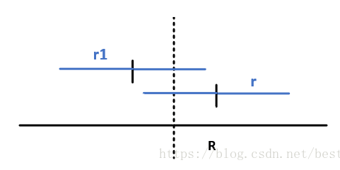

Table of Contents
- 1. Top Layer
- 1.1. Install Emacs
- 1.2. 版本控制
- 1.3. 初始化配置
- 1.4. 必备操作集锦
- 1.4.1. 不重启emacs直接生效配置方法
- 1.4.2. 选中、复制、粘贴、查找
- 1.4.3. 光标操作
- 1.4.4. 命令主菜单
- 1.4.5. 帮助主菜单
- 1.4.6. 多buffer管理：
- 1.4.7. 根目录Roaming打开方式及三种快速目录切换
- 1.4.8. 设置默认文件夹
- 1.4.9. 补全工具选择：
- 1.4.10. 中文字体支持，数字加字母乱码解决方案
- 1.4.11. 删除文中多行空白行
- 1.4.12. SPC键位说明：
- 1.4.13. recentf快速打开最近目录
- 1.4.14. 不重启重载配置的方法，利用SPC=M-m
- 1.4.15. 手写configuration文件，对于package installation
- 1.4.16. 图片显示问题 org-mode
- 1.4.17. 终极图片处理
- 1.4.18. 正则表达式
- 1.4.19. undo-redo undo-tree
- 1.4.20. 大小写转换
- 1.4.21. 快速打开init.el文件的方法
- 1.4.22. 设置emacs为默认全屏打开
- 1.4.23. 取消每次打开.py文件都要询问一次是否载入python layer
- 1.4.24. 设置emacs默认的python版本，cmd输入python打开的版本
- 1.4.25. 设置jupyter notebook的默认启动路径
- 1.4.26. reload buffer
- 1.4.27. 文件管理：快速打开新文件及新窗口的方法以及最近文件的方法
- 1.4.28. 重命名buffer
- 1.4.29. Ctrl+space被搜狗输入法占用
- 1.4.30. 鼠标指针消失
- 1.4.31. emacs中python-mode出现flycheck多种位置错误
- 2. Emaces Usful Command
- 2.1. Command
- 2.2. 一些解决方案
- 2.3. Spacemacs
- 2.4. Company 自动补全包 命令集
- 2.5. Expand-region 快捷键文本选中 package
- 2.6. Magit package自动上传本地文档到github
- 2.7. Git-auto-commit 每次保存文件自动commit到github 需要在.spaces中初始化才能startup载入
- 2.8. Evil-nerd-commenter Package
- 2.9. Flycheck
- 2.10. Git 综述
- 2.11. 神器：global-set-key自定义绑定 键位 到命令
- 2.12. 重要：配置private layer:yyang181
- 2.13. Configuration Layers
- 2.14. 终极解决方案
- 2.15. web浏览器 w3m
- 2.16. web浏览器eww Windows可用
- 2.17. cygwin linux系统模拟
- 2.18. Smex 让输入命令变得飞快
- 2.19. web浏览器Xwidget & 附带安装pdf阅读器
- 2.20. PDF阅读器
- 3. Latex 编辑命令
- 3.1. 平台搭建
- 3.2. emacs使用总结
- 3.3. auctex/preview使用方法
- 3.4. 导出pdf
- 3.5. 中文环境包
- 3.6. latex编辑公式
- 3.7. latex 设置字体格式
- 3.8. latex设置段落格式
- 3.9. latex 插入图片
- 3.10. latex 新建页
- 3.11. latex 脚注
- 3.12. latex 交叉引用 \label \ref
- 3.13. latex 中新建environment
- 3.14. latex 中分栏
- 3.15. latex 中语法高亮
- 3.16. latex 中页边距设置
- 3.17. latex + bibtex生成参考文献
- 4. Org mode
- 5. Python 语言
- 5.1. 系列软件安装指南
- 5.2. EIN中的使用方法
- 5.3. jupyter notebook魔法技巧
- 5.4. emacs中测试.py文件
- 5.5. 代码测试的基本流程
- 5.6. 帮助命令
- 5.7. 异常处理——try语句
- 5.8. 爬虫
- 5.9. 库
- 5.10. python环境迁移/虚拟环境创建 conda创建环境 pip安装packages
- 5.11. 基线模型
- 5.12. Docker部署
- 5.13. pytorch
- 5.14. 必备操作集锦
- 5.14.1. 正则表达式
- 5.14.2. 文件夹-字符串合并、替换、分割、查找
- 5.14.3. 文件名按名称进行排序(list + numpy)方法
- 5.14.4. list与string互转 list与numpy互转
- 5.14.5. 获取html内容的python写法
- 5.14.6. 为python模拟浏览器登陆添加header
- 5.14.7. 快速获取某元素xpath的方法
- 5.14.8. 接管已打开的浏览器方法：解决反爬虫
- 5.14.9. python中的模型保存与转换
- 5.14.10. Tensorboard保存与查看
- 5.14.11. 将列表转换为二维数组，以方便排序和查看最大元素
- 5.14.12. emacs中代码块批量缩进
- 5.14.13. 批量化 封装化处理图片，脚本的模板
- 5.14.14. init封装.py格式
- 5.14.15. TensorFlow使用的GPU
- 5.14.16. tensorboard中graph图使用说明
- 5.14.17. python中的class类
- 5.14.18. assert
- 5.14.19. TensorFlow将模型保存为pb模型
- 5.14.20. 测试目录是否testdir存在，如果不存在，它将为您创建目录
- 5.14.21. 如何确认库中有没有某个特定的module
- 5.14.22. scipy.misc 找不到imread解决方案
- 5.14.23. import future
- 5.14.24. init.py文件的作用
- 5.14.25. 求解线性、非线性方程组
- 5.14.26. 判断变量是否已经被定义，是否存在
- 5.14.27. 在图片上添加文字、直线、和点（圆）以及cv2.imshow方法快速展示图形结果（便于debug）
- 5.14.28. 平方和平方根的计算 以及直线斜率及度数的计算公式
- 5.14.29. numpy 库
- 5.14.30. os库
- 5.14.31. 带有索引的enumerate枚举方法
- 5.14.32. .gitignore 文件编写 和通过github进行版本控制的方法
- 5.14.33. pip使用方法
- 5.14.34. 创建文件夹、处理文件-shutil库
- 5.14.35. 数据保存-Python合集
- 5.14.36. 数据保存-MATLAB合集
- 5.14.37. type help dir帮助命令
- 5.14.38. 字典操作不能简单的复制！为浅拷贝
- 5.14.39. 画图
- 5.14.40. 动态变量
- 5.14.41. 参数解析 parse args
- 5.14.42. 转义字符
- 5.14.43. 列表内部元素 规则查找
- 5.14.44. 检查数据类型
- 5.14.45. Windows GUI控制脚本 可以用来控制任何软件
- 6. Matlab语言
- 7. C++语言 & linux系统
- 7.1. windows下子系统linux搭建
- 7.2. windows下gcc g++平台搭建
- 7.3. Makefile环境搭建
- 7.4. SDK 软件开发工具包：opencv等库的安装及使用
- 7.5. ubuntu及oracal虚拟机 （过时）
- 7.6. 可以直接用成熟的Windows shell程序
- 7.7. MobaXterm 连接bender
- 7.8. cygwin 类Unix的Windows端软件
- 7.9. 在emacs中编译 运行cpp文件
- 7.10. debug gdb
- 7.11. C++基本语法
- 7.11.1. 基本符号
- 7.11.2. 函数用法
- 7.11.3. 字符常量、转义字符、运算符、循环体
- 7.11.4. 数组
- 7.11.5. 指向数组的指针
- 7.11.6. 字符串序列
- 7.11.7. 时间和日期
- 7.11.8. c++的基本输入输出
- 7.11.9. public private
- 7.11.10. vector向量
- 7.11.11. unordered-map 字典
- 7.11.12. 构造函数和析构函数 类对象的初始化赋值和分配空间清除
- 7.11.13. :: -> :
- 7.11.14. new关键字的
- 7.11.15. typedef
- 7.11.16. template 模板
- 7.11.17. #define语句
- 7.12. c++代码书写
- 7.13. linux-ubuntu环境Docker部署流程
- 8. ubuntu系统16.04版本
- 9. Html语言
- 10. batch批处理语言
- 11. SenseTime-FrameWork
- 12. Adobe Illustrator 作图软件
- 13. Adobe Photoshop 作图软件
- 14. github
- 15. SenseTime
- 16. Algorithems & Data Structure
- 17. Algorithems & Data Structure 2019 11 02
- 18. LeetCode学习
- 19. 人工智能-AI
- 20. Spring 2018
- 21. 小技巧
- 22. 能力
- 23. 专业知识、技能提升-牧原期间整理
- 24. 终极写作模板 latex完美版
- 25. 待完成插件
- 26. TODO 待办事项
- 26.1. 临时处理
- 26.2. 紧急 紧急类型
- 26.3. 学习 学习知识，技能 长期任务
- 26.3.1. TODO 算法 C++ 英语 深度学习
- 26.3.2. TODO 关于emacs Python 支持 以及jupyter notebook支持 matlab支持
- 26.3.3. TODO 学习英语
- 26.3.4. TODO 学习Python语言 Tesoroflow
- 26.3.5. TODO 学习emacs orgmode中的思维导图gtd
- 26.3.6. TODO 学习子龙山人知乎视频中关于package自定义，加速emacs启动等相关内容
- 26.3.7. TODO 学习使用latex编辑公式 也即math mode
- 26.3.8. TODO 学习使用思维导图模式来处理Ability的demo
- 26.3.9. TODO 解决掉demo.org转换html文件时速度极慢的问题
- 26.3.10. TODO 关于emacs中的解决不了的问题，可以咨询Chen Bin在github
- 26.3.11. TODO 最有效的学习layer配置自定义
- 26.3.12. TODO 学习latex中配置begin environment的方法，对于论文写作很有帮助
- 26.3.13. TODO 中文字体设置 https://www.jianshu.com/p/b1751078e28e
- 26.4. 事件 需要处理的事情
- 26.5. 零碎 零碎的事情
- 27. 代码测试区
- 28. emacs版本控制文件位置
1 Top Layer
1.1 Install Emacs
1.1.1 Up to date backup
github.com 完备版本的备份需要.emacs.d and .spacemacs同时存在 并且路径如下：
.emacs.d c:/Users/Administrator/AppData/Roaming .spacemacs c:/Users/Administrator/AppData/Roaming
！注意，git自动上传命令缺少.spacemacs，需要手动上传
1.1.2 win10安装核心解决方案
- !!! 需要把官网的dep库也下载下来，放到emacs/bin里面！！！用VPN下载package 这样才能有ssh等linux专用命令，才能在windows环境下连接到库
- 核心是init.el文件，.spacemacs需要在2个user-config位置将init.el中要求的库对应添加
1.1.3 安装注意事项：
1. 先复制.emacs.d文件夹 然后启动emacs一次 2. 删除原本的.spacemacs文件 3. 将备份库里面的.spacemacs文件复制到路径中 4. 在init.el中修改emacs版本信息 5. 安装source code pro字体 6. 用cygwin64安装C++支持dll 7. 安装gnutls dll添加ssh等连接远端服务区的命令
1.1.4 错误代码说明
Source Code Pro是一种字体 百度搜索安装即可
1.2 版本控制
1.2.1 创建不受emacs官方git管理的文件夹
- 生成private dean layer
M-x configuration-layer/create-layer命令，然后回答几个问题，创建dean的private layer. dean是layers的name,我用的是yyx 需要编辑~/.spacemacs文件，添加dean layer (line 32 to add yyx layer)
- 文件目录
dean目录会出现在.emacs.d/private/dean, 里面有一个package.el文件
- 逻辑
- 新建layer
- 将创建的layer添加到emacs的载入配置中，即添加到.spacemacs中
- 修改package.el进行package管理
- el文件提供package的逻辑
- 提供可载入的feature
my-feature.el里面有代码如下
;; Your code goes here ... (provide 'my-feature)
当配置文件(require 'my-feature)时，自动寻找同名.el .elc文件
- 将.el .elc文件所在路径加入环境变量
(push "some/path" load-path)
- 启动emacs的时候的delay
require是直接load所有package Auto-loading是当且仅当使用该package的时候才load
(autoload 'some-function "some-file")
- use-package
(use-package helm) ; require (use-package helm :defer t) ; autoload (use-package helm :defer t :init ;; Code to execute before Helm is loaded :config ;; Code to execute after Helm is loaded )
- package.el写法
<layer>-packages 比如：yyx-packages作为包的名字 (defconst mylayer-packages '( ;; Get the package from MELPA, ELPA, etc. some-package (some-package :location elpa) ;; A local package (some-package :location local) ;; A package recipe (some-package :location (recipe :fetcher github :repo "some/repo")) ;; An excluded package (some-package :excluded t) )) <layer>/init-<package> 这条语句一定要有，init package - layer相关el载入顺序
packages.el funcs.el config.el keybindings.el If a package is part of the end user's dotspacemacs-additional-packages, it will also be installed. 在layer层
- 提供可载入的feature
1.3 初始化配置
1.3.1 代码管理
- 启动逻辑
init.el .spacemacs
- 注意事项
启动初始化包在.emacs.d文件夹里面的init.el文件中 之后需要有.spacemacs文件与.emacs.d文件在同一路径下 以github 包含在.emacs.d文件夹内的.spacemacs文件为准 并将其提出来放到文件夹外面 不要用init.el生成的.spacemacs文件作为配置 修改init.el来添加package的时候，需要手动增加.spacemacs中的pack 其位置为：最底部quoto后面
- install package最终结果
- 在init.el里面require
- 在.spacemacs 中layer函数中，additional—package中添加此package的名字
1.4 必备操作集锦
1.4.1 不重启emacs直接生效配置方法
C-x C-e 光标前面的运行一条语句。立即生效。 M-x -region 选择一个 region , M-x load-file ~/.emacs M-x eval-buffer
1.4.2 选中、复制、粘贴、查找
Ctrl+space (从当前光标处开始选中) 注意：需要在日期与键盘中把切换输入法的快捷键解绑 Ctrl+Shift+space (从当前光标处开始选中) 如果上一条命令不可用，临时用这个 Ctrl+w (剪切) Alt+w (复制) Ctrl+y (粘贴) C-s 开始正向查找 C-r 开始方向查找 C-g 取消之前的按键（将会成为最常用的按键之一） C-/ 取消之前的命令
1.4.3 光标操作
M-< 快速跳转到buffer的开头 M-> 快速跳转到buffer的结尾 C-l 把当前光标所在的行移动到屏幕的正中央 C-g g 跳转到第几行 c-x c-s 保存当前文件 c-v 上滚屏 m-v 下滚屏 c-x c-b 列出所有缓冲区/没什么用 直接用打开文件就行了 c-x h 全选 c-space 标记 c-/ 撤销命令 c-x o 切换窗口（窗口排列时切换当前窗口） M-m TAB一键循环切换buffer c-e M-b 先切换到行尾 然后按句子单位回退 M-e M-a 换行 到指定位置 最好用的命令 以区块为单位，切换首位 M-; 注释掉当前行 M-m 0-9 提供于windows-numbering包 作用：当有多个buffer同时打开时，一键切换当前选中buffer
1.4.4 命令主菜单
M-m spacemacs buffer管理 M-x helm-command c-c 当前文档格式 编译菜单 c-x 文档保存 新建等管理 c-h 帮助
1.4.5 帮助主菜单
c-h 主命令 c-h a 查找关键词对应的函数 c-h f 函数 c-h v 变量 c-h k 快捷键
1.4.6 多buffer管理：
C-x 0 数字0 关闭当前子窗口 ！！！！！最好用 C-x b helm-buffer-list更好用一点 C-x C-b buffer-list C-x o 在窗口之间切换 C-x 0 关闭当前窗口 C-x 1 只显示当前窗口 C-x 2 纵向新建窗口 C-x 3 横向新建窗口 M-m #number 跳转到第几个窗口 存疑：是否所有mode下都可以用？ 恢复上一次的窗口状态 C-c left undo C-c right redo 同窗口下多buffer切换（大于两个，否则可以直接M-m Tab） M-m b 1-9
1.4.7 根目录Roaming打开方式及三种快速目录切换
在路径中输入
Type ~/ 回车 进入Home路径/即Roaming Type / 回车 进入盘符根路径，即C: Type ./ 回车 进入默认路径，即在default-directory中设置的路径 SPC f r 快速打开最近文件目录
1.4.8 设置默认文件夹
;; 设置默认文件夹 (setq default-directory "c:/Users/Administrator/test/emacs")
1.4.9 补全工具选择：
ivy轻巧 极简主义
1.4.10 中文字体支持，数字加字母乱码解决方案
(set-fontset-font "fontset-default" 'gb18030 '("Microsoft YaHei" . "unicode-bmp"))
1.4.11 删除文中多行空白行
M-x flush-lines ^$ Flush lines containing match for regexp:^$
1.4.12 SPC键位说明：
SPC = M-m
1.4.13 recentf快速打开最近目录
SPC f r
1.4.14 不重启重载配置的方法，利用SPC=M-m
SPC f e R 只能处理.spacemacs M-x eval-buffer 同上 M-x load-file init.el 可以重载任何文件
1.4.15 手写configuration文件，对于package installation
- 使用帮助菜单，查看变量功能
- init.el中手写配置函数
学习package中.el的写法
(defcustom org-download-screenshot-method "gnome-screenshot -a -f %s" "最后一个短语限定该变量的默认值" "The tool to capture screenshots." :type '(choice (const :tag "gnome-screenshot" "gnome-screenshot -a -f %s") "tag 是标签，紧跟着的是变量的实际取值" (const :tag "scrot" "scrot -s %s") (const :tag "gm" "gm import %s") (const :tag "imagemagick/import" "import %s") ;; screenshot method in ms-windows, /capture=4 stands for interactive. (const :tag "IrfanView" "i_view64 /capture=4 /convert=\"%s\"") ;; screenshot script in osx, -i stands for interactive, ;; press space key to toggle between selection and ;; window/application mode. (const :tag "screencapture" "screencapture -i %s") ;; take an image that is already on the clipboard, for Linux (const :tag "xclip" "xclip -selection clipboard -t image/png -o > %s") ;; take an image that is already on the clipboard, for Windows (const :tag "imagemagick/convert" "convert clipboard: %s") (function :tag "Custom function")))
1.4.16 图片显示问题 org-mode
安装缺少的.dll文件即可 首先运行C-h v image-library-alist，看看你的版本需要什么文件 在org中显示image C-c C-x C-v org-taggle-inline-images
1.4.17 终极图片处理
- 常规解决方案iimage-mode
file: ./a.png 插入图片的org-mode 代码 file:images/a.png M-x 运行iimage-mode可以在emacs中直接显示/隐藏图片 #+CAPTION: 电话拨打过快过多 设置图片标题 #+ATTR_HTML: :width 100% 设置图片尺寸：表示宽度和浏览器页面宽度相同
- 更好的解决方案: org-download + imagemagick
- 配置方法
- 安装
安装org-download及imagemagick cygwin版本 可以直接安装windows版本 添加环境变量
- imagemagick的使用方法及配置
convert clipboard: d:/test/test.png cmd命令行将剪切板上的图片保存为test.png 需要在导入org-download的时候修改默认的org-download-screenshot配置 在init.el中添加如下语句
(setq org-download-screenshot-method "convert clipboard: %s")
则设置了org-download-screenshot-method的默认方法为imagemagick中的convert
- 安装
- 配置方法
- 使用方法
M-x org-download-screenshot-methods 一键完成粘贴 剪切板中的图片，不需要保存路径 C-S-y 绑定按键到该命令即可 (global-set-key (kbd "C-S-y") 'org-download-screenshot) -连接表示需要 同时按键 或者直接将images中的文件拖动到emacs即可，需要org-download包支持 C-c C-x C-v 显示所插入的图片 开启org-taggle-inline-image-mode 控制开启和关闭
- 问题解决
如果出现无法插入图片的情况，可以尝试先建立文件夹
1.4.18 正则表达式
- 测试
正则表达式测试工具 https://c.runoob.com/front-end/854
asadfjlsdjflsb sadflkjsdal sadfjl c.b c.d cdd abbcdd abb cdd
- 使用核心思想
[]表示仅识别出现过的字符 (ab) 将括号中字符作为一个分组 {}表示出现的次数
m = re.findall('[(](.*?)[)]', img) '[(](.*?)[)]' 表示（）内部的所有元素 - 最常用的命令集合
"." 一个匹配除了换行符(newline)之外任何单个字符的特殊字符 a.b 任意字符 "*" 表示某个前导表达式重复任意次 “fo*”: “f”, “fo”, “foo” 重复字符 + 匹配前导表达式至少一次的出现 “ca+r”匹配串“car”和“caaaar”，不匹配“cr” 至少一次 ? 匹配前导表达式至多一次的出现 “ca?r”仅仅匹配“car”或“cr” 至多一次 ^ 仅仅匹配在文本中行首的那个空串的特殊字符。就是说，“^foo”匹配在行首的 “foo” 设定查找位置行首 $ 和“^”相似，但仅匹配行尾的空串。因此“x+$”匹配在行尾的一个或多个“x” 的串 设定查找位置行尾 [0-9]{1,2} 表示个数，数字个数为1-2的字符串 最好得方法： 精准匹配，用字符串替换的思想 删除保留可选 前瞻： exp1(?=exp2) 查找exp2前面的exp1 后顾： (?<=exp2)exp1 查找exp2后面的exp1 负前瞻： exp1(?!exp2) 查找后面不是exp2的exp1 负后顾： (?<!=exp2)exp1 查找前面不是exp2的exp1 - 学习链接网站
- 常用命令
Emacs的正则表达式都需要转义 例如：/(<[/]?/(li/|ul/|div/).*?>/) C-M-s isearch-forward-regexp向前正则匹配 C-M-r isearch-backward-regexp向后正则匹配 M-x query-replace-regexp正则查询替换（对于每一次替换都要确认） M-x replace-regext正则替换（直接替换全部匹配的所有，不需要确认） M-x re-builer 手动生成正则表达式 M-x regexp-builder 同上,手动生成正则表达式 M-x regexp-opt 根据目标内容生成对应的正则表达式 可以利用emacs的函数exgrep-opt自动生成一个高效的正则匹配表达式： 注：在elisp代码中需要用2个反斜线\\进行转义，而在minibuffer中输入时，只需要1个\进行转义 在重复进行正则表达式操作时，可以直接用上、下光标按键，查看正则表达式的历史匹配记录
- 正则表达式应用实例
[a]正则搜索内容为"空格"或"<TAB>"： 按键：C-M-s： \|<tab> 按键说明：第1个按键为空格" "，第2个按键为"\|"是或者的意思，第3个按键为<TAB>，显示为"^I"。 Regexp I-search: \|^I [b]正则搜索内容为"回车"： 按键：C-M-s：C-q C-j，显示为^J Regexp I-search: ^J [c]正则搜索内容为“Tab制表符“： 按键：C-M-s：<tab>，显示为^I Regexp I-search: ^I [d]查找IPv4格式的IP地址: 按键：C-M-s：\\(\[0-9\]\\{1,3\\}\\.\\)\\{3\\}\[0-9\]\\{1,3\\} 61\.139\.[0-9]\{1,3\}\.[0-9]\{1,3\} [e]正则替换IP地址：(将所有61.139.*.* 替换为1.2.3.4) 按键：C-M-%：61\.139\.[0-9]\{1,3\}\.[0-9]\{1,3\}<RET>1.2.3.4 Query replace regexp (default 61\.139\.[0-9]\{1,3\}\.[0-9]\{1,3\} -> 1.2.3.4: [f]正则替换：将多个空格或者TAB替换为1个空格 按键：C-M-%：[ C-q<TAB>]+<RET> <RET> Query replacing [ ^I]+ with : (? for help) 按键：C-M-%： Query replace regexp (default [ ^I]+ -> ): [g]正则替换：将从eshell下执行的命令结果拷贝至记录文件中后，替换掉命令结果中的shell命令提示符（ /mnt/sda5d/TDDownload/shell $ 替换为 shell# ) 按键：C-M-%：^/.* \$<RET>shell#<RET> Query replace regexp (default ^/.* \$ -> shell#): [h]正则搜索所有"空格+行尾"（行尾以空格结束，在vim中是/ $）： 按键：C-M-s: +$ [i]正则替换：将多个空行替换为1个空行 按键：M-x replace-regexp:^C-q C-j $<RET><RET> 按键说明：^表示以什么开始，C-q C-j联合按键是一个回车，$表示行尾 Replace regexp (default ^^j$ -> ): [j]正则替换：使用()()进行分组交换（将单词与冒号的组合abc:进行交换: abc） 按键：Ｍ-x replace-regexp:\([a-z]\{1,999\}\)\(\:\)<RET>\2 \1<RET> 按键说明：\(.....\)表示第１个分组，后面可以跟多个分组\(....\)\(.....\)在替换时分别以\1\2\3来表示之前定义的各个分组。 [k]正则替换：将css文件中abc{中间加个空格abc { 按键：M-x replace-regexp:\([a-z]+\)\({\)<RET>\1 \2<RET> 按键说明：在\(.....\)编组之间的字符直接用字符即可，不用加上\转义 [l]正则替换：将所有单词的首写字母替换为首写字母大写 按键：M-x replace-regexp:\(\w+\)<RET>\,(capitalize \1)<RET> 按键说明：在替换部分\,表示后面跟的不是要用来替换的东西，而是一段lisp程序 [m]正则替换：将所有匹配的文字后面加上一个回车 按键：M-x replace-regexp:\([a-z]+\)\({\)<RET>\&C-qC-j<RET> 按键说明：在替换部分用\&表示前面匹配的所有文字 [n]正则替换：将所有匹配的1 1-1 1-1-1替换为#1 #1-1 #1-1-1 按键：M-x replace-regexp:\(\([0-9]+\-\)*[0-9]+\)<RET>#\1 原文为： 1 1-1 1-1-1 asfa saf 232-33, 11-22-33-44 smesf ijds 101-22-33-23 替换后： #1 #1-1 #1-1-1 asfa saf #232-33, #11-22-33-44 smesf ijds #101-22-33-23 - 用法总结
"." 一个匹配除了换行符(newline)之外任何单个字符的特殊字符 a.b "*" 表示某个前导表达式重复任意次 “fo*”: “f”, “fo”, “foo” + 匹配前导表达式至少一次的出现 “ca+r”匹配串“car”和“caaaar”，不匹配“cr” ? 匹配前导表达式至多一次的出现 “ca?r”仅仅匹配“car”或“cr” “*?, +?, ??” 当有一个紧跟着的“?”，就是是非贪心的了：将尽可能少的匹配。 匹配 “abbb”时，“ab*”将匹配全部（最长有效匹配），而“ab*?”将仅仅匹配“a” （最短有效匹配）。 /{N/} 恰好匹配了 N 次 “x/{4/}”仅仅匹配串“xxxx” /{N,M/} 指定重复次数在N和M之间的后缀操作符 [ ... ] 字符集 “[]a]” 匹配“]”或“a” 想包括“-”，它要是字符集中的第一个或最后一个字符。 或者放在一个范围的后面。如“[]-]”匹配“]”和“-” 包括字符“^”，它可以在除第一个位置以外的任何地方 [^ ... ] 补集合 一个补集合可以匹配换行符，除非换行符被指定为补集合中的一个字符 ^ 仅仅匹配在文本中行首的那个空串的特殊字符。就是说，“^foo”匹配在行首的 “foo” $ 和“^”相似，但仅匹配行尾的空串。因此“x+$”匹配在行尾的一个或多个“x” 的串 /｜ 或逻辑 A/|B A 或 B /( ... /) 分组结构，围住“/｜”的选择项，以实现别的操作 \d [0-9] /D “/(.*/)/1”匹配任何有完全相同的两部分而无换行符的串 “/(.*/)” 匹配前一半，可以是任意的串，“/1”匹配后面的，但必须和前面的完全相同 /` /' /= 匹配空串，分别对应 缓冲区开头 结尾 点（point）处 /b 匹配空串，但仅在一个词的开始或者结尾的 例如，“/bfoo/b”匹配任何作为单 独的词出现的“foo”。“/bballs?/b”匹配作为单独的词出现的“ball”或 “balls”。 /B 匹配空串，但不在词的开始或结尾处 /< 匹配空串，但仅在词的开始处。仅当一个构成词的字符在缓冲区开始处时“/<” 匹配缓冲区开始处的空串。 /> 匹配空串，但仅在词的结尾处。仅当缓冲区尾部有构成词的字符时“/>”匹配缓 冲区尾部的空串。 /w 匹配任何构成词的字符。由语法表决定这些字符是什么。等效于[a-zA-Z0-9_-] /W 匹配任何非构成词的字符。 /s 匹配空白字符，包括制表符、换行符、回车符和空格符 \S 匹配非空白字符 /sC 匹配任何语法是 C 的字符。这里 C 是一个指定特定语法类的字符：如“w”为词 的构成字符，“-”或“ ”为空白，“.”为普通标点符号，等等。 /SC 匹配任何字符不属于语法 C。 /cC 匹配任何属于种类 C 的字符。例如，/cc匹配汉字，/cg匹配希腊字符等。 如果想了解已知种类，用M-x describe-categories 。 /CC 匹配所有不属于种类C的字符。 在正则表达式中有3种类型的括号:方括号 [和花括号{ 。方括号"["内是需要匹配的字符，花括号"{"内是指定匹配字符的数量。圆括号( 则是用来分组的。 注意：[0-9]{8} 与 ^[0-9]{8}$的用法，后者可以限定了子串匹配只包含0-9 注意：可以用单个字符来精准匹配， 但是如果有多个字符需要同时匹配，则需要加上[]括号集 正则表达式一定要用[]来定义字符取值集合 注意：只有搜索语句可以用正则表达式，替换语句必须精准 此外：slips语言中需要加上/来转义，但是minibar中的正则替换命令不需要转义 前瞻： exp1(?=exp2) 查找exp2前面的exp1 后顾： (?<=exp2)exp1 查找exp2后面的exp1 负前瞻： exp1(?!exp2) 查找后面不是exp2的exp1 负后顾： (?<!=exp2)exp1 查找前面不是exp2的exp1 这四个概念用来处理删除操作比较合适，即保留某个exp表达式，括号内为需要保留的内容 贪婪与非贪婪模式 .* 贪婪模式 尽可能多的匹配 .*? 非贪婪模式，第一次匹配到就结束匹配
1.4.19 undo-redo undo-tree
C-x u 进入 undo-tree-visualizer-mode , p n 上下移动， b f 在分支左右切换， t 显示时间戳，选定需要的状态后， q 退出。
1.4.20 大小写转换
- 改变选定区域的大小写
C-x C-l (downcase-region) 选定区域全部改为小写 C-x C-u (upcase-region) 选定区域全部改为大写
- 从光标开始，处理单词后半部分
M-c (capitalize-word) 首字母改为大写 M-u (upcase-word) 全部改为大写 M-l (downcase-word) 全部改为小写
- 从光标位置开始，处理单词前半部分
M– M-c negtive-argument; capitalize-word M– M-u negtive-argument; upcase-word M– M-l negtive-argument; downcase-word
1.4.21 快速打开init.el文件的方法
可以再init.el中简单的配置命令,然后按F2就可以了
;; 快速打开配置文件 (defun open-init-file() (interactive) (find-file "~/.emacs.d/init.el")) ;; 这一行代码，将函数 open-init-file 绑定到 <f2> 键上 (global-set-key (kbd "<f2>") 'open-init-file)
1.4.22 设置emacs为默认全屏打开
代码
(setq initial-frame-alist (quote ((fullscreen . maximized))))
1.4.23 取消每次打开.py文件都要询问一次是否载入python layer
(add-to-list 'auto-mode-alist '("\\.py?\\'" . python-mode)) 此外，如果.py文件的开头有类似于#usr/bin/python3等代码，会设置python的默认版本，也会引发询问python layer的过程。
1.4.24 设置emacs默认的python版本，cmd输入python打开的版本
1.4.25 设置jupyter notebook的默认启动路径
- 该设置完成之后只对从anaconda prompt中键入Jupyter notebook方式打开有效，windows cmd中也支持
- 打开cmd，首先进入到Jupyter的安装目录，我的是在D:\Python\Anaconda\Scrips中。然后，输入命令“jupyter notebook –generate-config”
- 找到#c.NotebookApp.notebookdir =' '，删掉开头的“#”，在‘ ’中输入你要启动的目录路径
- c.NotebookApp.notebookdir = 'd:/github/codetest/python'
- windows解决方案 直接修改快捷方式中的目标
这是快捷方式中的原始路径 目标
D:\anaconda\python.exe D:\anaconda\cwp.py D:\anaconda D:\anaconda\python.exe D:\anaconda\Scripts\jupyter-notebook-script.py "%USERPROFILE%/" 把"%USERPROFILE%/"都删除即可，之后就可以用快捷方式直接打开了
1.4.26 reload buffer
重载当前文件，不用关闭然后在重新打开emacs
M-x revert-buffer
1.4.27 文件管理：快速打开新文件及新窗口的方法以及最近文件的方法
M-m f 文件管理最好用的profix命令 M-m f r 打开最近文件目录 M-m f o 将当前文件或路径在另外的窗口中打开 M-m f h/l 打开当前文件所在的路径以便于打开路径中的其他文件 C-x C-f 新建文件/打开同路径下的某个文件 主要用于没有打开过的本路径下的文件 C-x b 打开buffer 管理器 将scratch脚本保存成带后缀的格式即可创建新文件了 不好用 C-x 0 数字0 关闭当前子窗口
1.4.28 重命名buffer
M-x rename-buffer 重命名当前buffer M-x rename-file 重命名当前文件
1.4.29 Ctrl+space被搜狗输入法占用
- 终极解决方案（autohotkey修改第二级别mark set）
- 安装autohotkey
- 使用
https://blog.csdn.net/ChinarCSDN/article/details/82914429
- 新建autohotkey.script
- 写入命令
- 将写好的脚本放入开始菜单启动路径C:\Users\17186\AppData\Roaming\Microsoft\Windows\Start Menu\Programs\Startup
- 语法规范
- 禁用特定窗口的热键
- 安装autohotkey
- 修改注册表 已被证实无效
- 说明
- 修改注册表，因为默认的注册表键值为Ctrl+space
- 修改语言栏设置
- 注册表修改方法
Procedure Go to Start > Type in regedit and start it Navigate to HKEY_CURRENT_USER/Control Panel/Input Method/Hot Keys Select the key named: 00000070 for the Chinese (Traditional) IME - Ime/NonIme Toggle hotkey 00000010 for the Chinese (Simplified) IME - Ime/NonIme Toggle hotkey In the right sub-window, there are three subkeys. Key Modifiers designate Alt/Ctrl/Shift/etc and is set to Ctrl (02c00000). Virtual Key designates the finishing key and is set to Space (20000000). Change the first byte in Key Modifiers from 02 to 00 Change the first byte in Virtual Key from 20 to FF Log off and log back on. I don't think it's necessary to restart. Do not change the Hot keys for input languages in Control Panel, unless you want to do this all over again.
- 说明
1.4.30 鼠标指针消失
对文本进行编辑，之后移动鼠标即可重现
1.4.31 emacs中python-mode出现flycheck多种位置错误
原因：anaconda的python版本不兼容flycheck
解决方案：将python.exe在环境变量中设置为python3.8即可，将python3.8的路径上移即可
2 Emaces Usful Command
2.1 Command
2.1.1 常用命令
cmd --insecure 模式打开emacs才能有网络连接 cmd --insecure 用Texlive GUI command-line打开emacs之后默认用texlive编译.tex c-x c-s 保存当前文件 m-x list-package 列出所有package c-x o 切换窗口 m-> 文档底部 m-< 文档开头 c-v 上滚屏 m-v 下滚屏 c-x c-b 列出所有缓冲区/没什么用 直接用打开文件就行了 c-x h 全选 c-space 标记 c-@ 标记 c-/ 撤销命令 c-_ 撤销命令 M-m 打开spacemacs主菜单 M-m TAB一键循环切换buffer c-e M-b 先切换到行尾 然后按句子单位回退 M-e M-a 换行 到指定位置 最好用的命令 M-; 注释掉当前行 M-m 0-9 提供于windows-numbering包 作用：当有多个buffer同时打开时，一键切换当前选中buffer M-x eshell 打开命令行工具
2.1.2 命令主菜单
M-m spacemacs buffer管理 M-x helm-command c-c 当前文档格式 编译菜单 c-x 文档保存 新建等管理 c-h 帮助
2.1.3 帮助
c-h 主命令 c-h a 查找关键词对应的函数 c-h f 函数 c-h v 变量 c-h k 快捷键
2.2 一些解决方案
2.2.1 多buffer管理：
先分屏 后打开buffer
C-x 0 关闭当前窗口 C-x 1 只显示当前窗口 C-x 2 纵向新建窗口 C-x 3 横向新建窗口 M-m #number 跳转到第几个窗口
以上几个快捷键就够用了
2.2.2 任意文件同一个窗口打开
C-x C-f 打开文件的命令， type ~/然后回车 直接打开根目录
2.2.3 快捷跳转行数
M-g g 跳转到第几行 需要设置显示行数功能
2.2.4 设置在左侧显示行数功能
2.2.7 在org mode里面插入图片，并且可以选择直接在本文文档中查看图片
首先，把图片文件放入当前路径中 接着用file:decom.png 格式在org中插入图片 #+CAPTION: 电话拨打过快过多 设置图片格式 #+ATTR_HTML: :width 100% 设置图片宽带，为当前浏览器的100% 此例中 最后可以用M-x iimage-mode 选择打开minor mode 来查看所插入的图片
2.3 Spacemacs
2.3.1 Spacemacs 配置文件 添加package cuda-mode
添加该段代码到.spacemacs.el文件中的合适位置
;; add packages
;;
(defun dotspacemacs/layers ()
"Configuration Layers declaration."
(setq-default
;; ...
;; List of additional packages that will be installed wihout being
;; wrapped in a layer. If you need some configuration for these
;; packages then consider to create a layer, you can also put the
;; configuration in `dotspacemacs/config'.
;; add packages
dotspacemacs-additional-packages '(
cuda-mode
company
)
;; ...
))
(defun dotspacemacs/config ()
"Configuration function.
This function is called at the very end of Spacemacs initialization after
layers configuration."
;; add packages
dotspacemacs-additional-packages '(
cuda-mode
company
)
;;
)
2.3.2 Spacemacs 配置文件 初始化init.el文件 使所有buffer默认打开company模式
;; Enable global company mode (require 'company) (add-hook 'after-init-hook 'global-company-mode) (setq company-idle-delay 0.1) (setq company-minimum-prefix-length 1) (setq company-backends '((company-capf company-files company-elisp company-inf-ruby company-anaconda company-go company-irony company-clang company-cmake company-css company-yasnippet) (company-dabbrev company-dabbrev-code)))
2.4 Company 自动补全包 命令集
M-n M-p select Enter: to complete C-s, C-r and C-o: Search through the completions with M-(digit) to quickly complete with one of the first 10 candidates.
2.5 Expand-region 快捷键文本选中 package
M-m v 选中当前光标所在的单词，继续按v则扩大选区 V则缩小选区 具体命令见下方说明
2.6 Magit package自动上传本地文档到github
C-x g 已通过global-set-key自定义绑定 键位 到命令magit-status
在新打开的magit窗口中（通过magit-status命令）
s 小写s表示git add命令 c 表示commit命令 但以上两个步骤已经通过git-auto-commit自动commit过了 P u 大写P表示push命令
2.7 Git-auto-commit 每次保存文件自动commit到github 需要在.spaces中初始化才能startup载入
2.7.1 配置步骤
需要两步：
- unsigned 需要在.spaces中初始化才能startup载入 add package
- gac-automatically-push-p 当变量不为0时，还可以自动push！！！！ 在package里面customize这个变量即可
- 绑定按键 C-x p 自动commit+push
- 下载下来package之后， 需要运行 M-m ! 打开shell窗口配置github
- 显示信息: minor mode窗口会有gac标志
git config --global user.email yyang181@github.com
2.7.2 使用方法
当且仅当 处理单个文件的编译时，想要多次一键测试结果 可以开启 gac-mode,也即git-auto-commit-mode
快捷键
C-x p 打开gac模式，使得保存文件之后自动commit push
2.7.3 按键配置代码 init.el文件
;; global-set-key (global-set-key (kbd "C-x p") 'git-auto-commit-mode)
2.8 Evil-nerd-commenter Package
2.8.1 配置步骤
unsigned 需要在.spaces中初始化才能startup载入
需要在init.el中配置默认按键
;; set up default hotkeys for evilnc ;; ;; evil-nerd-commenter (evilnc-default-hotkeys)
设置按键
(evilnc-default-hotkeys) 使用默认按键
2.8.2 使用方法
C-u number M-; 注释从当前行开始的 number 行
2.9 Flycheck
2.9.1 配置方法
package unsigned 需要在.spacemacs中配置
To enable Flycheck add the following to your init file:
(add-hook 'after-init-hook #'global-flycheck-mode)
需要设置变量的值来激活
C-h v type flycheck-check-syntax-automatically 把这个变量的值修改即可
2.10 Git 综述
结合两个package完美一键push到github
- git-auto-commit: 保存当前文件时自动commit
- magit: s打开magit status界面
- magit: P u 一键push到github
- 前提条件是配置了git config –global
- 大量文件跟更改可以直接用git desktop
- 单文件修改调试可以用此文中的快捷键方法
2.11 神器：global-set-key自定义绑定 键位 到命令
2.11.1 方法一 修改init.el文件
;; global-set-key (global-set-key (kbd "C-x g") 'magit-status)
2.11.2 方法二 可能会出现单次设置单次使用
M-x global-set-key type 需要绑定的键位 并按enter确认 type 需要绑定的命令 并按enter确认
2.12 重要：配置private layer:yyang181
2.12.1 优先使用.spacemacs文件，如果没有，使用init.el文件生成.spacemacs
2.12.2 只修改两个文件init.el 和.spacemacs
2.12.3 设置users layer .spacemacs
(setq-default dotspacemacs-configuration-layers
'(
;; other layers
;; rms layer added at the end of the list
yyang181
))
2.12.4 .spacemacs文件
- 设置users layer .spacemacs
(setq-default dotspacemacs-configuration-layers '( ;; other layers ;; rms layer added at the end of the list yyang181 )) - 配置layers variables
- 方法一
例子
(defun dotspacemacs/layers () ;; List of configuration layers to load. (setq-default dotspacemacs-configuration-layers '(auto-completion (git :variables git-magit-status-fullscreen t git-variable-example nil) smex)))代码解释
auto-completion 是layer名称 git 是package名称 :variables 表示配置variables git-magit-status-fullscreen 等是变量名 及变量value
- 方法二
dotspacemacs/user-init 在这个函数中配置variables
- 方法一
- 禁止package在其他layer的使用
- 允许package在其他layer的使用
- 允许或者禁用layer的package
(defun dotspacemacs/layers () ;; List of configuration layers to load. (setq-default dotspacemacs-configuration-layers '(auto-completion (spacemacs-ui-visual :packages (not neotree fancy-battery))))(defun dotspacemacs/layers () ;; List of configuration layers to load. (setq-default dotspacemacs-configuration-layers '(auto-completion (spacemacs-ui-visual :packages (not neotree fancy-battery)))) - Global line numbers
(setq-default dotspacemacs-line-numbers t)
2.13 Configuration Layers
2.13.1 可以检查其他人的layer里面的文件来学习使用方法
2.13.2 结构
[layer_name] |__ [local] | |__ [package 1] | | ... | |__ [package n] |-- layers.el |__ packages.el |__ funcs.el |__ config.el |__ keybindings.el [] = directory
2.13.3 layer中各种文件的作用
layers.el The place to declare additional layers packages.el The list of packages and their configuration functions (init, post-init, etc…) funcs.el All functions defined in the layer (used in package configuration for instance) config.el Layer configuration (defines the layer variables default values and setup some config variables) keybindings.el General key bindings no tied to a specific package configuration
Packages can be: ELPA packages installed from an ELPA compliant repository local packages in a layer’s local folder installed from an online source using quelpa.
2.13.4 配置packages
- 声明packages
- 初始化packages
- 官方说明
(defun <layer>/init-xxx () ...body )
- 配置例子
(use-package color-moccur :commands (isearch-moccur isearch-all) :bind (("M-s O" . moccur) :map isearch-mode-map ("M-o" . isearch-moccur) ("M-O" . isearch-moccur-all)) :init (setq isearch-lazy-highlight t) :config (use-package moccur-edit)) :init (add-hook 'prog-mode-hook #'ace-jump-mode) (add-hook 'text-mode-hook #'ace-jump-mode)) :custom (comint-buffer-maximum-size 20000 "Increase comint buffer size.") (comint-prompt-read-only t "Make the prompt read only.")) - 尽可能放到:config里面 不要放到：init里面，为了加快启动速度
- 自动安装到系统
:ensure t
- 自动删除旧版更新命令
:config (setq auto-package-update-delete-old-versions t) (setq auto-package-update-hide-results t) (auto-package-update-maybe)
- 官方说明
2.14 终极解决方案
2.14.1 优先在init.el文件中处理包
2.14.2 步骤：在init.el文件中导入package 并且配置即可
2.14.3 例子
2.15 web浏览器 w3m
2.15.1 配置
https://github.com/venmos/w3m-layer/blob/master/READMECN.org 下载cygwin 用类Unix工具将w3m安装包转为win api文件 安装w3m 配置emacs并使用
2.15.2 effective operation
按照linux安装w3m的步骤，在cygwin中操作实现 两个package需要安装，w3m和emacs-w3m
2.15.3 一定要配置w3m emacs-w3m两个package在cygwin中
cygwin中安装完成之后，windows系统中自动包含了所需的package
2.15.4 需要配合cygwin一起使用！
2.15.5 快捷键
SPC a w o 打开链接 SPC a w f 打开文件 SPC a w s 使用 Google 搜索 SPC a w b 用 helm 打开书签
2.15.6 键位绑定
o Ace-link w p 使用 MPV 播放 Youtube 与 Blibli w y 拷贝光标处链接 w f 打开文件 w o 打开链接 w O 在新标签中打开链接 w t 打开光标处链接到新标签 w T 打开新的空白标签 w s 使用 Google 搜索 w S 在新标签中搜索 w l 下一个标签页 w h 上一个标签页 w d 保存页面为文本文件 w D 保存页面为 HTML w x 关闭标签 w a 添加到收藏夹 w b 用 helm 打开收藏夹 w B 用 w3m 收藏夹 w e 编辑收藏夹 w m 使用外部游览器打开链接 q 挂起 W3M Q 退出 W3M B 返回 N 前进 H 打开默认主页 R 刷新 C-f 向下移动一页 C-b 向上移动一页
2.15.7 可用的快捷键-一定要注意大小写
C-x-k ： 关闭当前标签页 U ： 打开URL V ： 打开文件 G ：在标签页打开一个网址 S ： 用google进行搜索 B ： 后退 N： 前进 H ： 主页 RET ： 打开连接 页面操作 C-n 向下一行 C-p 向上一行 C-b 向后 C-f 向前 C-v 向下滚屏 M-v 向上滚屏 > 向右滚 < 向左滚 ， 向左滚一格 . 向右滚一格 书签 a: 添加到当前页到书签 M-a : 添加该url到书签 v: 显示书签 E : 编辑书签 C-k : 删除书签 C-_: 撤销书签 使用百度，google搜索 这个就是到搜索框，会提示TEXT，敲完之后，enter进行搜索 其他重要操作 M : 用外部默认浏览器打开当前页 ESC M : 用外部浏览器打开链接 C-c C-c: 搜索框输入text之后 转到 C-c C-k ：停止载入
2.15.8 github上面的推荐配置：
(defun dotspacemacs/user-config ()
(setq w3m-home-page "https://www.google.com")
;; W3M Home Page
(setq w3m-default-display-inline-images t)
(setq w3m-default-toggle-inline-images t)
;; W3M default display images
(setq w3m-command-arguments '("-cookie" "-F"))
(setq w3m-use-cookies t)
;; W3M use cookies
(setq browse-url-browser-function 'w3m-browse-url)
;; Browse url function use w3m
(setq w3m-view-this-url-new-session-in-background t)
;; W3M view url new session in background
)
2.15.9 自用配置 有错误 备用
;;set location
(add-to-list 'exec-path "D:/w3m")
;; web浏览器w3m
(require 'w3m)
(require 'mime-w3m)
;; 设置主页
(setq w3m-home-page "http://www.baidu.com")
;; 设置显示图片
(setq w3m-default-display-inline-images t)
(setq w3m-default-toggle-inline-images t)
;; 显示图标
(setq w3m-show-graphic-icons-in-header-line t)
(setq w3m-show-graphic-icons-in-mode-line t)
;; 启用cookie
(setq w3m-use-cookies t)
;; 设定w3m运行的参数，分别为使用cookie和使用框架
(setq w3m-command-arguments '("-cookie" "-F"))
;; Browse url function use w3m
(setq browse-url-browser-function 'w3m-browse-url)
;; W3M view url new session in background
(setq w3m-view-this-url-new-session-in-background t)
2.16 web浏览器eww Windows可用
2.16.1 配置
emacs中自带有eww库，可以用M-x eww测试 但是需要下载libxml2支持 xmlsoft官网下载win32版本的库即可 共需四个Dll 放到emacs/bin目录即可 libxml2-2.dll libiconv-2.dll liblzma-5.dl zlib1.dll 将下载下来的整个文件夹添加到环境变量中即可
2.16.2 快捷键
q eww-quit 退出eww g eww-reload 重载该页面 w eww-copy-page-url 拷贝当前URL到kill ring d eww-download 下载光标所在的URL,下载的目录存在变量`eww-download-directory`中,默认为~/Downloads l eww-back-url 回退上一个URL r eww-forward-url 前进到下一个URL H eww-list-histories 显示浏览历史 b eww-add-bookmark 加书签 B eww-list-bookmarks 显示书签列表 & eww-browse-with-external-browser 使用外部浏览器打开当前浏览的URL,外部浏览器由变量`shr-external-browser`决定 v eww-view-source 查看页面源代码 C eww-cookie-list 列示Cookie
原地址：https://blog.csdn.net/MathaDora/article/details/79468528
2.17 cygwin linux系统模拟
2.17.1 cygwin是什么
提供从unix到windows的应用软件移植 unix与linux的区别 gbd makefile
2.17.2 安装
需要把c:/cygwin/bin添加到环境变量
2.17.3 基本操作
DF 直接查看下本地驱动器 cd /cygdriver/d 打开D盘 cd D: 打开D盘
2.17.4 技巧
确认这几个包是否有,对于w3m库 cvs autoconf libgc-dev libncurses5-dev
2.17.5 package installation methods
2.17.6 package installation methods New version
2.17.7 安装w3m emacs-w3m的技术细节
2.18 Smex 让输入命令变得飞快
2.18.1 配置：
- To auto-start Smex every time you open Emacs add these lines to your .emacs file:
(require 'smex) ; Not needed if you use package.el (smex-initialize) ; Can be omitted. This might cause a (minimal) delay ; when Smex is auto-initialized on its first run.
- Bind some keys:
(global-set-key (kbd "M-x") 'smex) (global-set-key (kbd "M-X") 'smex-major-mode-commands) ;; This is your old M-x. (global-set-key (kbd "C-c C-c M-x") 'execute-extended-command)
- 使用方法
C-s/C-r switches to the next/previous match. Enter executes the selected command. M-x smex M-X smex-major-mode-commands runs Smex, limited to commands that are relevant to the active major mode. C-h f, while Smex is active, runs describe-function on the currently selected command. M-. jumps to the definition of the selected command. C-h w shows the key bindings for the selected command. (Via where-is.) smex-show-unbound-commands shows frequently used commands that have no key bindings smex-history-length to change the number of recent commands that Smex keeps track of.
2.19 web浏览器Xwidget & 附带安装pdf阅读器
3 Latex 编辑命令
3.1 平台搭建
3.1.1 TeXLive + Emacs + AUCTex + SumatraPDF
3.1.2 通过清华镜像安装textlive
安装成功之后包含有：xpdf/pdfTex 需要添加到环境变量，之后emacs才能在任何cmd中调用latex命令
3.1.3 通过elpa emacs package管理工具安装AUXTex
否则无法编译导出pdf文件
3.1.4 安装auctex package
- source code 在init.el中设置auctex
;; 所有关于latex导出pdf的设置 (require 'auctex) (require 'cdlatex) ;; (load "auctex.el" nil t t) ;; 从elpa导入的包不需要本命令 ;; (load "preview.el" nil t t) (add-hook 'LaTeX-mode-hook #'LaTeX-install-toolbar) (add-hook 'LaTeX-mode-hook 'turn-on-reftex) ; with AUCTeX LaTeX mode (add-hook 'latex-mode-hook 'turn-on-reftex) ; with Emacs latex mode (setq TeX-auto-save t) (setq TeX-parse-self t) (setq-default Tex-master nil) (setq TeX-global-PDF-mode t TeX-engine 'xetex) ;; 设置默认编译命令 (add-hook 'LaTeX-mode-hook (lambda() (add-to-list 'TeX-command-list '("XeLaTex" "%`xelatex%(mode)% %t" TeX-run-TeX nil t)) (setq TeX-command-default "XeLaTex") )) ;; (add-hook 'LaTeX-mode-hook (lambda () (add-to-list 'TeX-command-list '("XeLaTeX" "%`xelatex%(mode)%' %t" TeX-run-TeX nil t))) ;; (add-hook 'LaTeX-mode-hook (lambda () (setq TeX-command-default "XeLaTex"))) ;; 将cdlatex设置为AUCtex的辅模式 (add-hook 'LaTex-mode-hook 'turn-on-cdlatex) - 在.spacemacs中添加auctex到package中
- 修改elpa自动下载下来的auctex.el文件
如果没有这一步，会报错找不到auctex feature 一般来说feature是由同名feature.el提供，并在结尾有 (provide 'feature) 因此，修改文件即可
- 需要修改init.el中的语句
auctex-12.1.1库中只有preview.el文件
3.2 emacs使用总结
使用xelatex作为latex编译工具，支持中文 C-c C-c 选择xelatex编译pdf C-c C-v 直接查看生成的pdf文件 或者C-c C-c选择view
3.3 auctex/preview使用方法
3.3.2 preview-latex
C-c C-p C-p preview-at-point 对当前环境进行预览 重复命令取消 C-c C-p C-e preview-environment C-c C-p C-s preview-section C-c C-p C-r preview-region C-c C-p C-b preview-buffer C-c C-p C-d preview-document C-c C-p C-c C-p preview-clearout-at-point ...取消命令同上 C-c C-k LaTeX/TeX Output/Kill Job
3.4 导出pdf
3.4.1 编译方法
需要先编译
C-c C-c 编译latex文件 C-c C-l 查看编译日志 如果编译通过会在原路径生成.pdf 之后打开pdf即可
3.4.2 使用XeLaTex工具导出PDF
3.4.3 可选解决方案：
- 使用默认编译工具：
C-c C-c 用xelatex编译
- 安装latex-preview-pane
正常安装方法 此外，默认的导出pdf方式为pdflatex 一定要在latex-preview-pane.el中把所有字符串pdflatex替换为xelatex 需要配合pdf阅读器使用，doc-view-mode
- 实时启动包
M-x latex-preview-pane-mode (latex-preview-pane-enable) 配置init.el 全局启动该package
- 键位绑定
Refresh Preview (bound to M-p) Open in External Program (Bound to M-P) Disable LaTeX Preview Pane (turns the mode off, you can also use M-x latex-preview-pane-mode to toggle it off. Customize LaTeX Preview Pane (opens a customization buffer where you can set the command to use for generating previews)
3.4.4 终极解决方案：auctex package
C-c C-c 编译生成pdf C-c C-v 直接查看生成的pdf文件 完美
3.5 中文环境包
% 中文支持包
\usepackage{ctex}
\usepackage{CJK}
% 调用环境变量
\begin{CJK}{UTF8}{song}
some content here.
具体内容
\end{CJK}
3.6 latex编辑公式
3.6.1 博客资源：如何写公式
3.6.2 公式环境
3.6.3 公式符号
- 常用西文符号
- 上标和下标
$$\sum_{i=1}^{n} a_i=0$$ - 公式中加上文本 \mbox{txt}
$$\mbox{对任意的$x>0$}, \mbox{有 }f(x)>0. $$ - 标号 运算符
- 括号
小括号 中括号直接用 大括号需要转译
\{1+2\} {1+2} - 空格
\;
- 矩阵
$$\begin{matrix}…\end{matrix}$$，使用&分隔同行元素，\\换行 - 特殊符号的写法
- 特殊符号的写法汇总整理
- 最重要的符号是反斜杠\
- 斜杠符号 用于latex语言中的路径分隔 以及作为数学中的除号
- 单引号 双引号的表示 很特殊
`需要输入的内容' 前单引号为tab上方的按键 后单引号为enter左边的按键 ``需要输入的内容双引号'' 双引号为单引号情形的两个即可
- 矩阵的中括号
\left[ 中间部分为需要括起来的内容 \right] - 矩阵的写法
\begin{matrix} 1 & 2 & 3 \\ 4 & 5 & 6 \\ 7 & 8 & 9 \end{matrix} - 分数的写法
\frac{分子}{分母} - 省略号
\cdots 水平方向省略号 \vdots
- 不等号
\neq \leqslant \geqslant
- 无穷大
\infty
- 最重要的符号是反斜杠\
3.6.4 其他还有一些数学环境里的「要」和「不要
用 $ ... $ 而不用 \( ... \)；
用 align 环境而不用 eqnarray 环境；
用 matrix, bmatrix, pmatrix, vmatrix, Vmatrix 等环境而不用 array 环境去实现矩阵；
用 \bigl, \bigr 等命令来处理定界符，而尽可能避免 \left 和 \right。
换行 优先用\\换行符，因为空一行来换行的话会出现开头自动tab的问题
空出一行 可以用 \vbox{}\\
最后一行一定不能有\\ 并且空行跟换行符\\不能同时用
3.7 latex 设置字体格式
3.7.1 设置字体大小
- 第一种方法
\fontsize{字体尺寸}{行距} - 第二种方法 从小到大
Command Nominal Point Size Exact Point Size \tiny 5 5 \scriptsize 7 7 \footnotesize 8 8 \small 9 9 \normalsize 10 10 \large 12 12 \Large 14 14.40 \LARGE 18 17.28 \huge 20 20.74 \Huge 24 24.88 \tiny \scriptsize \footnotesize \small \normalsize 采用默认！ \large \Large \LARGE \huge \Huge
3.7.2 设置字体颜色
\usepackage{xcolor}
\textcolor{color}{words to be in color}
\color{color}{}
\colorbox[rgb]{r,g,b}{text} %背景颜色
3.7.3 设置字体居中
\centerline{\large{Homework 1}}
3.7.4 设置字体加粗 下划线等命令
- 命令汇总
\usepackage{ulem} \uline{text} 下划线 \uuline{text} 双下划线 \uwave{text} 波浪线 \sout{text} 删除线 \xout{text} 斜删除线 显示直立文本： \textup{文本} 意大利斜体： \textit{文本} slanted斜体： \textsl{文本} 显示小体大写文本： \textsc{文本} 中等权重： \textmd{文本} 加粗命令： \textbf{文本} 默认值： \textnormal{文本} 下划线： \underline{文本} Latex的斜体命令是\emph{文字} Latex的下划线命令是\underline{文字} Latex的加粗命令是\textbf{文字} - 用法解释
\begin{bfseries} 这段我希望他能加黑啊 \end{bfseries}或者
{\bfseries 这段我希望他能加黑啊} - 多个格式混合使用 先居中 在字号 在加粗
\centerline{\huge{\textbf{Project Abstract}}} emph{\textbf{blablablabla}}
3.8 latex设置段落格式
3.8.1 首行缩进
\noindent 设置不缩进 \indent 设置缩进
3.8.2 空行
\vbox{}\\ 要再最后加\\
\vspace{12pt} 不要再最后加\\
3.9 latex 插入图片
3.9.2 图片路径设置格式
\includegraphics{images//1.png}
3.9.3 一般需要包含的宏包
\usepackage{epsfig}
\usepackage{graphicx}
\usepackage{subfigure}
3.9.4 神器：图片处理，超链接处理
- 自动编号图片源码
- 步骤分析
- 先在头文件区域建立newcommand模型来处理图片
- 在文件区域通过文件名引用图片，并且自动编号
- 特别注意，引用的时候的label是文件名！而不是标题名
- 引用命令 \ref{}
- newcommand源码
\newcommand{\scalefig}[3]{ \begin{figure}[ht!] % Requires \usepackage{graphicx} \centering \includegraphics[width=#2\columnwidth]{#1} %%% I think \captionwidth (see above) can go away as long as %%% \centering is above %\captionwidth{#2\columnwidth}% \caption{#3} \label{#1} \end{figure}} - newcommand源码解释
- 输入三个参数 文件路径 图片宽度 标题
- 文件路径即文件的label(由此，我最好是吧图片放到同一路径里面方便使用)
- 图片宽度：归一化列宽，0.5即50%
- 正文中图片源码
\scalefig{homework_example_fig}{0.5}{Figure Generated By Listing~\ref{homework_example}}
- 步骤分析
- 图片超链接设置
- 需要配置usepackage包
\usepackage[dvipdfm, %pdflatex,pdftex这里决定运行文件的方式不同 pdfstartview=FitH, CJKbookmarks=true, bookmarksnumbered=true, bookmarksopen=true, colorlinks, %注释掉此项则交叉引用为彩色边框(将colorlinks和pdfborder同时注释掉) pdfborder=001, %注释掉此项则交叉引用为彩色边框 linkcolor=blue, anchorcolor=green, citecolor=green ]{hyperref} - 在正文中插入超链接的命令
\href{URL}{text} \url{URL} \nolinkurl{URL} \hyperbaseurl{URL} \hyperimage{imageURL}{text} \hyperdef{category}{name}{text} \hyperref{URL}{category}{name}{text} \hyperref[label]{text} \hyperlink{name}{text} \hypertarget{name}{text} \phantomsection \cleardoublepage \phantomsection \addcontentsline{toc}{chapter}{\indexname} \printindex \autoref{label} - 最常用的插入超链接的命令
\hyperref[result1.png]{Fig.\ref{result1.png}}其中，[]里面的是label {}里面的是隐式链接
- 需要配置usepackage包
- 网址超链接
\href{https://github.com/yyang181/ee243/blob/master/nips_2017/nips_2017.tex}{github}
3.9.5 nips图片格式
\begin{figure}[h]
\centering
\fbox{\rule[-.5cm]{0cm}{4cm} \rule[-.5cm]{4cm}{0cm}}
\caption{Sample figure caption.}
\end{figure}
3.9.6 博客图片格式
\begin{figure}
\begin{center}
\includegraphics[width=0.32\linewidth]{lena.eps}
\caption{An image of Lena.}
\label{Fig:1}
\end{center}
\vspace{-0.5em}
\end{figure}
3.9.7 多个图片排列 tabular
\begin{figure}
\centering
\begin{tabular}{ccc}
\includegraphics[width=0.32\linewidth]{lena.eps} &
\includegraphics[width=0.32\linewidth]{lena.eps} &
\includegraphics[width=0.32\linewidth]{lena.eps} \\
(a) & (b) & (c)\\
\end{tabular}
\caption{Three images of Lena. }
\label{Fig:4}
\vspace{-0.5em}
\end{figure}
3.10 latex 新建页
\clearpage 优先用这个 \newpage
3.11 latex 脚注
\footnotemark[num] 添加脚注
\footnotetext[num]{text} 标注出脚注内容，必须放在正文里面
\thanks{text} 直接脚注
3.12 latex 交叉引用 \label \ref
3.12.1 用法解释
图片的Figure.1这类编号是自动生成的，并且随着图片数量的变化而变化。
为了能够随时使用特定图片，可以给该图片一个label，这个label也是自动编号的。
使用的时候直接\ref这个label即可的到图片的编号。
3.14 latex 中分栏
3.14.2 双栏模式进入和退出
\twocolumn \onecolumn
3.15 latex 中语法高亮
3.15.1 以c语言为例
\documentclass{ctexart}
\usepackage{listings}
\usepackage{xcolor}
\lstset{
columns=fixed,
numbers=left, % 在左侧显示行号
frame=none, % 不显示背景边框
backgroundcolor=\color[RGB]{245,245,244}, % 设定背景颜色
keywordstyle=\color[RGB]{40,40,255}, % 设定关键字颜色
numberstyle=\footnotesize\color{darkgray}, % 设定行号格式
commentstyle=\it\color[RGB]{0,96,96}, % 设置代码注释的格式
stringstyle=\rmfamily\slshape\color[RGB]{128,0,0}, % 设置字符串格式
showstringspaces=false, % 不显示字符串中的空格
language=c++, % 设置语言
}
\begin{document}
{\setmainfont{Courier New Bold} % 设置代码字体
\begin{lstlisting}
#include <iostream>
int main()
{
std::cout << "Hello, World!" << std::endl;
}
\end{lstlisting}}
3.15.2 更全面的代码参数设置见网址https://blog.csdn.net/lydyangliu/article/details/9208635
\usepackage{graphicx}
\usepackage{xcolor}
\usepackage{listings}
\lstset{%
alsolanguage=Java,
%language={[ISO]C++}, %language为，还有{[Visual]C++}
%alsolanguage=[ANSI]C, %可以添加很多个alsolanguage,如alsolanguage=matlab,alsolanguage=VHDL等
%alsolanguage= tcl,
alsolanguage= XML,
tabsize=4, %
frame=shadowbox, %把代码用带有阴影的框圈起来
commentstyle=\color{red!50!green!50!blue!50},%浅灰色的注释
rulesepcolor=\color{red!20!green!20!blue!20},%代码块边框为淡青色
keywordstyle=\color{blue!90}\bfseries, %代码关键字的颜色为蓝色，粗体
showstringspaces=false,%不显示代码字符串中间的空格标记
stringstyle=\ttfamily, % 代码字符串的特殊格式
keepspaces=true, %
breakindent=22pt, %
numbers=left,%左侧显示行号 往左靠,还可以为right，或none，即不加行号
stepnumber=1,%若设置为2，则显示行号为1,3,5，即stepnumber为公差,默认stepnumber=1
%numberstyle=\tiny, %行号字体用小号
numberstyle={\color[RGB]{0,192,192}\tiny} ,%设置行号的大小，大小有tiny,scriptsize,footnotesize,small,normalsize,large等
numbersep=8pt, %设置行号与代码的距离，默认是5pt
basicstyle=\footnotesize, % 这句设置代码的大小
showspaces=false, %
flexiblecolumns=true, %
breaklines=true, %对过长的代码自动换行
breakautoindent=true,%
breakindent=4em, %
escapebegin=
\begin{CJK*}{GBK}{hei},escapeend=\end{CJK*}
\begin{CJK*}{GBK}{hei},escapeend=\end{CJK*}
,
aboveskip=1em, %代码块边框
tabsize=2,
showstringspaces=false, %不显示字符串中的空格
backgroundcolor=\color[RGB]{245,245,244}, %代码背景色
%backgroundcolor=\color[rgb]{0.91,0.91,0.91} %添加背景色
escapeinside=``, %在``里显示中文
%% added by http://bbs.ctex.org/viewthread.php?tid=53451
fontadjust,
captionpos=t,
framextopmargin=2pt,framexbottommargin=2pt,abovecaptionskip=-3pt,belowcaptionskip=3pt,
xleftmargin=4em,xrightmargin=4em, % 设定listing左右的空白
texcl=true,
% 设定中文冲突，断行，列模式，数学环境输入，listing数字的样式
extendedchars=false,columns=flexible,mathescape=true
% numbersep=-1em
}
\begin{document}
3.16 latex 中页边距设置
\usepackage{geometry}
\geometry{a4paper,scale=0.8}
上面命令设置了纸张为a4 纸，并且版心占页面长度的比例为80%；scale也可以改为ratio，表示版面边距占页面长度的比例。该宏包还可以设置页面的上下左右边距，例如
\geometry{a4paper,left=2cm,right=2cm,top=1cm,bottom=1cm}
3.17 latex + bibtex生成参考文献
3.17.1 latex书写
3.17.3 生成参考文献列表 1 2 1 1
（1）点击“LaTex"编译，模板文件夹中会生成*.aux文件、*.dvi文件、*.log文件以及*.gz文件；
（2）点击“BibTex“编译，模板文件中会生成*.blg文件和*.bbl文件；
（3）点击“LaTex"编译，获得新的*.aux文件、*.dvi文件、*.log文件以及*.gz文件；
（4）再次点击“Latex”编译，即可查看生成结果。
3.17.4 最终代码示例
\bibliographystyle{ieee}
\bibliography{ref}
\cite{paszke2016enet}
4 Org mode
4.1 配置
需要安装web-mode详情见html语言中的配置。
4.2 Useful Command
4.2.1 编译
c-c c-e 编译生成html网站格式 c-c c-e 可选生成latex pdf
4.2.2 标题
- 命令汇总
TAB 切换标题（只针对当前选中主标题） s-TAB 切换标题（对整个文本内容） m-left/right 升降级标题 m-enter 插入一个同级标题 RET 表示回车键 M-LEFT/RIGHT 升级/降级当前标题，不允许有子标题的存在 M-S-LEFT/RIGHT 升级/降级标题树，即标题树内的各级标题相应升/降级 M-UP/DOWN 在同级标题间上/下移标题树，不能跨级别移动 M-RET 在当前标题后插入同级标题符号（即换行符和星号） C-RET 在当前标题树后插入同级标题符号 M-S-RET 在当前标题后插入同级TODO标题 C-S-RET 在当前标题树后插入同级TODO标题 C-c * 把光标所在行转成标题 C-c - 把光标所在行转成列表
- 常用命令
M-S-LEFT/RIGHT 升级/降级标题树，即标题树内的各级标题相应升/降级 M-RET 在当前标题后插入同级标题符号（即换行符和星号） C-RET 在当前标题树后插入同级标题符号 M-S-RET 在当前标题后插入同级TODO标题 C-S-RET 在当前标题树后插入同级TODO标题 C-c * 把光标所在行转成标题 C-c - 把光标所在行转成列表
- 命令解析
C- 带有Ctrl的表示对子树进行操作 M- 带有alt的表示对标题进行操作 -S- 带有shift的表示TODO类型
4.2.3 块标签
<s TAB 快速插入一个 源代码块标签 <e TAB 快速插入一个 example块标签 org9.2版本已经取消掉了本功能 需要在init.el中require (require 'org-tempo) s #+begin_src ... #+end_src e #+begin_example ... #+end_example : 单行的例子以冒号开头 q #+begin_quote ... #+end_quote 通常用于引用，与默认格式相比左右都会留出缩进 v #+begin_verse ... #+end_verse 默认内容不换行，需要留出空行才能换行 c #+begin_center ... #+end_center l #+begin_latex ... #+end_latex L #+latex: h #+begin_html ... #+end_html H #+html: a #+begin_ascii ... #+end_ascii A #+ascii: i #+index: line I #+include: line
4.2.4 排版段落格式
- 单纯文字编辑 空一行即可
- 可以用- 来表示要点提示的项目符号
- 可以用上述块标签来表示源代码等
4.2.5 设置默认在org mode下面使用缩进格式
M-x org-intend-mode 打开缩进模式即可 org-startup-indented 设置该变量令所有文件都打开org-intend-mode
4.3 产生时间戳
快捷命令 动作 C-c . 通过日历选择计划日期，如果在一个时间戳后面使用将产生一个日期段 C-c ! 同上，但产生非激活日期 C-u C c . 产生计划时间或时间段 C-u C c ! 同上，但产生非激活日期 C-c C-c 在时间戳上使用该命令将对该时间戳进行格式补全和校对 C-c < 插入Emacs日历中光标所在处的日期（或当前日期）作为时间戳 C-c > 访问Emacs日历上当前日期；如果光标处有时间戳就访问该日期 C-c C-o 在日程表上访问光标时间戳表示的日期/时间 S-UP/DOWN/LEFT/RIGHT 前/后移日期或时间（小时/分），具体情况由光标所在位置而定
4.4 待办事项功能
4.4.1 使用方法
M-S enter 产生一个同级 to do 标题 C-S enter 产生一个同级子树 to do标题
4.4.2 命令：
M-S enter 产生一个同级 to do 标题 C-S enter 产生一个同级子树 to do标题 S-UP/DOWN 为任务设定优先级 C-c C-c 将光标放在这些内容上，输入 可以直接生效 C-c C-t 变换TODO的状态 先配置TODO类型在配置TODO的状态 C-c / t 以树的形式展示所有的 TODO 作用：快速浏览TODO任务
4.4.3 自定义TODO标签的格式
#+TYP_TODO: 工作(w!) 学习(s!) 休闲(l!) | #+SEQ_TODO: PENDING(p!) TODO(t!) | DONE(d!) ABORT(a@/!)
4.4.4 自定义标签括号里面附加选项
可以在（）中定义附加选项，包括： 字符：该状态的快捷键 ！：切换到该状态时会自动增加时间戳 @ ：切换到该状态时要求输入文字说明 如果同时设定@和！，使用“@/!”
4.4.5 对所有org文档配置默认
(setq org-todo-keywords
'((sequence "REPORT(r)" "BUG(b)" "KNOWNCAUSE(k)" "|" "FIXED(f)")
(sequence "TODO(T!)" "|" "DONE(D@)3" "CANCELED(C@/!)")
))
4.4.6 设置任务优先级
为任务设定优先级是通过 快捷键 S-UP/DOWN
4.4.7 步骤
- 在头文件添加配置,见自定义TODO标签格式
- 将光标放在这些内容上，输入 C-c C-c 可以直接生效
- C-c C-t 变换TODO的状态 先配置TODO类型在配置TODO的状态
- C-c / t 以树的形式展示所有的 TODO
4.5 超链接文件或者图片
4.5.1 常规解决方案iimage-mode
file: ./a.png 插入图片的org-mode 代码 file:images/a.png M-x 运行iimage-mode可以在emacs中直接显示/隐藏图片 #+CAPTION: 电话拨打过快过多 设置图片标题 #+ATTR_HTML: :width 100% 设置图片尺寸：表示宽度和浏览器页面宽度相同
4.5.2 更好的解决方案: org-download + imagemagick
- 配置方法
- 安装
安装org-download及imagemagick cygwin版本 添加环境变量
- imagemagick的使用方法及配置
convert clipboard: d:/test/test.png cmd命令行将剪切板上的图片保存为test.png 需要在导入org-download的时候修改默认的org-download-screenshot配置 在init.el中添加如下语句
(setq org-download-screenshot-method "convert clipboard: %s")
则设置了org-download-screenshot-method的默认方法为imagemagick中的convert
- 安装
4.5.3 使用方法
M-x org-download-screenshot-methods 一键完成粘贴 剪切板中的图片，不需要保存路径 C-S-y 绑定按键到该命令即可 (global-set-key (kbd "C-S-y") 'org-download-screenshot) -连接表示需要 同时按键 或者直接将images中的文件拖动到emacs即可，需要org-download包支持 C-c C-x C-v 显示所插入的图片 开启org-taggle-inline-image-mode 控制开启和关闭
4.6 表格和图片增加标签和说明，并交叉引用
4.6.1 命令
对于表格和图片，可以在前面增加标题和标签的说明，以方便交叉引用。比如在表格的前面添加：
#+CAPTION: This is the caption for the next table (or link)
则在需要的地方可以通过
\ref{table1}
4.7 表格的输入
4.7.1 插入表格
| 1 | one |
| 2 | two |
| 3 | This is a long chunk of text |
| 4 | four |
4.7.2 限制所在列的长度
| 1 | one |
| 2 | two |
| 3 | This=> |
| 4 | four |
4.7.3 美化表格
| 1 | one |
| 2 | two |
| 3 | This=> |
| 4 | four |
4.7.4 操作说明
- 表格的基本操作
C-c | 生成表格，在buffer区域会提示输入N*M,代表N列M行的表格 |- TAB 生成一行 |—+----| 结构 C-c C-c org-table-align 表格对齐 TAB 从左到右，光标从前一个字段跳到下一个字段 S+TAB 从右到左，光标从后一个字段跳到前一个字段 RET 光标移动到下一行。如果下一行还没有表格结构，则新增一行
- column and row editing
C-c space org-table-blank-field 清空当前格 M-a org-table-beginning-of-field 移动到当前表格的第一个格，或者移动前到一个格 M-e org-table-end-of-field 光标移动到当前格的尾部或者移到下一格的尾部。 M-left org-table-move-column-left 向左移动当前列,如果快捷键效果不对，可以使用前面的命令 M-right org-table-move-column-right 向右移动当前列,如果快捷键效果不对，可以使用前面的命令 M-S-left org-table-delete-column 删除光标所在列。如果快捷键效果不对，可使用前面命令 M-S-rigth org-table-delete-column 在光标所在位置插入一列，如果快捷键效果不对，可使用命令 M-up org-table-move-row-up 将光标所在行向上移一列。即与上一行替换位置 M-down org-table-move-row-down 将光标所在行与下一行互换位置。 M-S-up org-table-kill-row 删除当前行 M-S-down org-table-insert-row 插入一行 C-c - org-table-insert-hline 在下一行插入 |---------| 结构，导出时，会转换为一条直线 CC C-c RET org-table-hline-and-move 添加一行 |–+--\vert结构 并新增一行表格 C-c ^ org-table-sort-lines 将最近的两条横线之间的区域进行排序，或者是整张表。如果光标在第一 个格之前，则会提示输入要排序的列。命令方式，会提示排序方式: alphabetically,numberically,or by time.可以升序或者降序排列，也可 以按照自己想要的规则，比如提供给org一个处理函数。大小写严格区分 - regions
C-c C-x M-w org-table-copy-region 复制一个长方形区域至Emacs剪切版。长方形的范围由光标和mark标记来确定 C-c C-x C-w org-table-cute-region 剪切一个长方形区域至Emacs剪切版。 C-c C-x C-y org-table-paste-rectangle 按原有的列数与行数粘贴一个长方形区域至表中。此操作，忽略横向分隔线。 如果表格行列数不足，则自动补充 - 表格格式化
设置字符位置 字段中字符的位置有偏左，偏右，居中。 在表示一个表格的两个'|' 之间使用<c|r|l> 来表示，其中c 代表center,r 代表right,l代表left 示例:
居中 居左 居右 设置单个表格宽度 宽度指的是字符数，表格中的一列中单行显示最大字符数。比如<4>代表该列，每行最多显示4个字符，如果超过4个字符会 被隐藏。
- 表格的计算
1: | 数量 | 单价 | 总价 | 2: | <c> | <c> | <c> | 3: |------
-------–—| 4: | 6 | 18 | | 5: | 5 | 19 | | 6: | 4 | 20 | | 7: | 3 | 21 | | 8: | 2 | 22 | | 9: | 1 | 23 | | 10: #+TBLFM: $3=$1*$2::@6$3=$2-$1::@4$3=$1+\(2 数值的计算，需要在表格下方使用标签 #+TBLFM: ,标签后写说明方法： '\)' 代表列 '@' 代表行 '::' 当有多个表达式时，使用两个冒号进行分隔 将表达式应用到表格中，使用快捷键： C-ucc . 结果如下：
4.8 Org 一键导出latex之后转pdf的方法
4.8.1 方案对比md tex
对于普通的文档编写，优先选用org-md-pdf路径，版式好看，语法相对简单
对于风格固定、只专注于文字的情况，优先选用org-tex-pdf路径，使用固定模板
4.8.2 目前暂时没有比较好的中文解决方案
4.8.3 英文处理直接编译然后用pdftex输出所需要的pdf 中文只能暂时用html格式将就一下了
4.8.4 配置.spacemacs文件来添加中文支持包
;;windows setenv PATH
(setenv "PATH" "C:/ProgramData/Oracle/Java/javapath;%SystemRoot%/system32;%SystemRoot%;%SystemRoot%/System32/Wbem;%SYSTEMROOT%/System32/WindowsPowerShell/v1.0/;C:/Program Files (x86)/ATI Technologies/ATI.ACE/Core-Static;e:/Program Files/Git/cmd;e:/Program Files/Git/mingw64/bin;e:/Program Files/Git/usr/bin;C:/Program Files/Git/cmd;C:/Program Files (x86)/AMD/ATI.ACE/Core-Static;d:/CTEX/UserData/miktex/bin;d:/CTEX/MiKTeX/miktex/bin;d:/CTEX/CTeX/ctex/bin;d:/CTEX/CTeX/cct/bin;d:/CTEX/CTeX/ty/bin;d:/CTEX/Ghostscript/gs9.05/bin;d:/CTEX/GSview/gsview;d:/CTEX/WinEdt")
;; 中文字体的设置，同时解决中英文字体宽度不一致的问题（org-mode的表格可以中英文对齐）。
;; 而且解决了中文字体导致emacs卡的现象。
(dolist (charset '(kana han cjk-misc bopomofo))
(set-fontset-font (frame-parameter nil 'font) charset
(font-spec :family "微软雅黑" :size 16)))
;;重新定义pdfviewer，我设定为了SumatraPDF。
(setq TeX-command-default "XeLaTeX")
(setq TeX-save-query nil )
(setq TeX-show-compilation t)
(setq TeX-view-program-list '(("SumatraPDF" "SumatraPDF %o")))
(setq TeX-view-program-selection '((output-pdf "SumatraPDF")))
(add-hook 'LaTeX-mode-hook (lambda()
(add-to-list 'TeX-command-list '("XeLaTeX" "%`xelatex%(mode)%' %t" TeX-run-TeX nil t))
(setq TeX-global-PDF-mode t TeX-engine 'xelatex)
))
(require 'ox-latex)
(add-to-list 'org-latex-classes
'("org-article"
"
\\documentclass{ctexart}
\\usepackage[colorlinks,linkcolor=black,anchorcolor=black,citecolor=black,CJKbookmarks=True]{hyperref}
\\usepackage{graphicx}
\\usepackage{xcolor}
\\usepackage{xeCJK}
\\usepackage{fixltx2e}
\\usepackage{longtable}
\\usepackage{float}
\\usepackage{tikz}
\\usepackage{wrapfig}
\\usepackage{latexsym,amssymb,amsmath}
\\usepackage{textcomp}
\\usepackage{listings}
\\usepackage{marvosym}
\\usepackage{textcomp}
\\usepackage{latexsym}
\\usepackage{natbib}
\\usepackage{geometry}
\\usepackage{epstopdf}
\\usepackage{epsfig}
\\usepackage{times}
\\geometry{a4paper,centering,scale=0.8}
\\CTEXsetup[format={\\Large\\bfseries}]{section}
\\usepackage{tocbibind}
[NO-DEFAULT-PACKAGES]
[PACKAGES]
[EXTRA]"
("\\section{%s}" . "\\section*{%s}")
("\\subsection{%s}" . "\\subsection*{%s}")
("\\subsubsection{%s}" . "\\subsubsection*{%s}")
("\\paragraph{%s}" . "\\paragraph*{%s}")
("\\subparagraph{%s}" . "\\subparagraph*{%s}")))
4.9 Org mode配置latex环境及常用宏包
中文宏包配置
#+LATEX_HEADER: \usepackage[colorlinks=true,linkcolor=red]{hyperref}
其它可选命令小结
#+LATEX_HEADER: \usepackage[colorlinks=true,linkcolor=red]{hyperref}
#+LATEX_CLASS: org-article
#+TITLE: Org to \LaTeX
#+AUTHOR: Yixin Yang
#+OPTIONS: toc:nil
4.10 Org mode 处理代码块
4.10.1 设置语言环境
在BEGIN_SRC 后面加上语言名字例如python
4.10.2 配置init.el文件
(require 'ob-python)
(require 'ob-clojure)
(require 'ob-perl)
(require 'ob-dot)
(require 'ob-R)
(require 'ob-gnuplot)
(require 'ob-lisp)
(require 'ob-org)
(require 'ob-screen)
(require 'ob-calc)
(require 'ob-js)
(require 'ob-latex)
(require 'ob-plantuml)
(require 'ob-sh)
(require 'ob-ditaa)
(require 'ob-awk)
(require 'ob-octave)
(require 'ob-sed)
(require 'ob-sql)
(require 'ob-sqlite)
(org-babel-do-load-languages
'org-babel-load-languages
'( (perl . t)
(dot . t)
(R . t)
(gnuplot . t)
(clojure . t)
;; (graphviz . t)
(lisp . t)
;; (stan . t)
(org . t)
(screen . t)
(calc . t)
(js . t)
(latex . t)
(plantuml . t)
(ruby . t)
(sh . t)
(python . t)
(emacs-lisp . t)
(ditaa . t)
(awk . t)
(octave . t)
(sed . t)
(sql . t)
(sqlite . t)
))
4.10.3 命令快捷键
<s + TAB直接生成代码块 <s + TAB在代码块中加上行数 -n -r
C-c 编译主菜单 C-c ' 分号 新建一个buffer来写语言，如果保存则回写当前buffer C-c C-c 编译当前代码块并输出结果
4.10.4 例子
(+ 1 2 3 4)
4.10.5 测试matlab代码块
print(100+200)
4.10.6 注意事项
详情见网页https://emacs.stackexchange.com/questions/28441/org-mode-9-unable-to-eval-code-blocks
由于默认的编译格式.elc文件是老版本的，需要全部删除重新编译
直接删掉，然后重新启动emacs即可使用C-c C-c了
4.11 Org-page package创建个人主页
4.11.1 .emacs 文件源代码 手动添加package 注意：目前好像不能用
;;; the following is only needed if you install org-page manually (add-to-list 'load-path "path/to/org-page") (require 'org-page) (setq op/repository-directory "path/to/your/org/repository") (setq op/site-domain "http://your.personal.site.com/") ;;; for commenting, you can choose either disqus, duoshuo or hashover (setq op/personal-disqus-shortname "your_disqus_shortname") (setq op/personal-duoshuo-shortname "your_duoshuo_shortname") (setq op/hashover-comments t) ;;; the configuration below are optional (setq op/personal-google-analytics-id "your_google_analytics_id")
4.12 orgmode中使用思维导图
4.12.1 软件安装
4.13 org-markdown
4.13.1 emacs配置
(with-eval-after-load 'org (add-to-list 'org-export-backends 'md))
4.13.2 去掉table of contents
#+TITLE: org 导出 md #+AUTHOR: me #+OPTIONS: toc:nil
4.14 org-babel代码运行
4.14.1 配置
原文链接：https://blog.csdn.net/sinat_41104353/article/details/84642149
注意：大写的C包含了c cpp语言
(org-babel-do-load-languages
'org-babel-load-languages
'((emacs-lisp . t)
(C . t)
(java . t)
(js . t)
(ruby . t)
(ditaa . t)
(python . t)
(shell . t)
(latex . t)
(plantuml . t)
(R . t)))
4.14.2
4.15 org-latex
4.15.1 使用细则
- orm-mode中C-c C-e l l 生成tex文件
- 删除tex文件第一行时间信息，并且同时打开.tex .org文件
- 使用latex编译生成pdf的步骤对pdf进行修改，C-c C-c编译 C-c C-v修改
org-mode和latex的书写规范一样，空一行代表换行
4.15.2 步骤
4.15.3 可以顺利运行中文的package设置
下面的代码添加到int.el即可，注意要在.org的开头添加Label-class: org-article
(with-eval-after-load 'ox-latex
(add-to-list 'org-latex-classes
'("org-article"
"\\documentclass{article}
\\usepackage{amsmath,amsfonts,amsthm,amssymb}
\\usepackage{setspace}
\\usepackage{fancyhdr}
\\usepackage{lastpage}
\\usepackage{extramarks}
\\usepackage{chngpage}
\\usepackage{soul}
\\usepackage[usenames,dvipsnames]{color}
\\usepackage{graphicx,float,wrapfig}
\\usepackage{ifthen}
\\usepackage{listings}
\\usepackage{courier}
\\usepackage[colorlinks,
linkcolor=blue,
anchorcolor=green,
citecolor=green
]{hyperref}
\\usepackage{xcolor}
\\usepackage{xeCJK}
[NO-DEFAULT-PACKAGES]
[PACKAGES]
[EXTRA]"
("\\section{%s}" . "\\section*{%s}")
("\\subsection{%s}" . "\\subsection*{%s}")
("\\subsubsection{%s}" . "\\subsubsection*{%s}")
("\\paragraph{%s}" . "\\paragraph*{%s}")
("\\subparagraph{%s}" . "\\subparagraph*{%s}"))))
4.15.4 设置org-mode的默认pdf导出模板
- 在init.el中添加latex模板
https://blog.csdn.net/rogeryu1234/article/details/53266947
[NO-DEFAULT-PACKAGES] . 其含义的是不加载org默认的宏包
xeCJK 是对中文的支持, tikz 是LaTeX下的绘图包, listings 是对代码的支持.
;; 所有关于org-导出latex模板的设置，包括自定义模板 ;;org-export latex (with-eval-after-load 'ox-latex (add-to-list 'org-latex-classes '("org-article" "\\documentclass{article} \\usepackage{amsmath,amsfonts,amsthm,amssymb} \\usepackage{setspace} \\usepackage{fancyhdr} \\usepackage{lastpage} \\usepackage{extramarks} \\usepackage{chngpage} \\usepackage{soul} \\usepackage[usenames,dvipsnames]{color} \\usepackage{graphicx,float,wrapfig} \\usepackage{ifthen} \\usepackage{listings} \\usepackage{courier} \\usepackage[colorlinks, linkcolor=blue, anchorcolor=green, citecolor=green ]{hyperref} \\usepackage{xcolor} \\usepackage{xeCJK} [NO-DEFAULT-PACKAGES] [PACKAGES] [EXTRA]" ("\\section{%s}" . "\\section*{%s}") ("\\subsection{%s}" . "\\subsection*{%s}") ("\\subsubsection{%s}" . "\\subsubsection*{%s}") ("\\paragraph{%s}" . "\\paragraph*{%s}") ("\\subparagraph{%s}" . "\\subparagraph*{%s}"))))
- 在org-mode中添加导出latex的配置
#+LATEX_CLASS: org-article #+TITLE: Org to \LaTeX #+AUTHOR: Yixin Yang #+OPTIONS: toc:nil
- 在org-mode中添加新的packages
#+LATEX_HEADER: \usepackage[colorlinks=true,linkcolor=red]{hyperref} - 设置默认org-latex引擎
(setq org-latex-pdf-process '("xelatex -interaction nonstopmode %f" "xelatex -interaction nonstopmode %f"))
4.15.5 修改生成的latex文件中图片尺寸
\includegraphics[width=.5\linewidth] 修改width即可
4.15.6 公式
org mode中公式的用法和latex完全一致 https://blog.csdn.net/csfreebird/article/details/43636615
C-c C-x C-l 预览输入的公式 优先使用的符号 \( \) 插入行内公式 \[ \] 插入行间公式 可能有问题，plain tex符号 $ $ 插入行内公式 $$ $$ 插入行间公式
4.16 必备操作集锦
4.16.1 org mode文档开头配置汇总说明
#+LATEX_HEADER: \usepackage[colorlinks=true,linkcolor=red]{hyperref}
#+LATEX_CLASS: org-article
#+TITLE: Org to \LaTeX
#+AUTHOR: Yixin Yang
#+OPTIONS: toc:nil
#+OPTIONS: ^:{}
4.16.2 org mode编写导出为md pdf时出现下划线转义字符问题
- 单org文件解决方案
在org文件开头加入下列代码
#+OPTIONS: ^:{} a_{b}时，_ 后被 {} 括起来的内容就会被转义 a_b 时，就按普通的方式来显示 - 全局org mode，通过修改elisp语言
https://blog.csdn.net/weixin_34234823/article/details/92663464 在init.el文件中添加如下代码，未经过测试
(setq org-export-with-sub-superscripts '{})
4.16.3 修改org-mode插入图片，图片的默认保存路径
变量名：org-download-image-dir
- 方案一：在org-mode开头添加代码 可以做到实时对应org文件名作为文件夹的名称
可以在插入图片时，将图片放入与.org同名的文件夹下
# -*- eval: (setq org-download-image-dir (file-name-sans-extension (buffer-name))); -*-
- 方案二：在init.el中添加默认的路径信息 固定路径
可将路径修改到assets文件夹下
(setq-default org-download-image-dir "./assets")
- 方案三：在init.el中添加默认的路径信息 文件名作为路径
测试未通过
(setq-default org-download-image-dir (file-name-sans-extension (buffer-name)))
4.16.4 文本加粗的方式
*abc* 将abc加粗
5 Python 语言
5.1 系列软件安装指南
5.1.1 稳定版本
tensorflow 1.15.0 cudn 10 cudnn 7.6.4
更换cuda版本只需要更改环境变量的顺序即可
5.1.2 anaconda
一定记住添加环境变量 dll文件只在anaconda cmd中可以找到，在windows环境中需要设置环境变量才可以 路径：
"d:/anaconda/python.exe" 默认python路径 "d:/anaconda/Scripts" 默认ipython jupyter Spyder等高级程序路径 Anaconda3 Anaconda3\Scripts 这是前两个环境变量 Anaconda3\Library\bin 这是新加的环境变量
5.1.3 TensorFlow
- 安装指南
- 必须安装Microsoft的visual studio
- 下载安装cuda9.0版本+cudnn for cuda9.0 cuda与cudnn的版本号一定要对应！！！！！比如10.0 10.0
- 设置环境变量 bin libnvvp extras\CUPTI\libx64
- Python3.6 3.5均可用 3.7有问题？ 3.7可用
- 安装命令不能简单的用pip install tensorflow 可以参考：pip install –upgrade –ignore-installed tensorflow
- scikit-image package包含了很多image相关的库，需要安装
- conda虚拟环境（anaconda虚拟环境后续不支持）
conda create -n tensorflow python=3.7 conda activate tensorflow conda deactivate 安装额外的包 conda install -n your_env_name [package] 删除环境/包 conda remove -n your_env_name(虚拟环境名称) --all conda remove --name your_env_name package_name # 删除环境中的某个包 安装指定版本的python conda install python=3.6.5
5.1.4 常见问题解决
- 版本信息查询工具
- cuda版本查询命令
nvcc -V
- tensorflow是否用gpu进行计算
可以直接在任务管理器中查看cpu gpu使用量
python import tensorflow as tf sess = tf.Session(config=tf.ConfigProto(log_device_placement=True)) import tensorflow as tf a = tf.constant(1) b = tf.constant(1) c = a + b sess = tf.Session(config =tf.ConfigProto(log_device_placement = True)) print(sess.run(c))
- cuda版本查询命令
- 更换cuda版本及cudnn版本之后
注意事项：
- 删除环境变量中的舍弃版本
- 重装tensorflow
- tensorflow==1.15安装命令
cpu-gpu打包安装命令
pip install --pre "tensorflow==1.15.*"
- pip install 安装package超时
解决方案在前面设置超时时间
pip --default-timeout=100 install gevent
- 通过setup.py安装模块
解压文件 cmd切换到文件setup.py的目录下 先执行 python setup.py build 再执行python setup.py install
- 通过whl安装库
pip install whl
- 更改python版本从3.7-3.6之后出现cv2无法import问题
只需要在cv2的site-package文件夹中将cv2.cp37-winamd64 替换为cv2.cp36-winamd64即可
5.1.5 pytorch
5.1.6 Jupyter notebook
- EIN：在emacs中使用jupyter notebook
- onc for all
- 最常用的快捷键
input cell之间移动 Crtl + 上下键控制 Mate + 上下键控制 上下移动当前cell C-c C-n ein:worksheet-goto-next-input C-c C-p ein:worksheet-goto-prev-input C-c <down> ein:worksheet-move-cell-down C-c <up> ein:worksheet-move-cell-up
执行当前cell C-c C-c ein:worksheet-execute-cell M-RET ein:worksheet-execute-cell-and-goto-next <M-S-return> ein:worksheet-execute-cell-and-insert-below
C-x C-s ein:notebook-save-notebook-command C-x C-w ein:notebook-rename-command
历史记录 M-n ein:worksheet-next-input-history M-p ein:worksheet-previous-input-history
插入cell C-c C-a ein:worksheet-insert-cell-above C-c C-b ein:worksheet-insert-cell-below
打开文件 C-c C-f ein:file-open
删除cell C-c C-k ein:worksheet-kill-cell
清除输出cell C-c C-l ein:worksheet-clear-output
复制粘贴cell C-c C-w ein:worksheet-copy-cell C-c C-y ein:worksheet-yank-cell
打断kernel进程 C-c C-z ein:notebook-kernel-interupte-command
- .ipynb可以直接执行.py文件
load foo.py 载入文件 run foo.py 运行文件
- .ipynb与.py文件的用法区别
.ipynb用来写python文件，用于初始调试，最终成功以后可以导出为.py文件 .ipynb可以用来写测试代码，没有赋值的语句运行直接显示结果
- .ipynb如果引用.py文件，想要实时更新.py的修改内容，必须在ein中打开.py 此时connect to buffer
- 最常用的快捷键
- 基本配置
- 在emacs中打开ein
首次打开需要登录 M-x ein:notebooklist-login 需要先在浏览器中打开一个jupyter notebook 然后输入该网页的url
- 如何获取notebook的密码
在cmd中输入 jupyter notebook list 来查询当前的url及密码，例如 http://localhost:8888/?token=b09b8e943762452bd443e04ce6814ac536316368b2a1b6ae token前面的是url 后面的即是密码，输入即可
- windows环境下重要配置python shell需要跟anaconda的路径匹配，否则无法使用ipython
(setq python-shell-interpreter "d:/anaconda/python.exe" python-shell-interpreter-args "-i d:/anaconda/Scripts/ipython-script.py") - 如何安装EIN package
- 重点谈一下ein包
- ein unsigned需要在.spacemacs文件中添加package 用来调用jupyter notebook虚拟环境
- 配置两个变量 ein:jupyter-default-server-command ein:jupyter-default-notebook-directory
ein:jupyter-default-server-command and set the value to the path you determined above. ein:jupyter-default-notebook-directory and set it to the path where you are keeping your jupyter notebooks.
- 使用方法
https://www.cnblogs.com/keye/p/7697854.html http://tkf.github.io/emacs-ipython-notebook/#ein:console-security-dir https://github.com/millejoh/emacs-ipython-notebook
- 说明
EIN提供的是一个在emacs中复现jupyter notebook的功能，即在emacs中打开 然后通过jupyter notebook打开文件，注意文件名：后面有jupyter的标识 然后即可通过C-c C-c来编译了
- jupyter notebook buffer的控制快捷键
TAB widget-forward widget是小部件 C-M-i widget-backward <S-tab> widget-backward <backtab> widget-backward C-c C-r ein:notebooklist-reload Reload current Notebook list. g ein:notebooklist-reload Reload current Notebook list. p ein:notebooklist-prev-item n ein:notebooklist-next-item q bury-buffer
- ein:中jupyter notebook命令集
key binding --- ------- C-c Prefix Command C-x Prefix Command ESC Prefix Command . ein:notebook-complete-dot C-: ein:shared-output-eval-string <C-down> ein:worksheet-goto-next-input <C-up> ein:worksheet-goto-prev-input <M-S-return> ein:worksheet-execute-cell-and-insert-below <M-down> ein:worksheet-move-cell-down <M-up> ein:worksheet-move-cell-up C-x C-s ein:notebook-save-notebook-command C-x C-w ein:notebook-rename-command M-RET ein:worksheet-execute-cell-and-goto-next M-, ein:pytools-jump-back-command M-. ein:pytools-jump-to-source-command M-n ein:worksheet-next-input-history M-p ein:worksheet-previous-input-history C-c C-a ein:worksheet-insert-cell-above C-c C-b ein:worksheet-insert-cell-below C-c C-c ein:worksheet-execute-cell C-c C-e ein:worksheet-toggle-output C-c C-f ein:pytools-request-tooltip-or-help C-c TAB ein:completer-complete C-c C-k ein:worksheet-kill-cell C-c C-l ein:worksheet-clear-output C-c RET ein:worksheet-merge-cell C-c C-n ein:worksheet-goto-next-input C-c C-o ein:console-open C-c C-p ein:worksheet-goto-prev-input C-c C-q ein:notebook-kill-kernel-then-close-command C-c C-r ein:notebook-restart-kernel-command C-c C-s ein:worksheet-split-cell-at-point C-c C-t ein:worksheet-toggle-cell-type C-c C-u ein:worksheet-change-cell-type C-c C-v ein:worksheet-set-output-visibility-all C-c C-w ein:worksheet-copy-cell C-c C-x ein:tb-show C-c C-y ein:worksheet-yank-cell C-c C-z ein:notebook-kernel-interrupt-command C-c ESC Prefix Command C-c ! ein:worksheet-rename-sheet C-c + ein:notebook-worksheet-insert-next C-c - ein:notebook-worksheet-delete C-c 1 ein:notebook-worksheet-open-1th C-c 2 ein:notebook-worksheet-open-2th C-c 3 ein:notebook-worksheet-open-3th C-c 4 ein:notebook-worksheet-open-4th C-c 5 ein:notebook-worksheet-open-5th C-c 6 ein:notebook-worksheet-open-6th C-c 7 ein:notebook-worksheet-open-7th C-c 8 ein:notebook-worksheet-open-8th C-c 9 ein:notebook-worksheet-open-last C-c { ein:notebook-worksheet-open-prev-or-last C-c } ein:notebook-worksheet-open-next-or-first C-c C-S-l ein:worksheet-clear-all-output C-c C-# ein:notebook-close C-c C-' ein:worksheet-turn-on-autoexec C-c C-, ein:pytools-jump-back-command C-c C-. ein:pytools-jump-to-source-command C-c C-/ ein:notebook-scratchsheet-open C-c C-; ein:shared-output-show-code-cell-at-point C-c <down> ein:worksheet-move-cell-down C-c <up> ein:worksheet-move-cell-up C-c M-+ ein:notebook-worksheet-insert-prev C-c M-w ein:worksheet-copy-cell C-c M-{ ein:notebook-worksheet-move-prev C-c M-} ein:notebook-worksheet-move-next - 打开jupyter notebook的url http://localhost:8892/tree
- windows cmd简单命令打开jupyter的原理
因为最初安装的时候只在anaconda里面装了jupyter，所以Windows的cmd并不能直接运行Jupyter
cmd能直接运行python的原因是吧python的路径添加到了环境path
所以同理，我们吧anaconda安装目录中包含有.exe执行文件 jupyter.exe所在的路径加入环境path即可在 Windows的cmd中直接输入jupyter notebook 打开浏览器中相关内容了
- 旧版本测试安装两个package
- .py文件的控制快捷键
key binding --- ------- C-c Prefix Command C-x Prefix Command ESC Prefix Command C-: ein:shared-output-eval-string <C-down> ein:worksheet-goto-next-input <C-up> ein:worksheet-goto-prev-input <M-S-return> ein:worksheet-execute-cell-and-insert-below <M-down> ein:worksheet-move-cell-down <M-up> ein:worksheet-move-cell-up C-x C-s ein:notebook-save-notebook-command C-x C-w ein:notebook-rename-command M-RET ein:worksheet-execute-cell-and-goto-next M-, ein:pytools-jump-back-command M-. ein:pytools-jump-to-source-command M-n ein:worksheet-next-input-history M-p ein:worksheet-previous-input-history C-c C-a ein:worksheet-insert-cell-above C-c C-b ein:worksheet-insert-cell-below C-c C-c ein:worksheet-execute-cell C-c C-e ein:worksheet-toggle-output C-c C-f ein:file-open C-c C-h ein:pytools-request-tooltip-or-help C-c TAB ein:completer-complete C-c C-k ein:worksheet-kill-cell C-c C-l ein:worksheet-clear-output C-c RET ein:worksheet-merge-cell C-c C-n ein:worksheet-goto-next-input C-c C-o ein:notebook-open C-c C-p ein:worksheet-goto-prev-input C-c C-q ein:notebook-kill-kernel-then-close-command C-c C-r ein:notebook-reconnect-session-command C-c C-s ein:worksheet-split-cell-at-point C-c C-t ein:worksheet-toggle-cell-type C-c C-u ein:worksheet-change-cell-type C-c C-v ein:worksheet-set-output-visibility-all C-c C-w ein:worksheet-copy-cell C-c C-x Prefix Command C-c C-y ein:worksheet-yank-cell C-c C-z ein:notebook-kernel-interrupt-command C-c ESC Prefix Command C-c ! ein:worksheet-rename-sheet C-c ' ein:edit-cell-contents C-c + ein:notebook-worksheet-insert-next C-c - ein:notebook-worksheet-delete C-c 1 ein:notebook-worksheet-open-1th C-c 2 ein:notebook-worksheet-open-2th C-c 3 ein:notebook-worksheet-open-3th C-c 4 ein:notebook-worksheet-open-4th C-c 5 ein:notebook-worksheet-open-5th C-c 6 ein:notebook-worksheet-open-6th C-c 7 ein:notebook-worksheet-open-7th C-c 8 ein:notebook-worksheet-open-8th C-c 9 ein:notebook-worksheet-open-last C-c S ein:worksheet-toggle-slide-type C-c i ein:inspect-object C-c { ein:notebook-worksheet-open-prev-or-last C-c } ein:notebook-worksheet-open-next-or-first C-c C-S-l ein:worksheet-clear-all-output C-c C-# ein:notebook-close C-c C-$ ein:tb-show C-c C-' ein:worksheet-turn-on-autoexec C-c C-, ein:pytools-jump-back-command C-c C-. ein:pytools-jump-to-source-command C-c C-/ ein:notebook-scratchsheet-open C-c C-; ein:shared-output-show-code-cell-at-point C-c <down> ein:worksheet-move-cell-down C-c <up> ein:worksheet-move-cell-up C-c C-x C-l ein:notebook-toggle-latex-fragment C-c C-x C-r ein:notebook-restart-session-command C-c M-+ ein:notebook-worksheet-insert-prev C-c M-w ein:worksheet-copy-cell C-c M-{ ein:notebook-worksheet-move-prev C-c M-} ein:notebook-worksheet-move-next - old version 无效命令
- emacs命令：
M-x ein:notebook=login
- jupyter服务器密码设置
网址：https://blog.csdn.net/clifnich/article/details/53912611
from notebook.auth import passwd alt + enter 来执行这个命令并进入下一行；在下一行里面输入： passwd()
- 我的密码
qaz111
- emacs命令：
- 说明
- ein unsigned需要在.spacemacs文件中添加package 用来调用jupyter notebook虚拟环境
- 重点谈一下ein包
- 在emacs中打开ein
- onc for all
- 浏览器版本jupyter使用方法
- 常用命令
- 快捷键汇总
- 命令模式 (按键 Esc 开启)
Enter : 转入编辑模式 Shift-Enter : 运行本单元，选中下个单元 Ctrl-Enter : 运行本单元 Alt-Enter : 运行本单元，在其下插入新单元 Y : 单元转入代码状态 M :单元转入markdown状态 R : 单元转入raw状态 1 : 设定 1 级标题 2 : 设定 2 级标题 3 : 设定 3 级标题 4 : 设定 4 级标题 5 : 设定 5 级标题 6 : 设定 6 级标题 Up : 选中上方单元 K : 选中上方单元 Down : 选中下方单元 J : 选中下方单元 Shift-K : 扩大选中上方单元 Shift-J : 扩大选中下方单元 A : 在上方插入新单元 B : 在下方插入新单元 X : 剪切选中的单元 C : 复制选中的单元 Shift-V : 粘贴到上方单元 V : 粘贴到下方单元 Z : 恢复删除的最后一个单元 D,D : 删除选中的单元 Shift-M : 合并选中的单元 Ctrl-S : 文件存盘 S : 文件存盘 L : 转换行号 O : 转换输出 Shift-O : 转换输出滚动 Esc : 关闭页面 Q : 关闭页面 H : 显示快捷键帮助 I,I : 中断Notebook内核 0,0 : 重启Notebook内核 Shift : 忽略 Shift-Space : 向上滚动 Space : 向下滚动
- 编辑模式 ( Enter 键启动)
Tab : 代码补全或缩进 Shift-Tab : 提示 Ctrl-] : 缩进 Ctrl-[ : 解除缩进 Ctrl-A : 全选 Ctrl-Z : 复原 Ctrl-Shift-Z : 再做 Ctrl-Y : 再做 Ctrl-Home : 跳到单元开头 Ctrl-Up : 跳到单元开头 Ctrl-End : 跳到单元末尾 Ctrl-Down : 跳到单元末尾 Ctrl-Left : 跳到左边一个字首 Ctrl-Right : 跳到右边一个字首 Ctrl-Backspace : 删除前面一个字 Ctrl-Delete : 删除后面一个字 Esc : 进入命令模式 Ctrl-M : 进入命令模式 Shift-Enter : 运行本单元，选中下一单元 Ctrl-Enter : 运行本单元 Alt-Enter : 运行本单元，在下面插入一单元 Ctrl-Shift-- : 分割单元 Ctrl-Shift-Subtract : 分割单元 Ctrl-S : 文件存盘 Shift : 忽略 Up : 光标上移或转入上一单元 Down :光标下移或转入下一单元
- 命令模式 (按键 Esc 开启)
- 常用命令
执行当前cell，并自动跳到下一个cell：Shift Enter 执行当前cell，执行后不自动调转到下一个cell：Ctrl-Enter 是当前的cell进入编辑模式：Enter 退出当前cell的编辑模式：Esc 删除当前的cell：双D 为当前的cell加入line number：单L 将当前的cell转化为具有一级标题的maskdown：单1 将当前的cell转化为具有二级标题的maskdown：单2 将当前的cell转化为具有三级标题的maskdown：单3 为一行或者多行添加/取消注释：Crtl / 撤销对某个cell的删除：z 浏览器的各个Tab之间切换：Crtl PgUp和Crtl PgDn 快速跳转到首个cell：Crtl Home 快速跳转到最后一个cell：Crtl End
- 快捷键汇总
- 文件导入
- 常用命令
5.2 EIN中的使用方法
5.2.1 打开浏览器的jupyter notebook
5.2.2 在emacs中用M-x ein:notebooklist-login登陆
如何获取notebook的密码 在cmd中输入 jupyter notebook list 来查询当前的url及密码，例如 http://localhost:8888/?token=b09b8e943762452bd443e04ce6814ac536316368b2a1b6ae token前面的是url 后面的即是密码，输入即可
5.2.3 EIN中的文件管理
TAB 小部件跳转 n 下一行 p 上一行 g 重载当前notebook list
5.2.4 EIN:jupyter notebook编辑环境
- 窗口管理
C-x b 打开当前所有的buffer M-m 1/2 左右窗口切换 C-x 1 只显示当前窗口 M-m Tab 切换最近的buffer
- .py文件载入
%load test.py #test.py是当前路径下的一个python文件
- 编辑环境：cell快捷键
- 文件保存
C-x C-s ein:notebook-save-notebook-command C-x C-w ein:notebook-rename-command
- Prefix command
C-c Prefix Command C-x Prefix Command ESC Prefix Command ESC = M-n
- cell 插入与删除
C-c C-a ein:worksheet-insert-cell-above C-c C-b ein:worksheet-insert-cell-below C-c C-k ein:worksheet-kill-cell C-c C-l ein:worksheet-clear-output
- cell 跳转
<C-down> ein:worksheet-goto-next-input <C-up> ein:worksheet-goto-prev-input C-c C-n ein:worksheet-goto-next-input C-c C-p ein:worksheet-goto-prev-input
- cell 移动
<M-down> ein:worksheet-move-cell-down <M-up> ein:worksheet-move-cell-up
- cell 执行
C-c C-c ein:worksheet-execute-cell M-RET ein:worksheet-execute-cell-and-goto-next <M-S-return> ein:worksheet-execute-cell-and-insert-below M-, ein:pytools-jump-back-command M-. ein:pytools-jump-to-source-command M-n ein:worksheet-next-input-history M-p ein:worksheet-previous-input-history
- 历史记录：输入输出
M-n ein:worksheet-next-input-history M-p ein:worksheet-previous-input-history C-c C-e ein:worksheet-toggle-output C-c C-v ein:worksheet-set-output-visibility-all
- kernel中断
C-c C-r 最好用，直接重连kernel C-c C-z ein:notebook-kernel-interrupt-command C-c C-q ein:notebook-kill-kernel-then-close-command C-c C-r ein:notebook-restart-kernel-command
- 文件保存
5.3 jupyter notebook魔法技巧
5.3.1 魔法函数
前缀说明 %： 行魔法函数，只对本行代码生效。 %%： Cell魔法函数，在整个Cell中生效，必须放于Cell首行。 %pwd 显示当前的工作路径 %hist 显示当前Jupyter中，所有运行过的历史代码 %who 该魔法函数用于显示当前Jupyter环境中的所有变量或名称。 %reset 该魔法函数用于删除当前Jupyter环境中的所有变量或名称。 %load 该魔法函数用于加载本地Python文件或者网络中的Python文件，例如本地脚本文件的加载：%load xxx.py %run 该魔法函数用于运行本地或网络中的Python文件，例如本地脚本文件的运行：%run xxx.py。 %lsmagic 列出当前可用的 magic 函数 %ls? 魔法命令后面加上? 显示魔法命令的说明
5.3.2 spyder风格模仿
5.3.3 创建新的.py文件并内容如下
%%writefile test_peace.py import numpy as np print(np.random.randint(1,5))
5.3.4 画图
- plt.plot只能画2D图
%matplotlib inline import matplotlib.pyplot as plt import numpy as np plt.plot()
- plt.imshow可以画任何图形
%matplotlib inline import matplotlib.pyplot as plt import numpy as np plt.plot()
- 多个图像同时显示的方法
- 调试验证 画图
用plot.subplot或者直接画两个图即可 最优的画图选择 示例代码
plt.figure(figsize=(20,10)) plt.imshow(image) plt.savefig(photo_dir+"/image_" + str(i)) plt.figure(figsize=(20,10)) plt.imshow(mask) plt.savefig(photo_dir+"/image_" + str(i))
- subplot 优点，维度可扩展 写法复杂
%matplotlib inline import matplotlib.pyplot as plt import numpy as np plt.subplot(1,2,1) plt.imshow(im) plt.subplot(1,2,2) plt.imshow(book) plt.savefig(photo_dir+"/image_" + str(i))
- np.concatenate 固定axis，只能横向或者纵向扩展，优点在于写法简单
vis = np.concatenate((im, book), 0) # axis 默认为0标识纵向排列 vis = np.concatenate((im, book), 1) # axis = 1 标识横向排列 cv2.imwrite('vis.jpg', vis)
- 调试验证 画图
- cv2读取文件格式为BRG需要先转换为RBG之后才能正确显示
代码为
import cv2 import numpy as np img = cv2.imread("1 (1).jpg") # BRG转换为RBG image = image[...,::-1] hsv=cv2.cvtColor(img,cv2.COLOR_BGR2HSV)#HSV空间
5.3.5 jupyter notebook实时调整参数输出结果
必须在浏览器版本的jupyter中可用，emacs版本中的EIN不行
- 函数调用
详情见advanced-line-detection项目
import cv2 import numpy as np import matplotlib.pyplot as plt from perspective_regionofint_main import * from thresholding_main import * from ipywidgets import interactive, interact, fixed #used in interactive thresholding operation writeup = 1 #used in interactive thresholding operation verbose_threshold = 1 img = cv2.imread("1 (9).jpg") imshape = img.shape img = img[...,::-1] hsv=cv2.cvtColor(img,cv2.COLOR_BGR2HSV)#HSV空间 vertices = np.array([[(.55*imshape[1], 0.6*imshape[0]), (imshape[1],imshape[0]), (0,imshape[0]),(.45*imshape[1], 0.6*imshape[0])]], dtype=np.int32) dst1 = region_of_interest(dst, vertices) #Threshold operation for debuggin only s_thl = 0 s_thh = 50 v_thl = 80 v_thh = 110 if writeup == 1: if verbose_threshold == 1: interact (thresholding_interative, img=fixed(img), adp_thr = (0,255), k_size = (1,31,2), grad_thx_min =(0,255), grad_thx_max =(0,255), grad_thy_min =(0,255), grad_thy_max = (0,255), mag_th_min = (0,255), mag_th_max = (0,255), dir_th_min = (0,2,0.1), dir_th_max = (0,2,.1), s_threshold_min = (s_thl,s_thh), s_threshold_max = (s_thl,s_thh), v_threshold_min = (v_thl,v_thh), v_threshold_max = (v_thl,v_thh)); - 需要调参的函数内容
def thresholding_interative(img, grad_thx_min =211, grad_thx_max =255,grad_thy_min =0, grad_thy_max = 25, mag_th_min = 150,mag_th_max = 255, dir_th_min = 0.7, dir_th_max = 1.3, s_threshold_min = 113, s_threshold_max = 255, v_threshold_min = 234, v_threshold_max = 255, k_size = 15, adp_thr = 250): # Convert to HSV color space and separate the V channel imshape = img.shape #vertices = np.array([[(.65*imshape[1], 0.65*imshape[0]), (imshape[1],imshape[0]), # (0,imshape[0]),(.35*imshape[1], 0.65*imshape[0])]], dtype=np.int32) #img = region_of_interest(img, vertices) hls = cv2.cvtColor(img, cv2.COLOR_RGB2HLS).astype(np.float) s_channel = hls[:,:,2].astype(np.uint8) #l_channel = hls[:,:,1].astype(np.uint8) hsv = cv2.cvtColor(img, cv2.COLOR_RGB2HSV).astype(np.float) v_channel = hls[:,:,2].astype(np.uint8) #threshold grad ksize = k_size # Choose a larger odd number to smooth gradient measurements gradx = abs_sobel_thresh(v_channel, orient='x', sobel_kernel=ksize, thresh=(grad_thx_min,grad_thx_max)) grady = abs_sobel_thresh(v_channel, orient='y', sobel_kernel=ksize, thresh=(grad_thy_min, grad_thy_max)) mag_binary = mag_thresh(v_channel, sobel_kernel=ksize, mag_thresh=(mag_th_min, mag_th_max)) dir_binary = dir_threshold(v_channel, sobel_kernel=ksize, thresh=(dir_th_min, dir_th_max)) combined = np.zeros_like(gradx) combined[((gradx == 1) & (grady == 1)) | ((mag_binary == 1) & (dir_binary == 1))] = 1 # Threshold color channel s_binary = color_thr(s_channel, v_channel, s_threshold=(s_threshold_min,s_threshold_max), v_threshold= (v_threshold_min,v_threshold_max)).astype(np.uint8) gray = cv2.cvtColor(img, cv2.COLOR_RGB2GRAY).astype(np.uint8) adp = adp_thresh_grayscale(gray, adp_thr)/255 #plt.imshow(adp, cmap = 'gray') #plt.show() # Stack each channel # Note color_binary[:, :, 0] is all 0s, effectively an all black image. It might # be beneficial to replace this channel with something else. #color_binary = np.dstack(( np.zeros_like(s_binary),combined, s_binary)) color_binary = np.zeros_like(gradx) color_binary[(combined == 1) | (s_binary == 1) | (adp == 1)] = 1 color_binary = np.dstack(( color_binary,color_binary,color_binary)).astype(np.float32) vertices = np.array([[(.55*imshape[1], 0.6*imshape[0]), (imshape[1],imshape[0]), (0,imshape[0]),(.45*imshape[1], 0.6*imshape[0])]], dtype=np.int32) color_binary = region_of_interest(color_binary.astype(np.uint8), vertices) plt.imshow(color_binary*255, cmap = "gray") #return color_binary.astype(np.float32), combined, s_binary
5.4 emacs中测试.py文件
5.4.1 将.py中的代码导入ipython块中
%load test.py #test.py是当前路径下的一个python文件
5.4.2 直接编辑测试.py文件
init.el中已经配置好了anaconda中的ipython core 直接C-c C-p即可打开ipython运行窗口
5.5 代码测试的基本流程
5.5.1 依托工具 jupyter notebook
5.5.2 流程 封装的最高级别是class类而不是def函数
- 在EIN中写代码
- 跑通之后封装
- 封装之后调用函数或者类
- 组合模块
5.6 帮助命令
type() 查询数据类型 dir() 查询一个类或者对象所有属性 更好用！ 用来查看类中包含的所有函数 help() 查询模块、类型、对象、方法、属性的详细信息 详细查看函数的功能
5.7 异常处理——try语句
5.7.1 基本知识
try: <语句> #运行别的代码 except <名字>： <语句> #如果在try部份引发了'name'异常 except <名字>，<数据>: <语句> #如果引发了'name'异常，获得附加的数据 else: <语句> #如果没有异常发生 try: <语句> finally: <语句> #退出try时总会执行finally语句
5.7.2 用法说明
当你想无论是否发生异常都确保执行某些代码时，try/finally是有用的。 try语句用来放可能会出错的代码，except语句保证即使try中语句出错，try结构体退出，后面的代码继续运行 finally语句则为依然报错，但是之前会执行finally中的语句
5.7.3 代码示例
a=10 b=0 try: c = b/ a print c except (IOError ,ZeroDivisionError),x: print x else: print "no error" print "done" except Exception as e: print(e)
5.8 爬虫
5.8.1 最优网页路径选择
根据网址的命名规则
5.8.2 最优标签ID name 特征爬取选择
- html源码包含最科学最有效的数据框架
- 先考虑格式，再考虑命名规范，最后考虑正则表达式
- div[2] 表示第二个div标签 //*[@id="Profile-following"]/div[2]/div[1]/div/div/div[2]/h2/a
5.8.3 获取html信息：request库
- 获取string类型的html信息的python代码
import requests url = "http://www.baidu.com" header = { 'User-Agent':'Mozilla/5.0 (Windows NT 6.3; Win64; x64) AppleWebKit/537.36 (KHTML, like Gecko) Chrome/75.0.3770.100 Safari/537.36' } wb_data = requests.get(url, headers=header) wb_data.encoding = 'utf-8' # 编码方式设置为：utf-8 wb_data = wb_data.text # 获取string形式
- 获取response对象的语句
requests.get(url, headers=header) # 这里返回的是一个response对象
- response对象的属性
r.status_code http请求的返回状态，200成功，404失败 r.text http响应的字符串形式 r.encoding 从http header中猜测的响应内容编码方式 r.content http响应内容的二进制形式
5.8.4 使用python中的selenium库快速定位html中标签的位置
- 最快 浏览器检查功能
在浏览器右键该元素，然后检查 右击复制xpath路径即可
- 浏览器检查功能 技巧
同类标签，用[]来区分第几个
核心技巧：用ID识别，之后区分第几个
//*[@id="Profile-following"]/div[2]/div[1]/div/div/div[2]/h2/a div[2] 表示第二个div标签
- 用python code实现
# This file is used to search between html # quickly find the tags you need import requests from lxml import etree url = "http://www.baidu.com" header = { 'User-Agent':'Mozilla/5.0 (Windows NT 6.3; Win64; x64) AppleWebKit/537.36 (KHTML, like Gecko) Chrome/75.0.3770.100 Safari/537.36' } wb_data = requests.get(url, headers=header) wb_data.encoding = 'utf-8' # set encoding wb_data = wb_data.text # get string html html = etree.HTML(wb_data) #html_data = html.xpath('//input[@type="submit"]') html_data = html.xpath('//input[@type="submit"]') print(html) for i in html_data: print(i.text) # 查询标签中的文本 # print(i.values()) # 查询标签中所有属性的值 print(i.items()) # 查询标签所有内容
5.8.5 Selenium知识体系
- 学习网站
- 官方文档
- 常用的模拟工具
元素.click()这是模拟网页的某个控件的点击事件 元素.clear() 清除元素的值 元素.send_keys(username) 给元素赋值 - 常用的查找元素的python命令
find_element_by_name find_element_by_id find_element_by_xpath find_element_by_link_text find_element_by_partial_link_text find_element_by_tag_name find_element_by_class_name find_element_by_css_selector
- selenium查找元素的方法
- 解析html
from lxml import etree html = etree.HTML(wb_data) print(html) result = etree.tostring(html) print(result.decode("utf-8"))
从下面的结果来看，我们打印机html其实就是一个python对象，etree.tostring(html)则是不全里html的基本写法，补全了缺胳膊少腿的标签。
- 获取某标签的所有内容
html = etree.HTML(wb_data) html_data = html.xpath('/html/body/div/ul/li/a') # 写法一 html_data = html.xpath('/html/body/div/ul/li/a/text()') # 写法二
- 查找标签、属性、ID的方法
html_data = html.xpath('/html/body/div/ul/li/a/@href') html_data = html.xpath('/html/body/div/ul/li/a[@href="link2.html"]/text()')
[@]表示标签下面的属性 绝对路径方法 //a/@herf 表示标签下的属性 相对路径方法 test() 表示标签里面的内容 / 表示绝对路径，从根开始查找 // 表示相对路径，查找所有符合条件的标签 [last()-1]跟在标签后面，表示查找的是倒数第二个标签 例如：html_data = html.xpath('//li[last()-1]/a/text()') //*[@id="kw"] 解释：使用相对路径查找所有的标签，属性id等于kw的标签 //div/li[text()="{}"] 解释：查找特定内容的标签 //div[2] 表示查找第二个div标签 如果有多个非嵌套的div存在，一定要注明你查找的是第几个，否则会有多个返回值 contains 表示包含 //a[contains(@href, 'logout')] 查找href属性中包含有logout的所有的a标签 //*[contains(text(), '退出' starts-with 开头 ends-with 结尾 //a[starts-with(@class, 'a')] driver.find_element_by_xpath("//a").get_attribute("href") 获取标签的属性 重要： contains start-with只能爬取第一个出现的标签 如果想要全部标签，最好用绝对路径重复例如 #//*[@id="ContentPlaceHolder1_gvNewsList"]/tbody/tr[1]/td[1] tr重复排列列表 那么#//*[@id="ContentPlaceHolder1_gvNewsList"]/tbody/tr 即可 以上全是扯淡 差别就在于一个是element 一个是elements
- 解析html
- 模拟基本操作
driver.maximize_window() #窗口最大化 driver.find_element_by_xpath().click() xpath中的标签是button 模拟单击 driver.find_element_by_xpath().send_keys(password) xpath中的标签是input 填入数据 driver.quit() 退出浏览器 time.sleep(5) # 睡眠5秒 免得被识别为爬虫 driver.implicitly_wait(10) #让程序休眠10秒，在这期间，弹出登录界面之后，你就可以使用你的手机扫码登录淘宝了 driver.forward() #前进 driver.back() # 后退 clear() 清除文本，如果是一个文件输入框 send_keys(*value) 在元素上模拟按键输入 click() 单击元素
- ActionChains 类提供的鼠标操作的常用方法
- 鼠标操作
- 命令
perform() 执行所有ActionChains 中存储的行为 click_and_hold(element)左键点击 context_click(elem) 右击 double_click(elem) 双击 drag_and_drop(source,target) 拖动 move_to_element(elem) 鼠标悬停
- 代码示例
from selenium import webdriver #引入ActionChains 类 from selenium.webdriver.common.action_chains import ActionChains driver = webdriver.Firefox() driver.get("http://yunpan.360.cn") #定位到要右击的元素 right_click =driver.find_element_by_id("xx") #对定位到的元素执行鼠标右键操作 ActionChains(driver).context_click(right_click).perform()
- 代码说明
from selenium.webdriver import ActionChains 对于ActionChains 类下面的方法，在使用之前需要先将模块导入。 ActionChains(driver) 调用ActionChains()方法，在使用将浏览器驱动driver 作为参数传入。 contextclick(rightclick) contextclick()方法用于模拟鼠标右键事件，在调用时需要传入右键的元素。 perform() 执行所有ActionChains 中存储的行为，可以理解成是对整个操作事件的提交动作。
- 命令
- 鼠标悬浮操作:
- 解决方案一：获取当前焦点元素 有效
driver.switch_to.active_element.find_element_by_xpath('//*[@id="Popover%s-content"]/div/div/div[3]/div[2]/button'%str).click()
- 解决方案二：需要多线程处理并发threading 部分有效
ActionChains(driver).move_to_element(driver.find_element_by_link_text("设置")).perform() Tread.sleep(2) driver.find_element_by_link_text("高级搜索").click()
- 解决方案三：连贯的鼠标操作 待检验
- # ActionChains can be used in a chain pattern:链式写法
menu = driver.find_element_by_css_selector(".nav") hidden_submenu = driver.find_element_by_css_selector(".nav #submenu1")
- # Or actions can be queued up one by one, then performed.:分步写法
menu = driver.find_element_by_css_selector(".nav") hidden_submenu = driver.find_element_by_css_selector(".nav #submenu1") actions = ActionChains(driver) actions.move_to_element(menu) actions.click(hidden_submenu) actions.perform()
- # ActionChains can be used in a chain pattern:链式写法
- 解决方案一：获取当前焦点元素 有效
- 键盘操作
- 键盘操作命令
sendkeys(Keys.BACKSPACE) 删除键（BackSpace） sendkeys(Keys.SPACE) 空格键(Space) sendkeys(Keys.TAB) 制表键(Tab) sendkeys(Keys.ESCAPE) 回退键（Esc） sendkeys(Keys.ENTER) 回车键（Enter） sendkeys(Keys.CONTROL,'a') 全选（Ctrl+A） sendkeys(Keys.CONTROL,'c') 复制（Ctrl+C） sendkeys(Keys.CONTROL,'x') 剪切（Ctrl+X） sendkeys(Keys.CONTROL,'v') 粘贴（Ctrl+V） sendkeys(Keys.F1) 键盘F1 sendkeys(Keys.F12) 键盘F12
- 代码示例
#coding=utf-8 from selenium import webdriver #引入Keys 模块 from selenium.webdriver.common.keys import Keys driver = webdriver.Firefox() driver.get("http://www.baidu.com") #输入框输入内容 driver.find_element_by_id("kw").send_keys("seleniumm") #删除多输入的一个m driver.find_element_by_id("kw").send_keys(Keys.BACK_SPACE) #输入空格键+“教程” driver.find_element_by_id("kw").send_keys(Keys.SPACE) driver.find_element_by_id("kw").send_keys(u"教程") #ctrl+a 全选输入框内容 driver.find_element_by_id("kw").send_keys(Keys.CONTROL,'a') #ctrl+x 剪切输入框内容 driver.find_element_by_id("kw").send_keys(Keys.CONTROL,'x') #ctrl+v 粘贴内容到输入框 driver.find_element_by_id("kw").send_keys(Keys.CONTROL,'v') #通过回车键盘来代替点击操作 driver.find_element_by_id("su").send_keys(Keys.ENTER) driver.quit()
- 键盘操作命令
- 通用的元素查找
nav=driver.findElement(By.xpath("/html/body/div[1]/div/div[1]/div[2]/div/ul/li/a/span")) nav=driver.findElement(By.id("/html/body/div[1]/div/div[1]/div[2]/div/ul/li/a/span")) driver.findelementbyid() driver.findElement(By.id())
- 显示等待、隐式等待、多表单嵌套、多窗口切换
- 鼠标操作
- 关闭并切换标签
- 显示等待：某条件达成之后继续进行
- 代码示例：
from selenium import webdriver from selenium.webdriver.common.by import By from selenium.webdriver.support.ui import WebDriverWait from selenium.webdriver.support import expected_conditions as EC driver = webdriver.Firefox() driver.get("http://somedomain/url_that_delays_loading") try: element = WebDriverWait(driver, 10).until(EC.presence_of_element_located((By.ID, "myDynamicElement"))) finally: driver.quit()
- 使用说明
代码很清晰了，需要跟try结合一起用比较好 善用异常处理和显示等待，可以极大的提高代码运行的效率
- 代码示例：
- 快速获取某标签出现的个数
很简单，直接用len()函数计算即可 print(len(driver.findelementsbyxpath('//div[@tabindex="0"]')))
- 所有你想要的，这里都有
# 知乎 关注的专栏 from selenium import webdriver import time from selenium.webdriver.chrome.options import Options from selenium.webdriver.common.action_chains import ActionChains from selenium.webdriver.common.by import By from selenium.webdriver.support.ui import WebDriverWait from selenium.webdriver.support import expected_conditions as EC def list_all(no_err_num, listnum): # get link and text link = driver.find_element_by_xpath('//*[@id="Profile-following"]/div[2]/div[%s]/div/div/div[2]/h2/a'%listnum).get_attribute('href') name = driver.find_element_by_xpath('//*[@id="Profile-following"]/div[2]/div[%s]/div/div/div[2]/h2/a'%listnum).text # click driver.get(link) # web wait until get botton try: ele = WebDriverWait(driver, 5).until(EC.presence_of_element_located((By.XPATH, '//*[@id="root"]/div/main/div/header/div/div[2]/button[1]'))) except Exception as f: # print(f) print('超时错误：找不到关注专栏对应的元素') else: # check if this wenti is followed check_str = driver.find_element_by_xpath('//*[@id="root"]/div/main/div/header/div/div[2]/button[1]').text if check_str == '关注专栏': # click this botton print('当前状态：未关注 执行：单击关注专栏') driver.find_element_by_xpath('//*[@id="root"]/div/main/div/header/div/div[2]/button[1]').click() time.sleep(1) else: print('当前状态：已关注 不执行任何操作') # debug code debug_check_str = driver.find_element_by_xpath('//*[@id="root"]/div/main/div/header/div/div[2]/button[1]').text if debug_check_str == '关注专栏': print('错误！！！！！专栏仍未被关注') else: no_err_num += 1 print('成功关注此专栏: ',name) return no_err_num chrome_options = Options() chrome_options.add_experimental_option("debuggerAddress", "127.0.0.1:9222") chrome_driver = "D:\chrome_driver\chromedriver.exe" driver = webdriver.Chrome(chrome_driver, chrome_options=chrome_options) print(driver.title) print('Successfully logged in') num = 0 page = 2 no_err_num = 0 #for i in range(1,12): for i in range(1, page+1): driver.get('https://www.zhihu.com/people/yang-yi-xin-12-38/following/columns?page=%s' %i) add = len(driver.find_elements_by_xpath('//div[@tabindex="0"]')) for j in range(1,add + 1): driver.get('https://www.zhihu.com/people/yang-yi-xin-12-38/following/columns?page=%s' %i) # add is the number of lists time.sleep(1) no_err_num = list_all(no_err_num,j) str += 1 num = num + 1 print('No error number: ', no_err_num) print('Total solving number: ', num)
5.9 库
5.9.1 threading
- 命令
import threading mthread = threading.Thread(target=function_name, args=(function_parameter1, function_parameterN,)) #传入参数为元组，要在末尾加逗号 mthread.start() # 启动刚刚创建的线程 threading.activeCount() #返回当前thread的个数 threading.enumerate() #此方法返回当前运行中的Thread对象列表 time.sleep(2) # 主线程不会等子线程，要么延长主线程，要么t.join()使主线程等待子线程 t.join 必须放到.start的循环体的外面，必须先启动线程之后，才能判断线程是否结束，主线程等待子线程结束
- 简单的计数器代码
import threading import time def worker(): print ("worker") time.sleep(1) return for i in range(5): t = threading.Thread(target=worker) t.start() for i in range(5): t.join() print(threading.activeCount())
5.9.2 pandas数据处理库
5.10 python环境迁移/虚拟环境创建 conda创建环境 pip安装packages
5.10.1 打包所有已安装的package
pip freeze //查看所有已安装的package pip freeze > packages.txt //把所有已安装的包放入.txt文件 pip install -r packages.txt //批量安装package
5.10.2 虚拟环境建立 conda
conda create -n my_env python=3.6 conda activate my_env conda deactivate my_env conda env remove -n test_env conda info -e conda remove -n rcnn
5.10.3 conda设置国内服务器镜像
# 查看源： conda config --show-sources # 添加Anaconda的TUNA镜像 conda config --add channels https://mirrors.tuna.tsinghua.edu.cn/anaconda/pkgs/free/ # TUNA的help中镜像地址加有引号，需要去掉 # 设置搜索时显示通道地址 conda config --set show_channel_urls yes
5.10.4 虚拟环境建立 pip
安装特定版本 pip install django==1.1.5 #=在python中代表赋值的作用，只有==才是等于的意思 导出python环境 pip freeze > requestment.txt #可以获取到当前环境下的所有安装包的版本，有助于以后布置别台电脑，可以避免bug，从而导入跟现在一样的环境。 从导出的python环境中安装所需要的包 pip install –r requestment.txt 卸载导出的python环境中的包 pip uinstall –r requestment.txt
5.10.5 pip设置国内服务器镜像
- windows系统
- 单次安装package
更换国内pypi镜像（推荐临时使用这些源） pip install <包名> -i http://pypi.v2ex.com/simple 阿里：https://mirrors.aliyun.com/pypi/simple 豆瓣：http://pypi.douban.com/simple 中国科学技术大学：http://pypi.mirrors.ustc.edu.cn/simple/
- 设置全局镜像
指定全局安装源 （不想每一次加 -i） 在linux和macos，配置文件为：$HOME/.pip/pip.conf 在windows上，配置文件为：%HOME%\pip\pip.ini (1):在windows文件管理器中,输入 %APPDATA% (2):会定位到一个新的目录下，在该目录下新建pip文件夹，然后到pip文件夹里面去新建个pip.ini文件 (3):在新建的pip.ini文件中输入以下内容，搞定文件路径："C:\Users\Administrator\AppData\Roaming\pip\pip.ini" [global] timeout = 6000 index-url = https://pypi.tuna.tsinghua.edu.cn/simple
- 单次安装package
- linux系统
5.10.6 常见问题 setup egginfo
解决方案
pip install --upgrade pip --user pip install setuptools
5.11 基线模型
5.11.1 语法
- from model import *
*表示导入了模块的整个类，可以直接使用类，不需要句点表示法，不推荐使用，容易引发难以发现的问题
import numpy a = numpy.array([1,1]) from numpy import * a=array([1,1])
- tf.app.flags
支持接收命令行传递参数，相当于接受argv
代码实例中，–strname表示flag的名字，后面紧跟为flag的值
[root@AliHPC-G41-211 test]# python tt.py def_v_1 10 False [root@AliHPC-G41-211 test]# python tt.py --str_name test_str --int_name 99 --bool_name True test_str 99 True
- 全局变量的设置
- tf.contrib.slim.argscope
- 说明
slim.argscope常用于为tensorflow里的layer函数提供默认值以使构建模型的代码更加紧凑苗条(slim):
并不是所有的方法都能用argscope设置默认参数, 只有用@slim.addargscope修饰过的方法才能使用argscope
- 使用步骤
- 使用@slim.addargscope修饰目标函数
- 用with slim.argscope（）为目标函数设置默认参数.
- with slim.argscope([fun1],a=10): fun1为需要设置默认参数的目标函数，a = 10为设置的参数
- 代码示例
import tensorflow as tf slim = tf.contrib.slim with slim.arg_scope( [layers.conv2d], padding='SAME', initializer= xavier_initializer(), regularizer= l2_regularizer(0.05)): net = slim.conv2d(net, 256, [5, 5])@slim.add_arg_scope def fn(a, b, c=3): d = c + b print("a={}, b={}".format(a, b)) return d with slim.arg_scope([fn], a = 1): fn(b = 2)
- 说明
- tf.train.saver/tf.train.supervisor
- tf.train.supervisor完全可以替代tf.train.saver的功能
从上面代码可以看出，Supervisor帮助我们处理一些事情 （1）自动去checkpoint加载数据或初始化数据 （2）自身有一个Saver，可以用来保存checkpoint （3）有一个summary_computed用来保存Summary 所以，我们就不需要： （1）手动初始化或从checkpoint中加载数据 （2）不需要创建Saver，使用sv内部的就可以 （3）不需要创建summary writer - 常规用法，用tf.train.saver()保存，并restore显示载入模型
# Before starting, initialize the variables. We will 'run' this first. saver = tf.train.Saver() init = tf.global_variables_initializer() # Launch the graph. sess = tf.Session() sess.run(init) if len(os.listdir(log_path)) != 0: # 已经有模型直接读取 saver.restore(sess, os.path.join(log_path, log_name)) for step in range(201): sess.run(train) if step % 20 == 0: print(step, sess.run(W), sess.run(b)) saver.save(sess, os.path.join(log_path, log_name)) - tf.train.supervisor
如果模型已经存在,就先读取模型接着训练.tf.train.Supervisor可以简化这个步骤
import tensorflow as tf import numpy as np import os log_path = r"D:\Source\model\supervisor" log_name = "linear.ckpt" x_data = np.random.rand(100).astype(np.float32) y_data = x_data * 0.1 + 0.3 W = tf.Variable(tf.random_uniform([1], -1.0, 1.0)) b = tf.Variable(tf.zeros([1])) y = W * x_data + b loss = tf.reduce_mean(tf.square(y - y_data)) optimizer = tf.train.GradientDescentOptimizer(0.5) train = optimizer.minimize(loss) saver = tf.train.Saver() init = tf.global_variables_initializer() sv = tf.train.Supervisor(logdir=log_path, init_op=init) # logdir用来保存checkpoint和summary saver = sv.saver # 创建saver with sv.managed_session() as sess: # 会自动去logdir中去找checkpoint，如果没有的话，自动执行初始化 for i in range(201): sess.run(train) if i % 20 == 0: print(i, sess.run(W), sess.run(b)) saver.save(sess, os.path.join(log_path, log_name))
- tf.train.supervisor完全可以替代tf.train.saver的功能
- slim.learning.createtrainop()
- 说明
用来确保计算totallosses的时候，更新了updateops are done and the gradient updates are computed
- 使用方法：优先选择第二种方法
train_op = slim.learning.create_train_op(total_loss, optimizer) 第一种方法： # Actually runs training. slim.learning.train(train_op, train_log_dir) 第二种方法：sess.run total_loss, global_step_count, accuracy_val, mean_IOU_val, _ = sess.run([train_op, global_step, accuracy, mean_IOU, metrics_op])
- 说明
- argparse 命令行输入工具
import argparse parser = argparse.ArgumentParser(description='GSCNN') parser.add_argument("echo",help="echo the string") parser.add_argument('--rescale', type=float, default=1.0, help='Rescaled LR Rate') #获取参数 args = parser.parse_args() #定位参数 args.echo args.rescale # 命令行使用 python model_lgb.py --type 开飞机 --Tag 1 # --rescale 是可选参数 echo 是定位参数必选
5.12 Docker部署
5.13 pytorch
5.13.1 神经网络基本结构
- 张量维度计算 & nn.Conv2D
默认参数： torch.nn.Conv2d(in_channels, out_channels, kernel_size, stride=1, padding=0, dilation=1, groups=1, bias=True) 张量维度： x = [batch_size, channels, height, width] [2, 1, 7, 3] Conv2D = [channels, output, kernal_height, kernal_width] [1, 8, 2, 3] res = [batch_size, output, output_height, output_width] [2, 8, 6, 1] output_height = height - kernal_height + 1 + 2*padding = 7 - 2 + 1 + 2*0 = 6 output_width = width - kernal_width + 1 + 2*padding = 3 - 3 + 1 + 2*0 = 1 计算公式 W2=(W1-F+2*P)/S+1,W1是卷积前的图像大小，W2为卷积后，F为卷积核大小，P为填充，S为步长 其中 向下取整 计算示例： x = inputs=torch.Tensor([[[[1,2,3], # [1, 1, 3, ,3] [4,5,6], [7,8,9]]]]) conv1=nn.Conv2d(1,2,kernel_size=3,padding=1) conv2=nn.Conv2d(1,2,kernel_size=3) x = [1, 1, 3, 3] output1 = [1, 2, 3, 3] output2 = [1, 2, 1, 1] 代码示例： import torch x = torch.randn(2,1,7,3) conv = torch.nn.Conv2d(1,8,(2,3)) res = conv(x) print(res.shape) # shape = (2, 8, 6, 1) - 其他常用函数
上采样： torch.nn.PixleShuffle(upscale_factor)
5.14 必备操作集锦
5.14.1 正则表达式
- 规则描述详见
1.4.18 第三条
- 库
import re
- 函数
re.match 说明：从字符串的第一个位置开始匹配，匹配到返回,m =re.match("正则表达式",字符串)) re.search 说明：在整个字符串中匹配到第一个正则后返回数据，返回一个正则表达是对象（object） re.findall 说明：返回字符串中满足正则表达式的所有字符串。返回结果是一个列表[] re.compile 说明：将经常使用的正则表达式编译成一个正则表达式对象，使用更方便 re.sub 说明：将匹配到正则的所有字符串替换为另一个字符串，返回结果是一个字符串 re.split 说明：按照正则进行分割，返回一个列表（列表内容不包含分隔符） re.S 说明：是一个参数，多行匹配。如果不用re.S则在单行中进行匹配，如果用了re.S则在整体中进行字符匹配 re.M 说明：是一个参数，^$标志将会匹配每一行。默认情况下是只匹配符合正则的第一行和最后一行
- python中用法说明
5.14.2 文件夹-字符串合并、替换、分割、查找
- 合并字符串
- 直接相加
- 用join命令
parts = ['Is', 'Chicago', 'Not', 'Chicago?'] ''.join(parts)
- 替换字符串
返回字符串中的 old（旧字符串） 替换成 new(新字符串)后生成的新字符串，如果指定第三个参数max，则替换不超过 max 次。
str = "this is string example....wow!!! this is really string"; print str.replace("is", "was"); print str.replace("is", "was", 3); 注意事项： str.replace()为浅复制，如果想使用赋值后的值，需要 str2 = str.replace() 或者 return str.replace() - 分割字符串
只显示文件名，不包含上级路径 name_images_in = img.split('\\')[1] name = img.split('-') 将文件名替换为 des_file = fname.replace('images', r'images\0') # print(des_file) copyfile(fname, des_file) - 查找字符串
正则表达式精准识别所需要的字符 import re m = re.findall('[(](.*?)[)]', img) '[(](.*?)[)]' 表示（）内部的所有元素
5.14.3 文件名按名称进行排序(list + numpy)方法
list版本：核心函数 sorted, 使用key参数 numpy版本可以又list转换而来
- 示例一
i表示传入参数 ：后面表示以某种形式进行排序 i = [['社旗9场生长场', '8', '保育', '2', '10', '00', 'jpg'], ''.join([i[4], i[5]] 表示组合 [10], [00]为[1000], 即以[1000]作为排序标准 result = sorted(tem, key=lambda i:int(''.join([i[4], i[5]]))) - 示例二
list01=[[‘1’, 508], [‘1’, 281], [‘7’, 429], [‘9’, 696], [‘9’, 576], [‘g’, 79], [‘f’, 314]] out_data = sorted(list01, key = lambda x:x[1])
- numpy方法
import numpy as np data = np.array([[1,2],[5,3],[4,6],[7,5],[9,0]]) data = data[np.argsort(data[:,0])] # 表示按照第一列排序 print(data)
5.14.4 list与string互转 list与numpy互转
5.14.5 获取html内容的python写法
import requests from lxml import etree url = "https://www.cnblogs.com/mvc/blog/news.aspx?blogApp=yoyoketang" header = { 'User-Agent':'Mozilla/5.0 (Windows NT 6.3; Win64; x64) AppleWebKit/537.36 (KHTML, like Gecko) Chrome/75.0.3770.80 Safari/537.36' } html = requests.get(url, headers=header).text
5.14.6 为python模拟浏览器登陆添加header
- 目标格式
headers = {'User-Agent':'Mozilla/5.0 (Windows NT 10.0; WOW64) AppleWebKit/537.36 (KHTML, like Gecko) Chrome/57.0.2987.133 Safari/537.36'}
- 获取当前浏览器header步骤
- 打开任意浏览器某一页面（要联网），按f12,然后点network，之后再按f5，然后就会看到“name”这里，我们点击name里面的任意文件即可。
- 之后右边有一个headers,点击headers找到request headers，这个就是浏览器的请求报头了。
- 然后复制其中的user-agent，其他的cookie还有Accept可以要也可以不要，主要是伪装成浏览器，所以我就用了user-agent
5.14.7 快速获取某元素xpath的方法
在浏览器右键该元素，然后检查 右击复制xpath路径即可
5.14.8 接管已打开的浏览器方法：解决反爬虫
- 学习网址
- 步骤：
- 将chrome添加到环境变量，路径为：
C:\Program Files (x86)\Google\Chrome\Application
- cmd运行命令，远程控制：
chrome.exe –remote-debugging-port=9222 –user-data-dir="D:\selenum\AutomationProfile"
- 修改python代码：
from selenium import webdriver from selenium.webdriver.chrome.options import Options chrome_options = Options() chrome_options.add_experimental_option("debuggerAddress", "127.0.0.1:9222") chrome_driver = "D:\chrome_driver\chromedriver.exe" driver = webdriver.Chrome(chrome_driver, chrome_options=chrome_options) print(driver.title)
- driver.maximizewindow()这个方法貌似不能用
- 删除掉用来识别webdriver的特征值：解决反爬虫
5.14.9 python中的模型保存与转换
- ckpt模型的保存
https://www.cnblogs.com/zerotoinfinity/p/10242849.html checkpoint是检查点的文件，文件保存了一个目录下所有的模型文件列表
model.ckpt.meta文件保存了Tensorflow计算图结构，可以理解为神经网络的网络结构，
ckpt.data是保存模型中每个变量的取值
model.ckpt.index保存了所有变量名
- ckpt转换为pb 已测试可用
- 模型数据说明
https://blog.csdn.net/guyuealian/article/details/82218092
通过传入 CKPT 模型的路径得到模型的图和变量数据 通过 importmetagraph 导入模型中的图 通过 saver.restore 从模型中恢复图中各个变量的数据 通过 graphutil.convertvariablestoconstants 将模型持久化 原文链接：https://blog.csdn.net/guyuealian/article/details/82218092
tf.train.Saver()保存模型，然后得到多个文件，一般长这个样子
- DATA
- META
- INDEX
- checkpoint文件
- 最后一层结点名字
input:0”是张量的名称，而"input"表示的是节点的名称。
PS：注意节点名称，应包含namescope 和 variablescope命名空间，并用“/”隔开，如"InceptionV3/Logits/SpatialSqueeze"
- 示例代码
import tensorflow as tf from tensorflow.python.framework import graph_util ''' :param input_checkpoint: :param output_graph: PB模型保存路径 :return: ''' # 指定输出的节点名称,该节点名称必须是原模型中存在的节点 # 直接用最后输出的节点，可以在tensorboard中查找到，tensorboard只能在linux中使用 input_checkpoint = './ckpt' input_meta_graph = './ckpt/model.ckpt-0.meta' output_node_names = "total_loss" output_graph = './pb_model/model.pb' saver = tf.train.import_meta_graph(input_meta_graph) # saver = tf.train.import_meta_graph(input_checkpoint + '.meta', clear_devices=True) graph = tf.get_default_graph() # 获得默认的图 input_graph_def = graph.as_graph_def() # 返回一个序列化的图代表当前的图 with tf.Session() as sess: saver.restore(sess, tf.train.latest_checkpoint(input_checkpoint)) #恢复图并得到数据 output_graph_def = graph_util.convert_variables_to_constants( # 模型持久化，将变量值固定 sess=sess, input_graph_def=input_graph_def,# 等于:sess.graph_def output_node_names=output_node_names.split(","))# 如果有多个输出节点，以逗号隔开 with tf.gfile.GFile(output_graph, "wb") as f: #保存模型 f.write(output_graph_def.SerializeToString()) #序列化输出 print("%d ops in the final graph." % len(output_graph_def.node)) #得到当前图有几个操作节点
- 模型数据说明
- pb模型的保存于导入
5.14.10 Tensorboard保存与查看
- 将模型保存
https://www.cnblogs.com/hejunlin1992/p/7840864.html Enet模型中有详细的tensorboard保存方法
关键函数为tf.summary.FileWrite
- 导出tensorboard图形显示界面
- 源文件
路径一般为log 文件名字一般为：event
- 在windows cmd中打开命令
cd F:\github\code_test\python\muyuan\enet\Muyuan_Version_TensorFlow-ENet\log tensorboard --logdir=original
- 之后把网址复制到浏览器即可生成
- 浏览器链接打不开的解决方案
tensorboard --logdir logs --host=127.0.0.1 把链接载入主机上即可 tensorboard --logdir=logs --host=127.0.0.1 把链接载入主机上即可 http://127.0.0.1:6006/
- 源文件
5.14.11 将列表转换为二维数组，以方便排序和查看最大元素
5.14.12 emacs中代码块批量缩进
C-c > 向右缩进代码块 C-c < 向左缩进代码块
5.14.13 批量化 封装化处理图片，脚本的模板
- 同时处理多种格式的文件的方法
- 方法示例 只能用于当前文件夹，不包括子文件夹
方法一 import glob for jpg_file in glob.glob("./*[.jpg, .png]"): jpg2pgm( jpg_file , "/test" ) 方法二 # load all excel files dir_input = './' allxls = sorted([os.path.join(dir_input, file) for file in os.listdir(dir_input) if file.endswith('.xlsx')]) - os.walk可以对所有子文件夹有效
包含子目录中的内容 os.walk(top, topdown=True, onerror=None, followlinks=False) 参数： top 是你所要遍历的目录的地址 topdown 为真，则优先遍历top目录，否则优先遍历top的子目录 (默认为True) onerror 需要一个 callable 对象，当walk需要异常时，会调用 followlinks 如果为真，则会遍历目录下的快捷方式(linux 下是 symbolic link)实际所指的目录 (默认为False) sourceDir="/home/llp/caffe/d/train/apple" targetDir="/home/llp/caffe/d/train" for root, dirs, files in os.walk(sourceDir): for file in files: print(os.path.join(root,file).decode(‘gbk’)) #支持显示中文名称 shutil.copy(os.path.join(root,file),targetDir) #执行复制操作
- 方法示例 只能用于当前文件夹，不包括子文件夹
- 批量处理流程
import cv2 import numpy as np import os import json def generate(image_files, dir_output1_images, dir_output2_images): num = 0 size_windows = 5 min_canny = 5 max_canny = 150 apertureSize = 3 for image in image_files: num += 1 img = cv2.imread(image, 0) dst = cv2.GaussianBlur(img, (size_windows, size_windows), 0) edges = cv2.Canny(dst, min_canny, max_canny, apertureSize) name_images_in = image.split('\\')[1] lines = cv2.HoughLinesP(edges, 1, np.pi / 360, threshod, minLineLength, maxLineGap) # save edge images cv2.imwrite(dir_output1_images + '/' + name_images_in, dst) # save hough lines images cv2.imwrite(dir_output2_images + '/' + name_images_in, edges) flag_jpg = True dir_input_images = 'input' dir_output1_images = 'blur' dir_output2_images = 'edge' if flag_jpg == True: tpye_input_images = '.jpg' else: tpye_input_images = '.png' tpye_output_images = '.png' image_files = sorted([os.path.join(dir_input_images, file) for file in os.listdir(dir_input_images) if file.endswith(tpye_input_images, 'png')]) generate(image_files, dir_output1_images, dir_output2_images)
5.14.14 init封装.py格式
if __name__ == '__main__':
run()
5.14.15 TensorFlow使用的GPU
import tensorflow as tf
device_name = tf.test.gpu_device_name()
if not tf.test.is_gpu_available():
raise SystemError('GPU device not found')
print('Found GPU at: {}'.format(device_name))
5.14.16 tensorboard中graph图使用说明
5.14.17 python中的class类
5.14.18 assert
assert condition 判断条件是否满足，如果为false则raise an error 用法示例
assert '.' not in source, 'Source name can not contain a dot'
5.14.19 TensorFlow将模型保存为pb模型
- 典型示例
import tensorflow as tf import os from tensorflow.python.framework import graph_util pb_file_path = os.getcwd() with tf.Session(graph=tf.Graph()) as sess: x = tf.placeholder(tf.int32, name='x') y = tf.placeholder(tf.int32, name='y') b = tf.Variable(1, name='b') xy = tf.multiply(x, y) # 这里的输出需要加上name属性 op = tf.add(xy, b, name='op_to_store') sess.run(tf.global_variables_initializer()) # convert_variables_to_constants 需要指定output_node_names，list()，可以多个 constant_graph = graph_util.convert_variables_to_constants(sess, sess.graph_def, ['op_to_store']) # 测试 OP feed_dict = {x: 10, y: 3} print(sess.run(op, feed_dict)) # 写入序列化的 PB 文件 with tf.gfile.FastGFile(pb_file_path+'model.pb', mode='wb') as f: f.write(constant_graph.SerializeToString()) # 输出 # INFO:tensorflow:Froze 1 variables. # Converted 1 variables to const ops. # 31 - 核心代码
在原有模型上进行微调
from tensorflow.python.framework import graph_util sess.run(tf.global_variables_initializer()) # convert_variables_to_constants 需要指定output_node_names，list()，可以多个】 graph_def = tf.get_default_graph().as_graph_def() constant_graph = graph_util.convert_variables_to_constants(sess, sess.graph_def, ['op_to_store']) # 测试 OP feed_dict = {x: 10, y: 3} print(sess.run(op, feed_dict)) # 写入序列化的 PB 文件 with tf.gfile.FastGFile(pb_file_path+'model.pb', mode='wb') as f: f.write(constant_graph.SerializeToString()) - 问题解决
- 显示graph中的所有tensor
print([n.name for n in graph.as_graph_def().node])
5.14.20 测试目录是否testdir存在，如果不存在，它将为您创建目录
- 精简版本
import os def exists_or_mkdir(path, verbose=True): try: if not os.path.exists(path): if verbose: print("creates %s ..."%path) os.makedirs(path) return False else: if verbose: print("%s exists ..."%path) return True except Exception as e: print(e) - 旧版本
import os # direction check def direction_check(CheckDir): try: if not os.path.exists(CheckDir): # os.path.join() for making a full path safely print("creates %s ..."%CheckDir) os.makedirs(CheckDir) # If not create the directory, inside their home directory else: print("%s exists ..."%CheckDir) except Exception as e: print(e)
5.14.21 如何确认库中有没有某个特定的module
import scipy.misc dir(scipy.misc)
5.14.22 scipy.misc 找不到imread解决方案
5.14.23 import future
在old版本的python中使用新版本的python特性，可以用
from __future__ import division
5.14.24 init.py文件的作用
init.py文件的作用是将文件夹变为一个Python模块，并且批量导入所需要的模块 init的py文件是一个module的指示器。如果一个文件夹里面有这个py文件，那么它就可以被视为一个包，通过import引入，如果没有，则无法引入
- 基本使用方法
# package # __init__.py a.py b.py import a import b # unit.py import package print(package.a package.b)
- 用all方法
# __init__.py a.py b.py __all__ = ['a', 'b'] # c.py from utils import * unitls.a unitls.b
- 常见问题解决方案
- 综合整理
报错Subprocess.CalledProcessError:Command ‘[‘ninja’,’-v’]’ returned non-zero exit status 1. 参考：https://zhuanlan.zhihu.com/p/53418563 解决方法是：修改…Anaconda3/Lib/site-packages/torch/utils/cpp_extension.py文件 将[‘ninja’,’-v’]改成[‘ninja’,’–v’] subprocess.CalledProcessError: Command ‘[‘where’, ‘cl’]’ returned non-zero exit status 1. 这个问题是因为电脑安装的VS2017，没有将编译器路径加入环境变量。解决方法参考链接为https://blog.csdn.net/qing666888/article/details/83246992
- 找不到cl.exe
添加下述路径到环境变量 该路径含有cl.exe
C:\Program Files (x86)\Microsoft Visual Studio\2019\Community\VC\Tools\MSVC\14.23.28105\bin\Hostx64\x64
- ninja -v 返回值异常
将对应位置的代码 -v修改为 –version
修改Anaconda3/Lib/site-packages/torch/utils/cpp_extension.py文件
- 综合整理
5.14.25 求解线性、非线性方程组
- sympy模块
rom sympy import solve from sympy.abc import x print(solve(x * 3 - 9, x))
- scipy模块
from scipy.optimize import fsolve def func(i): x, y, z = i[0], i[1], i[2] return [ x + 2 * y + 3 * z - 6, 5 * (x ** 2) + 6 * (y ** 2) + 7 * (z ** 2) - 18, 9 * (x ** 3) + 10 * (y ** 3) + 11 * (z ** 3) - 30 ] r = fsolve(func,[0, 0, 0]) print(r)
5.14.26 判断变量是否已经被定义，是否存在
方法一
user_name 是变量名，需要在外面加上分号
if isset('user_name'):
print 'user_name is defined'
else
print 'user_name is not defined'
方法二
a是变量名，需要加上分号
'a' in vars()
输出结果为TRUE、FALSE
5.14.27 在图片上添加文字、直线、和点（圆）以及cv2.imshow方法快速展示图形结果（便于debug）
- 画图方法
添加文字 cv2.putText(img, '%s'%i, (50,150), cv2.FONT_HERSHEY_COMPLEX, 5, (0, 255, 0), 12) 图像，文字内容， 坐标 ，字体，大小，颜色，字体厚度 画点、圆 cv.circle(img, (160, 160), 60, (0, 255, 255), -1) 图像、圆心 半径 颜色 实心圆-1 0-5空心圆的线宽 画直线 cv2.line(image, (min_line_left[0], min_line_left[1]), (min_line_left[2], min_line_left[3]), (0, 255, 255), line_width) 图像 （x1, y1) (x2, y2), 颜色 线宽 - cv2.imshow使用方法
import cv2 cv2.imshow('p_transform', dst) cv2.waitKey() # 里面可以加上等待时间，50表示50ms cv2.destroyAllWindows()
5.14.28 平方和平方根的计算 以及直线斜率及度数的计算公式
- 方法一
num * 0.5 平方 num ** 0.5 平方根
- 方法二
import math math.pow(12, 2) # 144 math.sqrt(144) # 12
- 方法三
import math
pow(12, 2) # 144 sqrt(144) # 12
- floor 与 //
import math print(math.floor(3.5)) print(7 // 2) print(math.floor(-3.5)) print(-7 // 2) print(math.floor(4.2)) print(8.4 // 2) print(math.floor(-4.2)) print(-8.4 // 2)
- 直线与水平线的夹角度数
import numpy as np angle = np.rad2deg(np.arctan2(y[-1] - y[0], x[-1] - x[0]))
- 直线的斜率
k = (y2-y1) / (x2-x1 + 0.00001) b = y1 - k * x1
- 点到直线的距离
k 为斜率 b为截距 import math dis = math.fabs(k * point1_x - point1_y + b) / math.pow(k * k + 1, 0.5)
5.14.29 numpy 库
- 创建数组
创建数组 ones() zeros() eye() identity() diag() import numpy as np A = np.ones((4,4)) # 单位矩阵 ，参数:元组 A.shape -> (4,4) B = np.zeros((4,4)) # 零矩阵 C = np.eye(4,k = 0,dtype=int) # 主对角线为全为1的对角矩阵 D = np.identity(4) #4维单位矩阵 E = np.diag(np.arange(1,5))# [1,2,3,4]主对角线矩阵 F = np.diag([3,2,1],k = 1)# 右上角第1条为[3,2,1] 4维对角线矩阵 print('右上角第1条为[3,2,1] 4维对角线矩阵 \n%s'%F) 查看数组维度 np.shape(a) a = np.ones((4, 2)) shape = np.shape(a) (4, 2) 维度变更 resize会直接修改原始数组的数据，而返回None; reshape方法不会修改原始数组的数据，而返回一个新的数组 np.resize 如果新数组比原数组大，则将会copy原数组中的值对新数组进行填充 >>> a=np.array([[0,1],[2,3]]) >>> np.resize(a,(2,3)) array([[0, 1, 2], [3, 0, 1]]) >>> np.resize(a,(1,4)) array([[0, 1, 2, 3]]) >>> np.resize(a,(2,4)) array([[0, 1, 2, 3], [0, 1, 2, 3]]) np.reshape 在不改变原数组数据的情况下，将它reshape成一个新的维度 如果给定的数组数据和需要reshape的形状不符合时，将会报错。 a = np.array([[1,2,3],[4,5,6],[7,8,9]]) a.reshape((1,9)) - 添加元素
p_arr = np.concatenate((p_arr,[p_])) # 先将p_变成list形式进行拼接，注意输入为一个tuple p_arr = np.append(p_arr,p_) #直接向p_arr里添加p_
- 只保留矩阵某些行
a[1:]#取第二行之后地所有行 a[0:2] #取第一行和第二行 a[:,0:2] #取第一列和第二列 a[1:,2:] #取第二行和第三行的第三列 a[0:2] #取第一行和第二行
- 对数组中的每一个元素进行操作
示例一 a[0:3] = a[0:3] + 100 a = np.abs(a) a = np.floor(a) 示例二 pts2[:,0] = pts2[:,0] + 360 pts2[pts2 > 1] = 0
5.14.30 os库
- 路径分割符号
os.sep 在Ubuntu系统上为/ 在Windows系统上为\\ os.path.join(path1, path2, path3) 一定要使用os.path.join来书写文件路径，否则会出现unix与Windows系统不通用的问题 解决办法1 可全部使用‘/’表示 解决办法2 我们可以使用os.sep方法，他是一个变量，在Windows下，他等于‘\\’，在Linux下，他等于‘/’。 解决方法3 os.path.join()方法是自带os.sep的。 - 获取当前工作路径
import os print("1111") print (os.getcwd())#获得当前目录 注意，结尾不带/ print (os.path.abspath('.'))#获得当前工作目录 print (os.path.abspath('..'))#获得当前工作目录的父目录 注意，结尾不带/ print (os.path.abspath(os.curdir))#获得当前工作目录 - 索引路径下的所有文件
不包含子目录中的内容 os.listdir(path) 只能返回当前path路径下的文件和文件夹，不包含子目录中的内容 包含子目录中的内容 os.walk(top, topdown=True, onerror=None, followlinks=False) 参数： top 是你所要遍历的目录的地址 topdown 为真，则优先遍历top目录，否则优先遍历top的子目录 (默认为True) onerror 需要一个 callable 对象，当walk需要异常时，会调用 followlinks 如果为真，则会遍历目录下的快捷方式(linux 下是 symbolic link)实际所指的目录 (默认为False) sourceDir="/home/llp/caffe/d/train/apple" targetDir="/home/llp/caffe/d/train" for root, dirs, files in os.walk(sourceDir): for file in files: print(os.path.join(root,file).decode(‘gbk’)) #支持显示中文名称 shutil.copy(os.path.join(root,file),targetDir) #执行复制操作 - os.path.join方法
os.path.join(path1, path2, path3) a=['1','2','3','4','5'] '-'.jion(a) 1-2-3-4-5
- 检查路径中文件是否存在
os.path.exists(path)
- os.system类cmd执行命令
- cmd命令执行MATLAB脚本
os.system('matlab -nosplash -nodesktop -r yourmfile') -nosplash 不显示splash界面 -nodesktop 不启动MATLAB客户端 -r matlabcommand 执行matlab命令 不用带.m符号 技巧：m文件需要给输入参数 matlab -nosplash -nodesktop -r "test('D:/', 'D:/test')" 字符串中，"不要转义，直接写即可，'需要转义写为\' 示例： cmd直接执行命令： && 表示同时执行 exit;表示执行完毕退出 cd cali_code && matlab -nosplash -nodesktop -r "one_Iso_fit('64', '833', '993', '12', '23', './vivo1962_0116/packed/master/iso100', 'gbbr', '4000', '3000');exit;" python字符串版本：需要转义 run_code = 'cd cali_code && matlab -nosplash -nodesktop -r "one_Iso_fit(\'64\', \'833\', \'\', \'12\', \'23\', \'./vivo1962_0116/packed/master/iso100\', \'gbbr\', \'4000\', \'3000\');exit;"' - cmd命令执行.cmd文件
windows 环境下 start 60gray.cmd
- cmd命令执行MATLAB脚本
5.14.31 带有索引的enumerate枚举方法
for i, element in enumerate(seq):
5.14.32 .gitignore 文件编写 和通过github进行版本控制的方法
- 编写语法
- 基本规则
编写gitignore规则的时候一定要注意，如果是非直接上下级路径，一定要添加两个星号表示
bin/: 忽略当前路径下的bin文件夹，该文件夹下的所有内容都会被忽略，不忽略 bin 文件 /bin: 忽略根目录下的bin文件 /*.c: 忽略 cat.c，不忽略 build/cat.c debug/*.obj: 忽略 debug/io.obj，不忽略 debug/common/io.obj 和 tools/debug/io.obj **/foo: 忽略/foo, a/foo, a/b/foo等 a/**/b: 忽略a/b, a/x/b, a/x/y/b等 !/bin/run.sh: 不忽略 bin 目录下的 run.sh 文件 *.log: 忽略所有 .log 文件 config.php: 忽略当前路径的 config.php 文件
- 高级规则
/ 结束的模式只匹配文件夹以及在该文件夹路径下的内容，但是不匹配该文件 / 开始的模式匹配项目跟目录 ? 通用匹配单个字符 [] 通用匹配单个字符列表 /** 匹配多级目录，可在开始，中间，结束
- 高级示例
排除任何目录下的readme.assets文件夹下面的所有.jpg .png文件 !**/README.assets/*.jpg !**/README.assets/*.png !**/assets/**/*.jpg !**/assets/**/*.png
- 基本规则
- .gitignore规则不生效
.gitignore只能忽略那些原来没有被track的文件，如果某些文件已经被纳入了版本管理中，则修改.gitignore是无效的。 解决方法就是先把本地缓存删除（改变成未track状态），然后再提交: 可以直接删除 git rm -r --cached . 此处命令执行完成之后即可通过github desktop进行commit命令了 git add . git commit -m 'update .gitignore'
- 确认文件被哪条gitignore语句忽略
git check-ignore -v 文件名 git check-ignore -v App.class
5.14.33 pip使用方法
pip检测更新 pip list –outdated pip升级包 pip install --upgrade packagename pip install --upgrade --user setuptools pip卸载包 pip uninstall packagename
5.14.34 创建文件夹、处理文件-shutil库
获取当前工作路径
import os
print("1111")
print (os.getcwd())#获得当前目录
print (os.path.abspath('.'))#获得当前工作目录
print (os.path.abspath('..'))#获得当前工作目录的父目录
print (os.path.abspath(os.curdir))#获得当前工作目录
- 复制、移动文件
import shutil import os 移动 shutil.move(filePath, destPath) 复制 shutil.copy sourceDir="/home/llp/caffe/d/train/apple" targetDir="/home/llp/caffe/d/train" for root, dirs, files in os.walk(sourceDir): for file in files: print(os.path.join(root,file).decode(‘gbk’)) #支持显示中文名称 shutil.copy(os.path.join(root,file),targetDir) #执行复制操作 复制 shutil.copyfile 注意：一定得是文件的名字.jpg这种 源文件和目标文件写法都是对应到文件 from shutil import copyfile copyfile(source_file, des_file) - shutil库
shutil.copyfile( src, dst) #从源src复制到dst中去。 如果当前的dst已存在的话就会被覆盖掉 shutil.move( src, dst) #移动文件或重命名 shutil.copymode( src, dst) #只是会复制其权限其他的东西是不会被复制的 shutil.copystat( src, dst) #复制权限、最后访问时间、最后修改时间 shutil.copy( src, dst) #复制一个文件到一个文件或一个目录 shutil.copy2( src, dst) #在copy上的基础上再复制文件最后访问时间与修改时间也复制过来了，类似于cp –p的东西 shutil.copy2( src, dst) #如果两个位置的文件系统是一样的话相当于是rename操作，只是改名；如果是不在相同的文件系统的话就是做move操作 shutil.copytree( olddir, newdir, True/Flase) #把olddir拷贝一份newdir，如果第3个参数是True，则复制目录时将保持文件夹下的符号连接，如果第3个参数是False，则将在复制的目录下生成物理副本来替代符号连接 shutil.rmtree( src ) #递归删除一个目录以及目录内的所有内容
5.14.35 数据保存-Python合集
- with open 模式
若文件不存在 是否覆盖 r 只能读 报错 - r+ 可读可写 报错 是 w 只能写 创建 是 w+ 可读可写 创建 是 a 只能写 创建 否，追加写 a+ 可读可写 创建 否，追加写 - python读取.mat文件
from scipy.io import loadmat #读取文件 para = 'para.mat' data = loadmat(para) data.keys() p_red = data['p_red'] p_blue = data['p_blue'] p_green = data['p_green'] p_red, p_blue, p_green
- python操作.yaml文件
- yaml原始库
注意事项：
- yml文件中允许直接使用Python list格式的数据的
python数据格式dict 不允许直接用list作为值，只能用tuple并且在单元素尾部加逗号
import os import yaml # 字典格式初始化yaml desired_caps = { 'platformName': 'Android', 'platformVersion': '7.0', 'deviceName': 'A5RNW18316011440', 'appPackage': 'com.tencent.mm', 'appActivity': '.ui.LauncherUI', 'automationName': 'Uiautomator2', 'unicodeKeyboard': [True,"hh"], 'resetKeyboard': True, 'noReset': True, 'chromeOptions': {'androidProcess': 'com.tencent.mm:tools'} } # 读取yaml中的内容，字典格式 with open(output_path, 'r') as f: contents = yaml.load(open(inputname, 'r'), Loader=yaml.FullLoader) contents['exp_name'] = exp_name contents['hr_path'] = hr_path contents['lr_path'] = lr_path contents['dataroot'] = dataroot # 字典格式，写入yaml中的内容 with open(output_path, 'w', encoding="utf-8") as nf: yaml.dump(contents, nf)
- ruamel.yaml高级库
# 读取yaml内容 with open(yml_path, 'r',encoding="utf-8") as f: contents = ruamel.yaml.round_trip_load(f) project_name = contents['project_name'] lens = contents['CheckDirs2'] CheckDirs3 = contents['CheckDirs3'] npy_iso = contents['npy_iso'] # 写入yml中 可保留字典键值顺序和注释 with open(output_path, 'w+', encoding='utf8') as nf: ruamel.yaml.dump(contents, nf, default_flow_style=False, allow_unicode=True, Dumper = ruamel.yaml.RoundTripDumper)
- yaml原始库
- python操作.npy文件
import numpy as np # 配置numpy数据 a = {} # red blue green a['100iso'] = np.array( [[0.0596, 0.2835], [0.0582, 0.2537], [0.0646, 0.2622]]) a['300iso']= np.array( [[0.1851, 0.3512], [0.1788, 0.2876], [0.1855, 0.3183]]) a['500iso'] = np.array( [[0.3145, 0.4648], [0.3002, 0.3464], [0.3254, 0.3859]]) a['800iso'] = np.array( [[0.5043, 0.9278], [0.4702, 0.7227], [0.5070, 0.8073]]) a['1600iso'] = np.array( [[1.0701, 2.5570], [0.8971, 2.2051], [1.0289, 2.3826]]) a['3200iso'] = np.array( [[2.0742, 9.7911], [1.8294, 8.5660], [2.0102, 9.2502]]) # 保存numpy np.save('./calibrated_coefficient__param_1962.npy',a) # 读取numpy b = np.load('./calibrated_coefficient_param_1962.npy') - python操作.txt文件
- 读写简洁版本
# modify gray.cmd with correct image width and height with open(CheckDir + '/' + checkdir4 + '.cmd', 'r+') as f: str = f.read() f.seek(0) f.truncate() str2 = str.replace('4000', '%s'%parameters[6]).replace('3000', '%s'%parameters[7]) print(str, parameters[6:8]) f.write(str2) # f.seek(0) 定位到文件开头 # f.truncate() 清空文本内容 # 如果没有如上两行，则会执行续写操作 - 读取文件
全数字读取，直接转换为np格式 import numpy as np a = np.loadtxt('1.result.txt') 按行读取 data = [] for line in open("data.txt","r"): #设置文件对象并读取每一行文件 data.append(line) #将每一行文件加入到list中 按行读取并转换为数组格式 np.array(data) 字符串读取 with open('1.result.txt',"r") as f: #设置文件对象 str = f.read() #可以是随便对文件的操作 - 写入文件
with open('data.txt','w') as f: #设置文件对象 f.write(str) #将字符串写入文件中
- 读写简洁版本
- python操作.xls .xlsx文件
- xlsx格式
- package
openpyxl, os
- 读取工作表
workbook=openpyxl.load_workbook(xls) worksheet=workbook.worksheets[0]
- 单元格元素查找
worksheet.cell(row=i, column=5).value 起始为（1,1）而不是（0,0）
- 单元格元素修改
worksheet.cell(i,j,worksheet.cell(row=i, column=j).value) 与查找的区别在于cell函数里面的元素个数
- 工作表保存
end_workbook.save(filename = 'test.xlsx)
- 代码展示
import openpyxl, os """ usage: just put all .xlsx files in the same direction of this .py file and set outname if you want. param: name_output_xlsx: 输出的Excel文件名 return: """ def modify(xls, name_output_xlsx): # load .xlsx file workbook=openpyxl.load_workbook(xls) worksheet=workbook.worksheets[0] #确认输出的Excel文件是否存在，如果不存在新建 if os.path.exists(name_output_xlsx) == False: end_workbook = workbook else: end_workbook = openpyxl.load_workbook(name_output_xlsx) end_worksheet = end_workbook.worksheets[0] for i in range(10, 14): # print(i, worksheet.cell(row=i, column=5).value) if worksheet.cell(row=i, column=5).value == None: continue else: print('*****************************', xls, worksheet.cell(row=i, column=4).value) for j in range(5, 10): print('Currently modifing: ', worksheet.cell(row=i, column=4).value, worksheet.cell(row=2, column=j).value, end='\n') print(worksheet.cell(row=i, column=j).value,end="\n") end_worksheet.cell(i,j,worksheet.cell(row=i, column=j).value) print() end_workbook.save(filename = name_output_xlsx) if __name__ == '__main__': #outpu param setting name_output_xlsx = r'工作进展-计划表模板.xlsx' # load all excel files dir_input = './' allxls = sorted([os.path.join(dir_input, file) for file in os.listdir(dir_input) if file.endswith('.xlsx')]) # modify and save as output xlsx for num in range(len(allxls)): modify(allxls[num], name_output_xlsx)
- package
- xls格式
- packages
xlrd xlwt
- 读数据
- 获取工作簿及工作表
import xlrd #引入模块 #打开文件，获取excel文件的workbook（工作簿）对象 workbook=xlrd.open_workbook("DataSource/Economics.xls") #文件路径 #获取所有sheet的名字 names=workbook.sheet_names() print(names) #['各省市', '测试表'] 输出所有的表名，以列表的形式 #通过sheet索引获得sheet对象 worksheet=workbook.sheet_by_index(0) print(worksheet) #<xlrd.sheet.Sheet object at 0x000001B98D99CFD0> #通过sheet名获得sheet对象 worksheet=workbook.sheet_by_name("各省市") print(worksheet) #<xlrd.sheet.Sheet object at 0x000001B98D99CFD0> #由上可知，workbook.sheet_names() 返回一个list对象，可以对这个list对象进行操作 sheet0_name=workbook.sheet_names()[0] #通过sheet索引获取sheet名称 print(sheet0_name) #各省市 - 具体上网站上学习即可
- 获取工作簿及工作表
- packages
- xlsx格式
- python操作.pki文件-将字符串、列表、字典等数据结构存储为本地文件 pickle
效果：可以直接在另外文件以原始格式打开数据
- Python操作.json文件
- 格式及方法对应说明
最优解：pickle,能够处理任何格式的python数据 json只能用来处理字符串 np用来处理矩阵
字典用.json 不带s 矩阵用np.save 列表用np.save 先转换为np 在转换回来 列表用.json 不带s
其中json.load 与json.loads的区别 load 与 dump处理文件 loads 与 dumps处理字符串
5.14.36 数据保存-MATLAB合集
p = rand(1,10);
q = ones(10);
save('pqfile.mat','p','q')
5.14.37 type help dir帮助命令
type dir help
5.14.38 字典操作不能简单的复制！为浅拷贝
- 注意事项
实例中 dict2 其实是 dict1 的引用（别名），所以输出结果都是一致的，dict3 父对象进行了深拷贝，不会随dict1 修改而修改，子对象是浅拷贝所以随 dict1 的修改而修改。
dict1 = {'user':'runoob','num':[1,2,3]} dict2 = dict1 # 浅拷贝: 引用对象 dict3 = dict1.copy() # 浅拷贝：深拷贝父对象（一级目录），子对象（二级目录）不拷贝，还是引用 # 修改 data 数据 dict1['user']='root' dict1['num'].remove(1) # 输出结果 print(dict1) print(dict2) print(dict3) - 删除键值
site= {'name': '我的博客地址', 'alexa': 10000, 'url':'http://blog.csdn.net/uuihoo/'} pop_obj=site.pop('name') # 删除要删除的键值对，如{'name':'我的博客地址'}这个键值对 print pop_obj # 输出 ：我的博客地址 - 字典内容批量处理 简洁写法
dict_data = {key: {key_: val_+100 for key_, val_ in val.items()} for key, val in dict_data.items()} 示例： dict = {'Name': 89, 'Age': 7, 'Class': 98} dict1 = {key : str(value) for key, value in dict.items()}
5.14.39 画图
5.14.40 动态变量
- 使用命令空间
命名 names = locals() colors_name = ['red', 'blue', 'green'] for color_name in colors_name: names['y_' + color_name] = color_name 调用 names = locals() colors_name = ['red', 'blue', 'green'] for color_name in colors_name: print(names.get('y_' + color_name), end=' ') - 使用exec动态赋值
for i in range(5): exec('var{} = {}'.format(i, i)) print(var0, var1, var2, var3 ,var4) 0 1 2 3 4
5.14.41 参数解析 parse args
import argparse
def parse_args():
parser = argparse.ArgumentParser()
parser.add_argument("echo",help="echo the string")
parser.add_argument('--rescale', type=float, default=1.0, help='Rescaled LR Rate')
parser.add_argument("--pb_path", type=str, default='./pretrained_model/FALSR-A.pb')
parser.add_argument("--save_path", type=str, default='./result/')
return parser.parse_args()
if __name__ == '__main__':
cfg = parse_args()
pb_name = cfg.pb_path
save_path = cfg.save_path
#定位参数
cfg.echo
cfg.rescale
# 命令行使用
python model_lgb.py --type 开飞机 --Tag 1
# --rescale 是可选参数 echo 是必选参数
5.14.42 转义字符
5.14.43 列表内部元素 规则查找
a = [1, 2, 3] a[a==1] = 0 a[a > 1] = 0
5.14.44 检查数据类型
isinstance(A, int)
5.14.45 Windows GUI控制脚本 可以用来控制任何软件
- 库安装
pip install pyautogui.py
- 常用命令
- 网址
- 获取当前鼠标位置 + 交互式获取鼠标位置
import pyautogui, sys def get_mouse_location(): screenWidth, screenHeight = pyautogui.size() # Get the size of the primary monitor. currentMouseX, currentMouseY = pyautogui.position() # Get the XY position of the mouse. print(screenHeight, screenWidth, currentMouseX, currentMouseY) def get_mouse_location_interactively(): print('Press Ctrl-C to quit.') try: while True: x, y = pyautogui.position() positionStr = 'X: ' + str(x).rjust(4) + ' Y: ' + str(y).rjust(4) print(positionStr, end='') print('\b' * len(positionStr), end='', flush=True) except KeyboardInterrupt: print('\n') - 安全模式
!!! 默认已开启safe mode 屏幕four corners 当鼠标移动到屏幕四个顶点位置的时候，中止程序 pyautogui.FAILSAFE = True
- 鼠标操作
# 移动到指定位置 + 单击 pyautogui.click(1056, 720) # 鼠标移动 pyautogui.moveTo(1056, 720) # 暂停 单位：秒 pyautogui.PAUSE = 1 pyautogui.mouseDown() #按下鼠标按键（左键） pyautogui.mouseUp() #释放鼠标按键（左键） pyautogui.doubleClick() #双击鼠标左键 pyautogui.rightClick() #单击鼠标右键 pyautogui.middleClick() #单击鼠标中键
- 键盘操作
# 键入字符串 pyautogui.write(raw_name) pyautogui.typewrite(字符串) # pyautogui.write('G:/SenseSRdata/vivo1938_rawdata2/iso_0_300_lr_raw_disk_08_11_noiseratio00/img199_iso279_20-0ms_x2_disk08_11_noiseratio00_003') pyautogui.PAUSE = interval # 按键 pyautogui.typewrite([键盘键字符串]) pyautogui.press([键盘键字符串]) # 组合热键 pyautogui.hotkey('ctrl', 'a') # 全选 # 热键字典 见网址2 - 消息弹窗
pyautogui.alert('这个消息弹窗是文字+OK按钮') pyautogui.confirm('这个消息弹窗是文字+OK+Cancel按钮') pyautogui.prompt('这个消息弹窗是让用户输入字符串，单击OK')
- 网址
6 Matlab语言
6.1 知识补充 cell的使用
6.1.1 将矩阵保存到cell里面，从而用一个for循环索引cell的编号来画图
6.1.2 代码
cell(n) 创建一个n-by-n的空cell cell{1,2} 索引cell中的第一行第二个矩阵元素 lines=cell([1 n]);创建一个1行n列的cell
6.2 for循环处理画图语句
row=3; col=3; M=cell(row*col); figure; for i = 1:row*col M{1,i} = I; subplot(row,col,i),imshow(M{1,i}),title(['\fontsize{16} Wiener filter with n=' num2str(i)]); end suptitle('DCT 4-by-4 basis images');
6.3 类 class 函数变量名： 变量名.成员变量
6.4 matlab中运行python代码
6.4.1 配置python环境
pyversion D:/anaconda/python.exe 该命令会添加python到matlab中 其中D:/anaconda/python.exe 是python解释器的路径
6.4.2 使用方法及调试
https://blog.csdn.net/qq_28314803/article/details/84857166
Matlab的外部环境是支持python的，在matlab的安装路径 matlab\extern\engines里面，可以看到有python引擎存在的 直接再matlab命令行窗口输入pyversion，即可查看当前matlab下的python运行版本。 py.numpy.zeros([5,5]) 这里提一下，当你输入py.numpy.后，可以按下tab健，这时会出现一些可用命令（方便吧）。 Matlab下的python命令全是以“py.”开头的，比如 py.numpy.reshape 这里numpy表示的是python下的numpy库，reshape和matlab里面的reshape作用一样
7 C++语言 & linux系统
7.1 windows下子系统linux搭建
7.1.1 安装ubuntu
https://blog.csdn.net/u012516524/article/details/79870414
- 开启win10开发者模式
- 启用或关闭windows功能->适用于Linux的 windows子系统，选中后点确定
- 在微软应用商店中安装ubuntu软件
- linux图形化界面安装 可能需要挂VPN
sudo apt-get update sudo apt-get install xorg sudo apt-get install xfce4 Xrdp允许Windows或Linux系统通过远程桌面的方式来访问另外一台主机 sudo apt-get install xrdp sudo sed -i 's/port=3389/port=3390/g' /etc/xrdp/xrdp.ini sudo echo xfce4-session >~/.xsession sudo service xrdp restart
- 在windows搜索 远程桌面 应用 然后在“计算机”中输入“本机的IP：3390”以及Ubuntu中的用户名点击确定就可以了，所有的操作到这里就结束了 10.108.195.253:3390
- 远程桌面可以访问图形化界面
- ubuntu可以直接访问命令行
7.1.2 设置root命令并获取root权限
设置root权限及密码 sudo passwd root 获取root权限 su root 退出root权限 exit 删除root权限 sudo passwd -l root
7.1.3 安装必备package
sudo apt install gcc sudo apt install g++ sudo apt install build-essential
7.1.4 编译和运行
编译源程序 g++ test.cpp -o test.out 查看程序运行结果 ./a.out
7.1.5 文件管理
与windows文件互通
路径为：/mnt 该路径下有windows硬盘分区C,D,E,F
可以直接打开windows桌面修改文件及其路径即可
7.1.6 ubuntu系统文件夹功能介绍
1./bin目录 /bin目录包含了引导启动所需的命令或普通用户可能用的命令(可能在引导启动后)。这些命令都是二进制文件的可执行程序(bin是binary-二进制的简称)，多是系统中重要的系统文件。 2./sbin目录 /sbin目录类似/bin，也用于存储二进制文件。因为其中的大部分文件多是系统管理员使用的基本的系统程序，所以虽然普通用户必要且允许时可以使用，但一般不给普通用户使用。 3./etc 目录 /etc目录存放着各种系统配置文件，其中包括了用户信息文件/etc/passwd，系统初始化文件/etc/rc等。linux正是*这些文件才得以正常地运行。 4./root目录 /root目录是超级用户的目录。 5./lib目录 /lib目录是根文件系统上的程序所需的共享库，存放了根文件系统程序运行所需的共享文件。这些文件包含了可被许多程序共享的代码，以避免每个程序都包含有相同的子程序的副本，故可以使得可执行文件变得更小，节省空间。 6./lib/modules目录 /lib/modules目录包含系统核心可加载各种模块，尤其是那些在恢复损坏的系统时重新引导系统所需的模块(例如网络和文件系统驱动)。 7./dev目录 /dev目录存放了设备文件，即设备驱动程序，用户通过这些文件访问外部设备。比如，用户可以通过访问/dev/mouse来访问鼠标的输入，就像访问其他文件一样。 8./tmp目录 /tmp目录存放程序在运行时产生的信息和数据 9./boot目录 /boot 目录存放引导加载器 (bootstraploader)使用的文件，如lilo，核心映像也经常放在这里，而不是放在根目录中。但是如果有许多核心映像，这个目录就可能变得很大，这时使用单独的文件系统会更好一些。还有一点要注意的是，要确保核心映像必须在ide硬盘的前1024柱面内。 10./mnt目录 /mnt 目录是系统管理员临时装载(mount)文件系统的安装点。程序并不自动支持安装到/mnt。/mnt下面可以分为许多子目录，例如/mnt/dosa可能是使用msdos文件系统的软驱，而/mnt/exta可能是使用ext2文件系统的软驱，/mnt/cdrom光驱等等。 11./home目录 /home目录是所有普通用户的宿主目录所在地，在一般情况下，如果想要对用户进行磁盘限额功能，最好将此目录单独分区。 12./usr目录 /usr目录包含了所有的命令、说明文件、程序库等，此目录下有很多重要的目录，常见的有：/usr/local 这个目录包含管理员自己安装的程序；/usr/share 包含文件的帮助文件；/usr/bin 和/usr/sbin 包含了所有的命令。 13./var目录 /var目录包含了日志文件、计划性任务和邮件等内容。 14./media目录 /media目录主要用于挂载多媒体设备。
7.1.7 环境变量设置
临时设置 export PATH=/opt/android-studio/bin:$PATH 当前用户的全局设置 vim ~/.profile，添加行： export PATH=/opt/android-studio/bin:$PATH 使生效 source .profile 所有用户的全局设置 vim /etc/profile 在里面加入： export PATH=/opt/android-studio/bin:$PATH 使生效 source /etc/profile
7.1.8 ssh登录用法
ssh yangyixin@10.106.20.31
7.1.9 vim编辑器基本使用方法
Ecs 切换输入模式和命令模式
7.1.10 ssh之后退出当前登录
exit
7.1.11 OpenCV安装
官方说明文档 https://docs.opencv.org/4.1.0/d7/d9f/tutorial_linux_install.html 非官方文档 https://blog.csdn.net/qq_36486890/article/details/97511295
- 安装相关软件包
sudo apt install build-essential sudo apt install cmake git libgtk2.0-dev pkg-config libavcodec-dev libavformat-dev libswscale-dev sudo apt install python-dev python-numpy libtbb2 libtbb-dev libjpeg-dev libpng-dev libtiff-dev libjasper-dev libdc1394-22-dev 无法定位软件包libjasper-dev 的错误提示 的解决方案 sudo add-apt-repository "deb http://security.ubuntu.com/ubuntu xenial-security main" sudo apt update sudo apt upgrade sudo apt install libjasper1 libjasper-dev
- 用 CMake 从 Source 构建 OpenCV
在源码source build之外创建build文件夹 cmake -D CMAKE_BUILD_TYPE=Release -D CMAKE_INSTALL_PREFIX=/usr/local ../sources cmake-gui 图形化界面
- 编译运行 安装OpenCV库
make -j7 # runs 7 jobs in parallel sudo make install
- 配置环境
打开一个空白配置文件路径 sudo vim /etc/ld.so.conf.d/opencv.conf 键入： /usr/local/lib 使刚才配置生效 sudo ldconfig 配置bash sudo vim /etc/bash.bashrc 在文末添加 PKG_CONFIG_PATH=$PKG_CONFIG_PATH:/usr/local/lib/pkgconfig export PKG_CONFIG_PATH 使刚才配置生效 source /etc/bash.bashrc 最后更新 sudo updatedb
- 测试 opencv需要有图形化界面才能显示
- 编译+运行命令
cmake . make ./opencv_example
- CMakeLists 文件内容
# cmake needs this line cmake_minimum_required(VERSION 3.1) # Enable C++11 set(CMAKE_CXX_STANDARD 11) set(CMAKE_CXX_STANDARD_REQUIRED TRUE) # Define project name project(opencv_example_project) # Find OpenCV, you may need to set OpenCV_DIR variable # to the absolute path to the directory containing OpenCVConfig.cmake file # via the command line or GUI find_package(OpenCV REQUIRED) # If the package has been found, several variables will # be set, you can find the full list with descriptions # in the OpenCVConfig.cmake file. # Print some message showing some of them message(STATUS "OpenCV library status:") message(STATUS " config: ${OpenCV_DIR}") message(STATUS " version: ${OpenCV_VERSION}") message(STATUS " libraries: ${OpenCV_LIBS}") message(STATUS " include path: ${OpenCV_INCLUDE_DIRS}") # Declare the executable target built from your sources add_executable(opencv_test opencv_test.cpp) # Link your application with OpenCV libraries target_link_libraries(opencv_test LINK_PRIVATE ${OpenCV_LIBS})
- 编译+运行命令
7.1.12 anaconda安装
- 步骤
1. 安装下载下来的安装包 bash ~/Downloads/Anaconda3-5.2.0-Linux-x86_64.sh 2. conda: command not found ，解决方法是立即生效环境变量 source的用法：用于重新执行刚修改的初始化文件，使之立即生效，而不必注销并重新登录 source ~/.bashrc 3. 手动修改环境变量 vi ~/.bashrc 在bashrc文件的最后添加：export PATH="/home/用户名/anaconda3/bin:$PATH"。（vi编辑器中按i进入编辑模式） 添加完按esc退出编辑模式，并按:x（保存并退出） 最后需要更新.bashrc： source ~/.bashrc
7.1.13 必备操作集锦
- 基本命令使用
复制文件或目录 cp [options] source dest sudo cp sources.list sources.list.bak 修改文件名 mv 文件名 文件名 将源文件名改为目标文件名 mv 文件名 目录名 将文件移动到目标目录 mv 目录名 目录名 目标目录已存在，将源目录移动到目标目录；目标目录不存在则改名 系统版本号查询 lsb_release -a uname -a cat /proc/version 查询某文件夹所占内存的大小 du -sh /home/yangyixin/cpp 查询当前路径下的所有文件信息 ls -lhi 删除文件、文件夹 rm -rf /var/log/httpd/access -r 就是向下递归，不管有多少级目录，一并删除； -f 就是直接强行删除，不作任何提示的意思。 linux硬链接与软链接 内容-用户数据，即文件数据块 (data block)，数据块是记录文件真实内容的地方； 文件名-元数据则是文件的附加属性，如文件名、文件大小、创建时间、所有者、文件所在的inode等信息。 在 Linux 中，元数据中的 inode 号（inode 号即索引节点号）才是文件的唯一标识而非文件名。文件名仅是为了方便人们的记忆和使用，系统或程序通过 inode 号寻找正确的文件数据块。如图1：
- 要通过远程桌面连接linux子系统 必须先启动xrdt服务
命令为;
重启xrdp服务 sudo service xrdp restart 获取本机IP地址 ipconfig
- 在linux环境中使用emacs
通过apt-get install emacs命令直接安装emacs编辑器即可提供类似 vim的文本编辑功能 退出文件的命令为：C-x C-c
- apt-get命令
sudo apt-get update 更新源 sudo apt-get install package 安装包 sudo apt-get remove package 删除包 sudo apt-cache search package 搜索软件包 sudo apt-cache show package 获取包的相关信息，如说明、大小、版本等 sudo apt-get install package --reinstall 重新安装包 sudo apt-get -f install 修复安装 sudo apt-get remove package --purge 删除包，包括配置文件等 sudo apt-get build-dep package 安装相关的编译环境 sudo apt-get upgrade 更新已安装的包 sudo apt-get dist-upgrade 升级系统 sudo apt-cache depends package 了解使用该包依赖那些包 sudo apt-cache rdepends package 查看该包被哪些包依赖 sudo apt-get source package 下载该包的源代码 sudo apt-get clean && sudo apt-get autoclean 清理无用的包 sudo apt-get check 检查是否有损坏的依赖
- apt-get更新源替换为国内镜像
- 清华
https://mirrors.tuna.tsinghua.edu.cn/help/ubuntu/ 方法同中科大版本，只需要将列表内容替换为清华网站上对应ubuntu版本 版本信息获取方式：
lsb_release -a
- 中科大
https://blog.csdn.net/zgljl2012/article/details/79065174/
1、原文件备份 sudo cp /etc/apt/sources.list /etc/apt/sources.list.bak 2、编辑源列表文件 cd /etc/apt/ sudo vim /etc/apt/sources.list 3、将原来的列表删除，添加如下内容（中科大镜像源） deb http://mirrors.ustc.edu.cn/ubuntu/ xenial main restricted universe multiverse deb http://mirrors.ustc.edu.cn/ubuntu/ xenial-security main restricted universe multiverse deb http://mirrors.ustc.edu.cn/ubuntu/ xenial-updates main restricted universe multiverse deb http://mirrors.ustc.edu.cn/ubuntu/ xenial-proposed main restricted universe multiverse deb http://mirrors.ustc.edu.cn/ubuntu/ xenial-backports main restricted universe multiverse deb-src http://mirrors.ustc.edu.cn/ubuntu/ xenial main restricted universe multiverse deb-src http://mirrors.ustc.edu.cn/ubuntu/ xenial-security main restricted universe multiverse deb-src http://mirrors.ustc.edu.cn/ubuntu/ xenial-updates main restricted universe multiverse deb-src http://mirrors.ustc.edu.cn/ubuntu/ xenial-proposed main restricted universe multiverse deb-src http://mirrors.ustc.edu.cn/ubuntu/ xenial-backports main restricted universe multiverse 4、运行 sudo apt-get update sudo apt-get upgrade
- 清华
- linux环境下python安装
1. 下载安装包 默认下载完成后的保存路径为~/Downloads wget下载下来的文件有问题，直接从官网挂VPN下载源码即可 wget https://www.python.org/ftp/python/3.6.9/Python-3.6.9.tgz 2. 解压缩文件 sudo tar -xvf Python-3.6.9.tgz -C /usr/local 3. 编译 路径为：/usr/local/Python-3.6.9 需要加入--with-ssl，否则pip无ssl模块将无法使用 ./configure --with-ssl --prefix=/usr/local/Python-3.6.9 4. 安装 make make install 5. 创建新版本的软链接 修改旧版本 mv /usr/bin/python /usr/bin/python_bak 6.创建新的软连接 当前python3.6版本的可执行程序的位置：/usr/local/Python-3.6.9/bin/python3 python命令对应的的位置：/usr/bin/python mkdir -p /usr/local/python ln -s /usr/local/Python-3.6.9/bin/python3 /usr/bin/python 建立pip3.6可执行程序的软链接 ln -s /usr/local/Python-3.6.9/bin/pip3.6 /usr/bin/pip 6. 软链接建立流程 备份原有/usr/bin/python /usr/bin/pip 通过重命名 或者直接删除如果不需要保存的话 rm -rf /usr/bin/python mv /usr/bin/python /usr/bin/python_bak mv /usr/bin/pip /usr/bin/pip_bak 建立可执行程序的软链接 ln -s /usr/local/Python-3.6.9/bin/python3 /usr/bin/python ln -s /usr/local/Python-3.6.9/bin/pip3.6 /usr/bin/pip 7.直接添加环境变量 即可 emacs ~/.bash_profile 或者为~/.bashrc export PATH=$PATH:$HOME/bin:/usr/local/Python-3.6.9/bin 之后需要执行环境变量 source ~/.bash_profile 或者为~/.bashrc 8.检查python的版本 python -V python-3.6.0 软连接创建成功 9.安装pip3 sudo apt install pip3
- anaconda路径修改之后软链接重新对应方法
1. 修改环境变量 emacs ~/.bashrc export PATH=$PATH:$HOME/bin:/usr/local/Python-3.6.9/bin 2. 修改软链接指向位置 需要修改的软链接有两个 anaconda/bin/conda >> /usr/bin/conda anaconda/etc/profile.d/conda.sh >> /etc/profile.d/conda.sh 具体执行命令 首先备份链接 sudo mv /usr/bin/conda /usr/bin/conda.bak sudo mv /etc/profile.d/conda.sh /etc/profile.d/conda.sh.bak 然后添加软链接 sudo ln -s /path-to-anaconda/anaconda/bin/conda /usr/bin/conda sudo ln -s /path-to-anaconda/anaconda/etc/profile.d/conda.sh /etc/profile.d/conda.sh
7.2 windows下gcc g++平台搭建
需要安装g++ gcc编译平台 MinGw安装 g++ 是调用c++编辑器的驱动 gcc是调用c 编辑器的驱动 之后需要将D:\mingw\bin添加到环境变量 安装成功标志： gcc -v g++ -v 并且bin中有gcc g++ gdb 3个exe
需要安装修改mingw中的make.exe名字
7.3 Makefile环境搭建
7.3.1 make命令
- make命令在windows环境下需要安装mingw
- 修改mingw32-make.exe 更名为make.exe
7.3.2 makefile的生成
新建无格式的文本，注意不能为txt,名字为：Makefile 格式一定是TAB不能为4个空格
7.3.4 重要问题
7.3.5 大型程序
1）对于大型的project，我们可以新建一个src目录，将各个模块的源文件放在其下
2）对于编译产生的中间文件，我们可以新建一个build目录，并将其置于其下
3）对于产生的最终目标文件，我们可以新建一个bin目录，并将其置于其下
4）对于编译链接，我们可以采用范性编程的思想，利用find和patsubst等命令来构造sources和objects等变量
7.4 SDK 软件开发工具包：opencv等库的安装及使用
7.4.1 依赖
安装cmake vs opencv
工作流程：
- 下载OpenCV source code
- 新建build文件夹保存编译文件
- 运行cmake 命令，使用Mingw作为generator
- make + install
mkdir build cd build cmake -S d:/opencv/sources -B d:/opencv/build -G "MinGW Makefiles" mingw32-make -j 8 已经手动将mingw中的mingw32-make重命名为了make mingw32-make install 结果：build路径下出现build\install文件夹 添加环境变量build\install\x64\mingw\bin
7.4.2 通过cmake编译opencv库生成opencv.sln文件
命令 其中d:/opencv为下载的源文件路径
cmake-gui 更优的图形处理编译工具 必须指定mingw作为编译器 clear the cache to make it reappear cmake -S d:/opencv/sources -B d:/opencv/build -G "MinGW Makefiles"
7.4.3 编译和安装
上一步已经生成了makefiles
接下来make
7.5 ubuntu及oracal虚拟机 （过时）
Get a virtual machine (VM) with Ubuntu 16.04 (Xenial): make your own, re-use one you have, or download a ready-made one from https://my.syncplicity.com/share/wvfndte4grz0jgl/Ubuntu_16.04_i386 (1.8 GB)
- Install the latest Oracle Virtual Box from http://virtualbox.org/
- Install VirtualBox Extension Pack from the same website (needed
Oracle和ubuntu都可以从官网下载
需要在cpu configuration 中开启硬件虚拟化
7.6 可以直接用成熟的Windows shell程序
MobaXterm
7.7 MobaXterm 连接bender
只能用linux虚拟机打开bender ssh -X yiyang@bender.ee.ucr.edu @aowMStsWHpPyr(GD3UV ssh -X yiyang@hermesconrad.engr.ucr.edu srun --gres=gpu python test2.py rm -rf sgemm-tiled git pull origin master exit 退出bender系统
7.8 cygwin 类Unix的Windows端软件
可以将windows的命令行变成一个可以直接运行cpp文件的shell
7.9 在emacs中编译 运行cpp文件
7.9.1 代码调试逻辑
- 在c++ mode 中写入代码
- 用F9直接编译生成a.exe文件,并运行a.exe可执行文件
- 确认编译通过之后，用F5执行编译+运行命令直接输出结果
- 直接在cpp中打印想要查看的变量，通过F5运行来查看结果
- 使用命令M-x gdb打开调试窗口，并对程序进行测试
7.9.2 一键编译并运行c++ mode
init.el设置代码，并将命令绑定到快捷键F5
;;一键快速编译并运行 C++-mode ;;一键快速编译并运行 C++-mode (defun your-g++-compile-and-run () (interactive) (compile (format "g++ %s -g -o %s && %s " (buffer-name (current-buffer)) (substring (buffer-name (current-buffer)) 0 -4) (substring (buffer-name (current-buffer)) 0 -4)))) (global-set-key [(f5)] 'your-g++-compile-and-run) ;;快捷键F9
7.9.3 一键编译C++ mode
init.el设置代码 将编译命令绑定到F9 研究lisp语言 http://www.bagualu.net/wordpress/archives/6596#sec-6-4
;;一键快速编译 C++-mode (defun quick-compile () "A quick compile funciton for C++" (interactive) (compile (concat "g++ " (buffer-name (current-buffer)) " -g -o " (substring (buffer-name (current-buffer)) 0 -4))) ) (global-set-key [(f9)] 'quick-compile) ;;快捷键F9
7.9.4 一键打印输出变量的值 调试方法
- 方法一
在cpp代码中加入调试代码范例 https://blog.csdn.net/a1323933782/article/details/86775738
调试阶段： 定义调试语句 #define DebugP(x) std::cout << "Line" << __LINE__ << " " << #x << "=" << x << std::endl 输出变量名 DebugP(a); DebugP(b); 提交阶段： 只需要将调试语句修改为以下即可 #define DebugP 注意事项：不要在调用DebugP的时候对变量进行任何操作！错误示范：DebugP(a++);
7.9.5 打开命令行工具的方法
M-x shell 好用，另开一个shell buffer M-m ! 直接在buffer的缓冲区打开一个shell命令输入接口
7.9.6 编译/执行命令
-g 表示生成可执行调试文件 -o指定输出文件名 -c指定只编译 输出.out
编译生成.out object file
g++ test.cpp -g -o test.exe .\test 最新的win10支持 .\来运行 dir == ls 查看当前目录下的所有文件
7.10 debug gdb
7.10.1 emacs打开方式
M-x gud-gdb 或者直接在shell中键入命令 gdb test.exe
7.10.2 基本调试语法
- 设置断点
break 函数名 break 行号 break 文件名:函数名 break 文件名:行号 break +偏移量 break -偏移量 break *地址 info break查看断点列表
- 删除断点
delete <断点id>：删除指定断点 delete：删除所有断点 clear clear 函数名 clear 行号 clear 文件名：行号 clear 文件名：函数名
- 运行 run r
- 变量显示
p {var1, var2, var3} 一行显示多个变量 display {var1, var2, var3} 跟踪自动显示 - 单步执行
单步执行有两个命令next和step，两者的区别是next遇到函数不会进入函数内部，step会执行到函数内部。
如果需要逐条汇编指令执行，可以分别使用nexti和stepi。
- 改变变量的值
“通过set variable <变量>=<表达式>”来修改变量的值。
7.11 C++基本语法
7.11.1 基本符号
7.11.2 函数用法
- int main()
https://blog.csdn.net/zhaobinbin2015/article/details/81007737 固定用法： 在程序体中 Argc 表示输入参数的个数, Argv 表示输入的参数 [0] [1]…
#include int main(int argc, char ** argv) { int i; for (i=0; i < argc; i++) printf(“Argument %d is %s.\n”, i, argv[i]); return 0; } argv[0] 是程序全名 test.exe - 关键字
- 存储类
- auto
https://www.cnblogs.com/KunLunSu/p/7861330.html auto可以在声明变量的时候根据变量初始值的类型自动为此变量选择匹配的类型，类似的关键字还有decltype。举个例子：
int a = 10; auto au_a = a;//自动类型推断，au_a为int类型 cout << typeid(au_a).name() << endl;
typeid运算符可以输出变量的类型。程序的运行结果输出了
- Register存储类
https://www.runoob.com/cplusplus/cpp-storage-classes.html register 存储类用于定义存储在寄存器中而不是 RAM 中的局部变量。这意味着变量的最大尺寸等于寄存器的大小（通常是一个词），且不能对它应用一元的 '&' 运算符（因为它没有内存位置）。
- static 存储类
https://www.runoob.com/cplusplus/cpp-storage-classes.html static 存储类指示编译器在程序的生命周期内保持局部变量的存在，而不需要在每次它进入和离开作用域时进行创建和销毁。因此，使用 static 修饰局部变量可以在函数调用之间保持局部变量的值。
static 修饰符也可以应用于全局变量。当 static 修饰全局变量时，会使变量的作用域限制在声明它的文件内。
在 C++ 中，当 static 用在类数据成员上时，会导致仅有一个该成员的副本被类的所有对象共享。
- threadlocal 存储类
使用 threadlocal 说明符声明的变量仅可在它在其上创建的线程上访问。 变量在创建线程时创建，并在销毁线程时销毁。 每个线程都有其自己的变量副本。 threadlocal 说明符可以与 static 或 extern 合并。 可以将 threadlocal 仅应用于数据声明和定义，threadlocal 不能用于函数声明或定义。 以下演示了可以被声明为 threadlocal 的变量： https://www.runoob.com/cplusplus/cpp-storage-classes.html
- auto
- using关键字
https://jingyan.baidu.com/article/f3ad7d0f720d9809c3345bc5.html
- 定义using namespace来声明命名空间，后续使用到命名空间中的内容都不需要添加命名空间
- using关键字可以设置别名
- using还可以重写设置访问权限，首先定义下图所示的两个类，子类私有继承基类，子类中将基类中的变量a，重写设置访问权限为public
- Extern关键字
https://www.runoob.com/cplusplus/cpp-variable-types.html extern 关键字在任何地方声明一个变量，虽然您可以在 C++ 程序中多次声明一个变量，但变量只能在某个文件、函数或代码块中被定义一次。
Extern int a, b, c 变量声明： Int a, b, c 变量定义：
用法详解
File A.cpp extern int a //声明变量a a = 1; //定义变量a Int a; //定义变量a File B.cpp extern int //声明变量a
只能定义一次不同文件中的声明就是引用该变量的数值
- 存储类
7.11.3 字符常量、转义字符、运算符、循环体
7.11.4 数组
https://www.runoob.com/cplusplus/cpp-arrays.html
在 C++ 中要声明一个数组，需要指定元素的类型和元素的数量，如下所示：
type arrayName [ arraySize ];
double balance[5] = {1000.0, 2.0, 3.4, 7.0, 50.0};
int threedim[5][10][4]; //多维数组
7.11.5 指向数组的指针

7.11.6 字符串序列
string类包含了所需的标准库
7.11.7 时间和日期
使用日期和时间相关的函数和结构，需要在 C++ 程序中引用 <ctime> 头文件
7.11.8 c++的基本输入输出
<iostream> 该文件定义了 cin、cout、cerr 和 clog 对象，分别对应于标准输入流、标准输出流、非缓冲标准错误流和缓冲标准错误流。 <iomanip> 该文件通过所谓的参数化的流操纵器（比如 setw 和 setprecision），来声明对执行标准化 I/O 有用的服务。 <fstream> 该文件为用户控制的文件处理声明服务。我们将在文件和流的相关章节讨论它的细节。
标准输入输出示例
#include <iostream>
using namespace std;
int main( )
{
char name[50];
cout << "请输入您的名称： ";
cin >> name;
cout << "您的名称是： " << name << endl;
}
cerr: 非缓冲，当即显示 clog: 缓冲，延迟显示
7.11.9 public private
- 基本说明
类的一个特征就是封装，public和private作用就是实现这一目的。所以：
用户代码（类外）可以访问public成员而不能访问private成员；private成员只能由类成员（类内）和友元访问。
- 代码示例
class Point { public: void setPoint(int x, int y) //实现setPoint函数 { xPos = x; yPos = y; }; void printPoint() //实现printPoint函数 { cout<< "x = " << xPos << endl; cout<< "y = " << yPos << endl; }; private: int xPos; int yPos; }; class Point2 { public: void setPoint(int x, int y); void printPoint(); private: int xPos; int yPos; };
7.11.10 vector向量
- 初始化
#include<vector> vector<int> a ; //声明一个int型向量a vector<int> a(10) ; //声明一个初始大小为10的向量 vector<int> a(10, 1) ; //声明一个初始大小为10且初始值都为1的向量 vector<int> b(a) ; //声明并用向量a初始化向量b vector<int> b(a.begin(), a.begin()+3) ; //将a向量中从第0个到第2个(共3个)作为向量b的初始值 int n[] = {1, 2, 3, 4, 5} ; vector<int> a(n, n+5) ; //将数组n的前5个元素作为向量a的初值 vector<int> a(&n[1], &n[4]) ; //将n[1] - n[4]范围内的元素作为向量a的初值 - 元素输入与访问
同数组一样 vector<int> a
那么调用为： a[0]
- 向量的基本操作
1. a.size() //获取向量中的元素个数 2. a.empty() //判断向量是否为空 3. a.clear() //清空向量中的元素 4. 复制 a = b ; //将b向量复制到a向量中 5. 比较 保持 ==、!=、>、>=、<、<= 的惯有含义 ; 如: a == b ; //a向量与b向量比较, 相等则返回1 6. 插入 - insert ①、 a.insert(a.begin(), 1000); //将1000插入到向量a的起始位置前 ②、 a.insert(a.begin(), 3, 1000) ; //将1000分别插入到向量元素位置的0-2处(共3个元素) ③、 vector<int> a(5, 1) ; vector<int> b(10) ; b.insert(b.begin(), a.begin(), a.end()) ; //将a.begin(), a.end()之间的全部元素插入到b.begin()前 7. 删除 - erase ①、 b.erase(b.begin()) ; //将起始位置的元素删除 ②、 b.erase(b.begin(), b.begin()+3) ; //将(b.begin(), b.begin()+3)之间的元素删除 8. 交换 - swap b.swap(a) ; //a向量与b向量进行交换 - 二维向量
vector< vector<int> > b(10, vector<int>(5)); //创建一个10*5的int型二维向量
- 成员函数
c.assign(beg,end)c.assign(n,elem) 将[beg; end)区间中的数据赋值给c。将n个elem的拷贝赋值给c。 c.at(idx) 传回索引idx所指的数据，如果idx越界，抛出out_of_range。 c.back() // 传回最后一个数据，不检查这个数据是否存在。 c.begin() // 传回迭代器中的第一个数据地址。 c.capacity() // 返回容器中数据个数。 c.clear() // 移除容器中所有数据。 c.empty() // 判断容器是否为空。 c.end() // 指向迭代器中末端元素的下一个，指向一个不存在元素。 c.erase(pos) // 删除pos位置的数据，传回下一个数据的位置。 c.erase(beg,end) //删除[beg,end)区间的数据，传回下一个数据的位置。 c.front() // 传回第一个数据。 get_allocator // 使用构造函数返回一个拷贝。 c.insert(pos,elem) // 在pos位置插入一个elem拷贝，传回新数据位置。 c.insert(pos,n,elem) // 在pos位置插入n个elem数据。无返回值。 c.insert(pos,beg,end) // 在pos位置插入在[beg,end)区间的数据。无返回值。 c.max_size() // 返回容器中最大数据的数量。 c.pop_back() // 删除最后一个数据。 c.push_back(elem) // 在尾部加入一个数据。 c.rbegin() // 传回一个逆向队列的第一个数据。 c.rend() // 传回一个逆向队列的最后一个数据的下一个位置。 c.resize(num) // 重新指定队列的长度。 c.reserve() // 保留适当的容量。 c.size() // 返回容器中实际数据的个数。 c1.swap(c2) swap(c1,c2) // 将c1和c2元素互换。同上操作。 operator[] // 返回容器中指定位置的一个引用。
7.11.11 unordered-map 字典
7.11.12 构造函数和析构函数 类对象的初始化赋值和分配空间清除
7.11.13 :: -> :
- ->
用于指向结构体的指针，整个语句功能，对指针指向的结构体的成员元素进行赋值
struct role *w //定义一个结构体指针 w - > level //对结构体中的成员变量level进行赋值
- ::
- 用法1 作用域限定符
如果a的作用域为类ww时，调用a时用
作用域限定符，当在类体中直接定义函数时，不需要在函数名字的前面加上类名，但是在类体外实现函数定义的时候，必须加上类名并且加上作用域限定
C++为例避免不同的类有名称相同的成员而采用作用域的方式进行区分
class ww { public: int a(); } int ww::a()//表示test是属于A的 { return 0; } - 用法2
调用静态变量
class Point { public: static int cPos; }; int Point::cPos = 10; int main(){ cout<< "cPos = " << M.cPos << endl; };
- 用法1 作用域限定符
- : 函数定义中初始化列表
下面两种语法等效
- 用法示例
两种写法完全等效
ListNode(int x) { val = x; next = NULL;} ListNode(int x) : val(x), next(NULL) {} - 初始化列表
Line::Line( double len): length(len) { cout << "Object is being created, length = " << len << endl; } - 正常函数
Line::Line( double len) { length = len; cout << "Object is being created, length = " << len << endl; }
- 用法示例
7.11.14 new关键字的
7.11.15 typedef
用typedef简化复杂的声明和定义 相当于给某种复杂的数据类型起一个别名，方便多次使用
7.11.16 template 模板
使用模板的目的就是能够让程序员编写与类型无关的代码
- 函数模板
template<typename T> // 这里typename关键字可以换为 class T为形参 int compare(const T& left, const T& right) { if (left < right) { return -1; } if (right < left) { return 1; } return 0; } compare<int>(1, 2); //使用模板函数template <模板形参表> <返回值类型> <函数名>（模板函数形参表） { //函数定义体 } - 类模板
类模板与函数模板的区别在于作用域不同，一个作用于函数一个作用于类
template <class T> class Stack { private: vector<T> elems; // 元素 public: void push(T const&); // 入栈 void pop(); // 出栈 T top() const; // 返回栈顶元素 bool empty() const{ // 如果为空则返回真。 return elems.empty(); } };
7.11.17 #define语句
相当于简单的文本替换，跟函数有区别
#define MAXTIME 1000
跨平台和系统的大型软件，进行条件编译
#ifdef WINDOWS …… …… #endif #ifdef LINUX …… …… #endif
7.12 c++代码书写
7.12.1 写法规范
- 与python不同，cpp中每一行结尾都需要加上;
- 函数前面 标识return返回值的数据类型比如Int void float
- 函数体用大括号，输入参数后面直接换行大括号即可
- 大括号内部必须进行缩进
- 指针的写法： int* a
7.12.2 代码示例
#include <iostream>
using namespace std;
class Point
{
public:
void setPoint(int x, int y) //实现setPoint函数
{
xPos = x;
yPos = y;
};
void printPoint() //实现printPoint函数
{
cout<< "x = " << xPos << endl;
cout<< "y = " << yPos << endl;
};
private:
int xPos;
int yPos;
};
int main()
{
Point M; //用定义好的类创建一个对象 点M
M.setPoint(10, 20); //设置 M点 的x,y值
M.printPoint(); //输出 M点 的信息
return 0;
}
class Point2
{
public:
void setPoint(int x, int y);
void printPoint();
private:
int xPos;
int yPos;
};
7.13 linux-ubuntu环境Docker部署流程
7.13.1 docker安装
https://blog.csdn.net/fei2636/article/details/79384969
1. 安装docker sudo apt-get install -y docker.io 2. 启动docker systemctl start docker systemctl enable docker
7.13.2 win10 linux子系统systemctl报错
https://blog.csdn.net/li_yan_sring/article/details/84408701 System has not been booted with systemd as init system (PID 1). Can’t operate. 解决方案如下,执行以下命令，如果docker –version能正确显示版本号，则安装成功
1. 先安装redis-server sudo apt-get install redis-server 2. 启动redis sudo service redis-server start 无效方法 sudo apt-get install apt-transport-https ca-certificates curl software-properties-common curl -fsSL https://download.docker.com/linux/ubuntu/gpg | sudo apt-key add - sudo add-apt-repository "deb [arch=amd64] https://download.docker.com/linux/ubuntu $(lsb_release -cs) stable" sudo apt-get update sudo apt-get install docker-ce
7.13.3 添加当前用户权限 避免每次使用docker都需要sudo
yyx为用户名 sudo usermod -aG docker yyx sudo groupadd docker sudo gpasswd -a yyx docker su - yyx 显示所有权限用户，如果出现yyx则表示添加成功 id -nG
8 ubuntu系统16.04版本
8.1 Ubuntu设置国内镜像
sudo cp /etc/apt/sources.list /etc/apt/sources.list.backup sudo emacs etc/apt/sources.list 清华大学镜像网址：https://mirrors.tuna.tsinghua.edu.cn/help/ubuntu sudo apt-get update
8.2 Ubuntu下emacs26.3安装
8.2.1 emacs
sudo add-apt-repository ppa:kelleyk/emacs sudo apt update sudo apt install emacs26
8.2.2 spacemacs安装
git clone https://github.com/syl20bnr/spacemacs ~/.emacs.d 安装完成之后需要手动移除.emacs文件 rm .emacs 一定要记住手动修改根目录路径为符合Ubuntu文件系统逻辑的表述
8.2.3 emacs输入法设置
1. 设置环境变量 emacs ~/.bashrc export LC_CTYPE=zh_CN.UTF-8 source ~/.bashrc 2. 修改输入法config 将trigger input method修改为Ctrl+Shift即可 3. 从terminal启动emacs 4. 设置user-emacs-directionary，为C-x C-f打开的路径
8.2.4 Source Code Pro字体安装
wget https://github.com/adobe-fonts/source-code-pro/archive/2.030R-ro/1.050R-it.tar.gz tar xvf 1.050R-it.tar.gz sudo mkdir -p /usr/share/fonts/opentype sudo cp -r source-code-pro-2.030R-ro-1.050R-it/OTF/* /usr/share/fonts/opentype sudo fc-cache -f -v
8.2.5 ein无法登陆处理方法
由于之前设置了terminal作为shell而不是anaconda中的base环境，因此需要安装curl包即可
sudo apt-get install curl
8.2.6 MATLAB-mode支持
- ubuntu环境下安装方式很特殊
https://sourceforge.net/p/matlab-emacs/src/ci/master/tree/
下载源码，并放在~/.emacs.d/elpa文件夹下 git clone git://git.code.sf.net/p/matlab-emacs/src matlab-emacs-src 编译 make 在init.el中添加 ;; 设置MATLAB-mode (add-to-list 'load-path "~/.emacs.d/elpa/matlab-emacs-src") (load-library "matlab") (require 'matlab) ;; Enable CEDET feature support for MATLAB code. (Optional) ;; (matlab-cedet-setup)
8.3 基本软件安装
8.3.1 搜狗输入法
- 安装
sougou for linux sudo dpkg -i package.deb sudo apt-get install libqtwebkit4 sudo apt-get install fonts-droid-fallback sudo apt-get install libopencc1 sudo apt-get -f install sudo add-apt-repository ppa:fcitx-team/nightly //添加FCITX仓库 sudo apt-get update//更新仓库 sudo apt-get install fcitx //安装fcitx输入法框架
- 搜狗输入法后选框乱码 卸载重装即可
https://blog.csdn.net/zhuiqiuzhuoyue583/article/details/86750278 1.重启配置文件
killall fcitx fcitx -r
2.删除错误的配置文件
cd ~/.config sudo rm -rf SogouPY* sogou*
8.3.2 anaconda安装
安装完成之后需要更新环境变量 source ~/.bashrc 如果没有环境变量，则需要在.bashrc中添加
export PATH=/home/aeasringnar/anaconda3/bin:$PATH Ubuntu关闭anaconda自动进入base虚拟环境 conda config --set auto_activate_base false 配置不自动激活base环境 conda activate spacename //环境的名称 激活环境 conda deactivate //退出环境
8.3.3 seafile软件安装
sudo add-apt-repository ppa:seafile/seafile-client sudo apt-get update sudo apt-get install seafile-gui 服务器地址： http://file.intra.sensetime.com/
8.3.4 微信/onenote/qq音乐等Windows专属软件安装
sudo snap install electronic-wechat --devmode sudo electronic-wechat 即可打开应用 snap常用命令 snap list 列出所有已安装的软件 snap search + package 搜索包 snap install + package 安装 snap remove + package 卸载
8.3.5 filezilla登陆方式说明：
FTP normal Host: 172.20.20.21 Usersname: LADP Passwords: LADP
8.3.6 wine Ubuntu下Windows应用安装解决方案
https://wiki.winehq.org/Ubuntu_zhcn sudo dpkg --add-architecture i386 wget -nc https://dl.winehq.org/wine-builds/winehq.key sudo apt-key add winehq.key sudo apt-add-repository 'deb https://dl.winehq.org/wine-builds/ubuntu/ xenial main' sudo apt update sudo apt install --install-recommends winehq-stable wine --version出现则说明安装成功 wine 软件.exe即可安装程序
字体及系统设置 https://blog.csdn.net/ysy950803/article/details/80326832
8.4 ubuntu常用命令
8.4.1 linux命令
- 文件管理、权限、复制粘贴
pwd获取当前工作路径 cat + 文件名 显示文件内容 df -h查看系统中文件的使用情况 du -sh * 查看当前目录下各个文件及目录占用空间大小 du -sh /var/cache/apt/archives 查看路径里面文件的大小 du -h --max-depth=1 ./ 查看某一目录下的磁盘空间占用情况，方便删除大额数据 which python 查找系统PATH目录下的可执行文件 whereis python 查看Python所在位置 查找二进制（命令）、源文件、man文件 查找的面比which要广 ls 列出目录（文件夹）中的文件和子目录 -l 长格式列出 -a 显示所有文件,包括隐藏文件和目录（所有以“.”为开始的文件和目录为隐藏文件） -R 递归显示，包括文件夹和子文件 ls -lR 显示当前路径下的所有文件和文件夹 长列表格式 ls -lR /*/*/*/*.jpg 显示文件夹里面的.jpg文件 ls -R 显示当前路径下的所有文件和文件夹 只显示文件名 ls -la 可以显示当前路径下的符号链接 如在/usr/local路径 ls -al 可以显示当前路径下的符号链接 如在/usr/local路径 查询当前路径下的所有文件信息 ls -lhi 检索路径下的所有*.packed_word 文件，并将文件名输入到a.txt文件中 ls -R /data/vendor/camera_dump/*main-imgo-PW4032-PH3000-BW5040__4000x3000_10_2.packed_word >a.txt >a.txt 多次执行 覆盖 >>a.txt 多次执行 尾部添加 系统版本号查询 lsb_release -a uname -a cat /proc/version chmod 777 + 文件名 修改权限为读写 文件权限说明 -rw-r--r-- -表示普通文件 d是文件夹，l是连接文件 rw-r--r-- 9个符号表示权限 9个字符共分为3组，每组3个字符。 第1组表示创建这个文件的用户的权限，第2组表示创建创建这个文件的用户所在的组的权限，第3组表示其他用户的权限 Chmod 777 4表示读取权限，2表示写入权限，1表示执行权限 7=4+2+1 rwx 6=4+2 rw- 复制文件或目录 cp [options] source dest sudo cp sources.list sources.list.bak 修改文件名 mv 文件名 文件名 将源文件名改为目标文件名 mv 文件名 目录名 将文件移动到目标目录 mv 目录名 目录名 目标目录已存在，将源目录移动到目标目录；目标目录不存在则改名 cp [-adfilprsu] 源文件(source) 目标文件(destination) -a:是指archive的意思，也说是指复制所有的目录 -d:若源文件为连接文件(link file)，则复制连接文件属性而非文件本身 -f:强制(force)，若有重复或其它疑问时，不会询问用户，而强制复制 -i:若目标文件(destination)已存在，在覆盖时会先询问是否真的操作 -l:建立硬连接(hard link)的连接文件，而非复制文件本身 -p:与文件的属性一起复制，而非使用默认属性 -r:递归复制，用于目录的复制操作 -s:复制成符号连接文件(symbolic link)，即“快捷方式”文件 -u:若目标文件比源文件旧，更新目标文件 如将/test1目录下的file1复制到/test3目录，并将文件名改为file2,可输入以下命令： cp /test1/file1 /test3/file2 移动文件到指定路径 mv 1610.02357.pdf /media/canran/文件盘/book 删除文件、文件夹 rm -rf /var/log/httpd/access -r 就是向下递归，不管有多少级目录，一并删除； -f 就是直接强行删除，不作任何提示的意思。 显示隐藏的文件夹 Ctrl + h 查询命令所在的位置 which + 命令 例如： which python linux硬链接与软链接 内容-用户数据，即文件数据块 (data block)，数据块是记录文件真实内容的地方； 文件名-元数据则是文件的附加属性，如文件名、文件大小、创建时间、所有者、文件所在的inode等信息。 在 Linux 中，元数据中的 inode 号（inode 号即索引节点号）才是文件的唯一标识而非文件名。文件名仅是为了方便人们的记忆和使用，系统或程序通过 inode 号寻找正确的文件数据块。如图1： linux软链接建立流程 备份原有/usr/bin/python /usr/bin/pip 通过重命名 或者直接删除如果不需要保存的话 rm -rf /usr/bin/python mv /usr/bin/python /usr/bin/python_bak mv /usr/bin/pip /usr/bin/pip_bak 建立可执行程序的软链接 sudo ln -s /usr/local/Python-3.6.9/bin/python3 /usr/bin/python sudo ln -s /usr/local/Python-3.6.9/bin/pip3.6 /usr/bin/pip
- dir 检索文件
/b 只显示文件名和路径信息，剥离权限等信息 /s Display All Files and Folders and Everything Inside dir /b /s *.raw 显示当前路径下的文件和文件夹名 仅在.cmd文件中有效 dir ./*raw 仅在cmd窗口中有效
- packages安装及dpkg
sudo apt-get -f install 安装所需要的依赖 sudo apt-get --purge remove packages 同时删除配置文件--purge sudo apt-get autoremove 这条命令用来删除不需要的依赖软件包． sudo apt-get autoclean 删除/var/cache/apt/archives目录下的deb安装包．但它只删除那些已经不能从软件仓库中下载的deb安装包．这就是说，Debian或Ubuntu已经不维护那些软件包了，或者那些软件包有了一个新的名字． apt-get clean packages 删除这些deb安装包 dpkg 可以用来处理wine-stable安装问题 dpkg -l 显示所有用dpkg安装的软件 sudo dpkg -r package 卸载package dpkg -l | grep + package 显示指定包的详细信息 dpkg -i urserver.deb 安装.deb dpkg -r urserver 只删除包，不包括配置文件 dpkg -P urserver 彻底删除，包括配置文件
- 环境变量设置
env 显示所有的环境变量 echo $PATH 显示所有的环境变量 export RABBITMQ_CONFIG_FILE=/etc/rabbitmq/rabbitmq.config 环境变量指定 当前用户的环境变量 ~/.bashrc export PATH=/home/yan/share/usr/local/arm/3.4.1/bin:$PATH source .bashrc 所有用户的环境变量 /etc/profile export PATH=/home/yan/share/usr/local/arm/3.4.1/bin:$PATH source profile
- vim编辑器基本使用方法
Ecs 切换输入模式和命令模式
8.4.2 terminal
- 常用快捷键
https://blog.csdn.net/u014754386/article/details/80956816 Ctrl+Shift+C 复制 Ctrl+Shift+V 粘贴
- tmux多终端管理工具
https://www.cnblogs.com/sddai/p/10212897.html
Ctrl+b 激活控制台 c 创建新窗口 数字键 切换至指定窗口 p 切换至上一窗口 n 切换至下一窗口 l 在前后两个窗口间互相切换 w 通过窗口列表切换窗口 重要 , 重命名当前窗口；这样便于识别 . 修改当前窗口编号；相当于窗口重新排序 f 在所有窗口中查找指定文本 2）常用到的几个组合键： ctrl+b ? 显示快捷键帮助 ctrl+b 空格键 采用下一个内置布局，这个很有意思，在多屏时，用这个就会将多有屏幕竖着展示 ctrl+b ! 把当前窗口变为新窗口 ctrl+b " 模向分隔窗口 ctrl+b % 纵向分隔窗口 ctrl+b q 显示分隔窗口的编号 ctrl+b o 跳到下一个分隔窗口。多屏之间的切换 ctrl+b 上下键 上一个及下一个分隔窗口 ctrl+b C-方向键 调整分隔窗口大小 ctrl+b & 确认后退出当前tmux ctrl+b [ 复制模式，即将当前屏幕移到上一个的位置上，其他所有窗口都向前移动一个。 ctrl+b c 创建新窗口 ctrl+b n 选择下一个窗口 ctrl+b l 最后使用的窗口 ctrl+b p 选择前一个窗口 ctrl+b w 以菜单方式显示及选择窗口 ctrl+b s 以菜单方式显示和选择会话。这个常用到，可以选择进入哪个tmux ctrl+b t 显示时钟。然后按enter键后就会恢复到shell终端状态 ctrl+b d 脱离当前会话；这样可以暂时返回Shell界面，输入tmux attach能够重新进入之前的会话
8.4.3 pytorch 0.4.1安装
pip conda速度很慢，并且无法用镜像解决 whl包安装 https://download.pytorch.org/whl/cu90/torch_stable.html
pip install torch-0.4.1-cp37-cp37m-linux_x86_64.whl
8.4.4 mmdetection安装
- 命令
https://github.com/open-mmlab/mmdetection/blob/master/docs/INSTALL.md
conda create -n open-mmlab python=3.7 -y conda activate open-mmlab conda install -c pytorch pytorch torchvision -y conda install cython -y git clone https://github.com/open-mmlab/mmdetection.git cd mmdetection pip install -v -e . mkdir data ln -s $COCO_ROOT data
- python setup.py develop出现cuda错误解决方案
配置环境变量 emacs ~/.bashrc 在末尾添加 export PATH="/usr/local/cuda-9.0/bin:$PATH" export LD_LIBRARY_PATH="/usr/local/cuda-9.0/lib64:$LD_LIBRARY_PATH" source ~/.bashrc
8.4.5 Ubuntu下git常用操作
git fetch origin git add . git rm filename git commit -m "修复XXbug" git pull <远程主机名> <远程分支名> git push <远程主机名> <远程分支名> git log 查看历史记录 保存凭据 git config --global credential.helper store
8.5 GPU集群训练
8.5.1 sbatch命令
北京大学高性能计算中心说明https://hpc.pku.edu.cn/guide_sbatch.html 更详细的使用说明https://ubccr.freshdesk.com/support/solutions/articles/5000688140-submitting-a-slurm-job-script
脚本文件名为job.sh #!/bin/bash 或者#!/bin/sh #SBATCH -o job.%j.out #SBATCH --partition=C032M0128G #SBATCH --qos=low #SBATCH -A hpcxxxxxx #SBATCH -J myFirstJob #SBATCH --get-user-env #SBATCH --nodes=2 #SBATCH --ntasks-per-node=4 #SBATCH --mail-type=end #SBATCH --mail-user=xxxx@pku.edu.cn #SBATCH --time=120:00:00 srun hostname -s | sort -n >slurm.hosts module load intel/2017.1 mpiicc -o hellompi.o hellompi.c mpirun -n 8 -machinefile slurm.hosts ./hellompi.o rm -rf slurm.hosts 提交作业 $ sbatch job.sh sbatch使用说明 --help 显示sbatch命令的使用帮助信息； -A <account> 指定计费账户； -D, --chdir=<directory> 指定工作目录； --get-user-env 获取用户的环境变量； --gres=<list> 使用gpu这类资源，如申请两块gpu则--gres=gpu:2 -J, --job-name=<jobname> 指定该作业的作业名； --mail-type=<type> 指定状态发生时，发送邮件通知，有效种类为（NONE, BEGIN, END, FAIL, REQUEUE, ALL）； --mail-user=<user> 发送给对应邮箱； -n, --ntasks=<number> sbatch并不会执行任务，当需要申请相应的资源来运行脚本，默认情况下一个任务一个核心，--cpus-per-task参数可以修改该默认值； -c, --cpus-per-task=<ncpus> 每个任务所需要的核心数，默认为1； --ntasks-per-node=<ntasks> 每个节点的任务数，--ntasks参数的优先级高于该参数，如果使用--ntasks这个参数，那么将会变为每个节点最多运行的任务数； -o, --output=<filename pattern> 输出文件，作业脚本中的输出将会输出到该文件； -p, --partition=<partition_names> 将作业提交到对应分区； -q, --qos=<qos> 指定QOS； -t, --time=<time> 设置限定时间； -J, --job-name=<jobname> Name for the job -n, --ntasks=<number> Number of task -N, --nodes=<minnodes[-maxnodes]> Number of nodes to assign. You may specifiy a range and SLURM will try to assignthe maxnodes you want and the job will run when the node available meet the minnodes requirement. -c, --cpus-per-task=<ncpus> CPUs per task --mem=<size[units]> Memory required per node. units may use [K|M|G|T] --mem-per-cpu=<size[units]> Memory required per allocated CPU. units may use [K|M|G|T] -t, --time=<time> Set a limit on total run time of the job. time may use "mins", "HH:MM:SS", "days-HH:MM:SS" -o,--output=<filename pattern> Write the output to a file. By default both standard output and standard error are directed to the same file. -e, --error=<filename pattern> Write the error to a file. --mail-type=<type> Notify user by email when certain event types occur. type values are NONE, BEGIN, END, FAIL, REQUEUE, ALL --mail-user=<email> Notify the user by which email address
8.5.2 节点状态查询
scontrol show node <节点名> 查看节点的详细信息 已经占用的资源为 AllocTRES=cpu=4,mem=8800M,gres/gpu=2 seninfo | grep Superresolution 查看节点有多少张卡 squeue | grep Pixel 查看任务排队情况 swatch -l 查看任务排队情况 swatch -q 查看磁盘占用情况，是否超额，也可使用 lfs quota -u linzhineng /mnt/lustre -h du -h --max-depth=1 ./ 查看某一目录下的磁盘空间占用情况，方便删除大额数据
8.5.3 sh脚本参考
- 并行计算脚本
一个计算节点可以包含多个GPU 此时需要进行数据分发，影响并发训练速度 一个计算节点只使用一个GPU，此时数据不用分发，计算速度快，但是loss下降不稳定 结论：一个节点使用一个GPU即可 只指定gres 不指定节点的任务
- 终极模板脚本
#!/bin/sh #SBATCH -p Pixel #SBATCH -J train_x1_model #SBATCH -o debug.out #SBATCH -N 4 # 总节点数 #SBATCH -n 4 #SBATCH --gres=gpu:4 #SBATCH --get-user-env #SBATCH --mail-type=END,FAIL # Mail events (NONE, BEGIN, END, FAIL, ALL) #SBATCH --mail-user=yangyixin@sensetime.com # Where to send mail ### 路径 主机 时间 pwd; hostname; date ### x1_1 srun -p Pixel --gres=gpu:1 --job-name=x1_1 -o 1.out -N 1 -n 1 python -u /mnt/lustre/yangyixin/SenseSR_trainModel_lmdb/framework/train_vivo710_new_x1_with_x2data.py --config /mnt/lustre/yangyixin/yyx/config/config_x1_vivo1926_20200113data_iso0-300part_x2_hr02_pslj0610.yml & ### x1_2 srun -p Pixel --gres=gpu:1 --job-name=x1_2 -o 2.out -N 1 -n 1 python -u /mnt/lustre/yangyixin/SenseSR_trainModel_lmdb/framework/train_vivo710_new_x1_with_x2data.py --config /mnt/lustre/yangyixin/yyx/config/config_x1_vivo1926_20200113data_iso0-300part_x2_hr02_pslj0610_04_lr03ps20200108mask.yml & ### x1_3 srun -p Pixel --gres=gpu:1 --job-name=x1_3 -o 3.out -N 1 -n 1 python -u /mnt/lustre/yangyixin/SenseSR_trainModel_lmdb/framework/train_vivo710_new_x1_with_x2data.py --config /mnt/lustre/yangyixin/yyx/config/config_x1_vivo1926_20200113data_iso0-300part_x2_hr02_pslj0610_07_lr03ps20200108mask.yml & ### x1_4 srun -p Pixel --gres=gpu:1 --job-name=x1_4 -o 4.out -N 1 -n 1 python -u /mnt/lustre/yangyixin/SenseSR_trainModel_lmdb/framework/train_vivo710_new_x1_with_x2data.py --config /mnt/lustre/yangyixin/yyx/config/config_x1_vivo1926_20200113data_iso0-300part_x2_lr03_mean_EDSRx2_ps20200108mask_noiseware.yml & wait date
- 简要说明
Job-Array是用来对同一条命令多次重复执行的 多条不同的命令同时执行需要用&符号
- Job-Array方法
#SBATCH -a 0-3
- 多条命令同时执行方法
squeue -s -u yangyixin 其中-s参数表示显示jobstp的详细信息 #SBATCH -J print_test 设置的是jobname srun --job-name=large_time python -u test.py 设置的是jobstep名称
- 终极模板脚本
- 标准
#!/bin/bash #SBATCH -p Pixel #SBATCH -J makedata #SBATCH --get-user-env #SBATCH --mail-type=END,FAIL # Mail events (NONE, BEGIN, END, FAIL, ALL) #SBATCH --mail-user=yangyixin@sensetime.com # Where to send mail ### 路径 主机 时间 pwd; hostname; date ### 模块载入 ### module load python echo "Running plot script on a single CPU core" srun -p Pixel --job-name=makedata_x4_1 python -u ./preprocess/process/create_lmdb.py --config ./yyx/config_x4_vivo1926_20200113data_iso0-300part_x4_hr02_pslj0610.yml python /ufrc/data/training/SLURM/plot_template.py date
- 备选
#SBATCH -p Pixel #SBATCH -J makedata #SBATCH -o test.out #SBATCH --get-user-env #SBATCH --mail-type=END,FAIL # Mail events (NONE, BEGIN, END, FAIL, ALL) #SBATCH --mail-user=yangyixin@sensetime.com # Where to send mail
8.5.4 sbatch运行之后查看srun输出结果的方法
cat slurm-572188.out 即可
8.5.5 slurm命令
sinfo 批处理 # !/bin/bash #SBATCH -J name 启动批处理脚本 sbatch check the detailed info of job scontrol show jobid 583807 查看作业状态 使用squeue命令 squeue -u yangyixin 查看用户作业 squeue -p Pixel 查看分区作业 取消作业 使用scancel命令，示例 scancel [jobid] scancel 98833434 查看之前作业 使用sacct命令 seninfo | grep Superresolution 查看节点有多少张卡 squeue | grep Pixel 查看任务排队情况 swatch -l 查看任务排队情况 swatch -q 查看磁盘占用情况，是否超额，也可使用 lfs quota -u linzhineng /mnt/lustre -h du -h --max-depth=1 ./ 查看某一目录下的磁盘空间占用情况，方便删除大额数据 任务追踪 scontrol show job JOBID
8.5.6 集群计算
srun -p Test --gres=gpu:1 --job-name=TEST python -u ~/SenseSR_trainModel_lmdb/framework/train_vivo710_new_x4_with_x2data.py --config ~/SenseSR_trainModel_lmdb/train_scripts/config_OPPO710_20190124data_iso100part_EDSR_x2_ps20200103mask_noiseware.yml
8.5.7 通用Python文件训练：
srun -N 1 -n 1 -p Pixel2 --gres=gpu:1 -w SZ-IDC1-172-20-21-[51-60] --job-name=Test python test.py Sacct 查看之前的作业 scancle [job id] 取消作业 ssh yangyixin@jump01.sz.sensetime.com cd SenseSR_trainModel_lmdb
8.6 必备操作集锦
8.6.1 emacs中Python代码flycheck出现大量error
- 解决方案尝试：安装Python3.8 并设置为默认的python解释器
https://www.linuxidc.com/Linux/2019-07/159277.htm
sudo add-apt-repository ppa:deadsnakes/ppa sudo apt update sudo apt install python3.8 python3.8 --version
- 在系统级修改 Python 版本
首先罗列出所有可用的 python 替代版本信息 sudo update-alternatives --list python 将不同版本的Python.exe链接到Python解释器 /usr/bin/python 优先级2 > 1 sudo update-alternatives --install /usr/bin/python python /usr/bin/python3.8 3 sudo update-alternatives --install /usr/bin/python python /usr/bin/python3.5 2 sudo update-alternatives --install /usr/bin/python python /usr/bin/python2.7 1 切换Python版本 sudo update-alternatives --config python Ubuntu关闭anaconda自动进入base虚拟环境 conda config --set auto_activate_base false 移除替代版本 update-alternatives --remove python /usr/bin/python2.7
- Ubuntu关闭anaconda自动进入base虚拟环境
conda config --set auto_activate_base false
9 Html语言
9.1 配置
需要web-mode package
(require 'web-mode)
(add-to-list 'auto-mode-alist '("\\.phtml\\'" . web-mode))
(add-to-list 'auto-mode-alist '("\\.tpl\\.php\\'" . web-mode))
(add-to-list 'auto-mode-alist '("\\.jsp\\'" . web-mode))
(add-to-list 'auto-mode-alist '("\\.as[cp]x\\'" . web-mode))
(add-to-list 'auto-mode-alist '("\\.erb\\'" . web-mode))
(add-to-list 'auto-mode-alist '("\\.mustache\\'" . web-mode))
(add-to-list 'auto-mode-alist '("\\.djhtml\\'" . web-mode))
(add-to-list 'auto-mode-alist '("\\.php\\'" . web-mode))
(add-to-list 'auto-mode-alist '("\\.html\\'" . web-mode))
(defun my-web-mode-hook ()
"Hooks for Web mode."
(setq web-mode-markup-indent-offset 4)
(setq web-mode-css-indent-offset 4)
(setq web-mode-code-indent-offset 4)
(setq web-mode-indent-style 4)
)
(add-hook 'web-mode-hook 'my-web-mode-hook)
9.2 学习抓取某网站的技巧
将网页与源代码按照从上到下依次一一对应，识别代码与内容的匹配
9.3 html基本知识
9.3.1 常用标签
- 学习网址
- 常用标记
<html> <head> <title>HTML页面</title> </head> <body> <b> 应用记事本编写HTML代码 </b> </body> </html> - 换行标记
换行标记 在HTML语言中，换行标记为<br>
- 布局标签
div标签定义文档中的分区或节（division/section），可以把文档分割为独立的、不同的部分，主要用于布局。 aside标签的内容可用作文章的侧栏，<span style="color: #ff0000;">html5新增标签</span>。 header标签定义页面的头部（介绍信息），<span style="color: #ff0000;">html5新增标签</span>。 section标签定义文档中的节（section、区段）。比如章节、页眉、页脚或文档中的其他部分，<span style="color: #ff0000;">html5新增标签</span>。 footer 标签定义文档或节的页脚，通常包含文档的作者、版权信息、使用条款链接、联系信息等等，<span style="color: #ff0000;">html5新增标签</span>。 article标签规定文章独立的其他内容，比如：标题、内容、评论，<span style="color: #ff0000;">html5新增标签</span>。
- 文本标签
h1-h6标签可定义标题 p标签定义段落 b/strong标签加粗 em标签来表示强调的文本，斜体 strong标签表示重要文本 u标签下划线 s标签删除线 br标签表示回车换行 hr标签表示水平线 span标签被用来组合文档中的行内元素。 blockquote标签表示块引用 pre标签可定义预格式化的文本，保持原有格式的一种标签。 sub标签下标， sup>标签上标 表示一个空格 ©表示版权符 <表示< >表示>
- a标签定义超链接，指定页面间的跳转。链接可以指向外部链接或者页面内部id锚点，可以在当前页面打开，新开窗口。
<a href="指向的链接地址或者网址#ID名" target="blank|self|top|parent">百度</a>
- 多媒体标签
img标签主要在网页中插入图像，可以定义图片替换文本、显示宽度和高度、是否带边框，建议等比例设置，否则图像会变形。 <img src="图片地址" alt="替换文本，图片打不开的时候显示" width="图片宽度" height="高度" border="0" /> audio标签定义声音，比如音乐或其他音频流。<span style="color: #ff0000;">html5新增标签</span>。 <audio src="someaudio.wav">您的浏览器不支持 audio 标签。</audio> video标签定义视频，比如电影片段或其他视频流。<span style="color: #ff0000;">html5新增标签</span>。 <video src="movie.ogg" controls="controls">您的浏览器不支持 video 标签。</video>
- 序列化标签
ul和li无序列表标签 <ul> <li>HTML</li> <li>JS</li> <li>PHP</li> </ul> ol和li有序列表标签，可以使用type属性规定有序列表符号的类型。1 按数字有序排列，为默认值，（1、2、3、4）；a 按小写字母有序排列，（a、b、c、d）；A 按字母大写有序排列，（A、B、C、D）。i 按小写罗马字母有序，（i, ii, iii, iv）；I 按小写罗马字母有序，（I, II, III, IV）。 <ol> <li>HTML</li> <li>JS</li> <li>PHP</li> </ol> dl标签定义了定义列表（definition list），dl标签用于结合 dt（定义列表中的项目）和 dd（描述列表中的项目）。 <dl> <dt>计算机</dt> <dd>用来计算的仪器 ... ...</dd> </dl>
- 表格标签
table标签和tr标签，th标签和td标签，合并单元格。 <table width="100%" height="193" border="1" cellpadding="0" cellspacing="0" bordercolor="#FF0000" bgcolor="#000000" background=""> <tr> <th>标题</th> <th>标题</th> </tr> <tr> <!-- 合并横向单元格 --> <td colspan="2" nowrap="nowrap"> </td> </tr> <tr> <td></td> <!-- 合并纵向单元格 --> <td rowspan="2"> </td> </tr> <tr> <td height="16"> </td> </tr> </table>
- 表单标签
form标签定义提交方式、提交地址、表单字符集以及如何对其进行编码，需要提交的表单一定要放在form标签内。 <form id="form1" name="form1" method="post|get" enctype="multipart/form-data" action="提交到的地址"></form> input标签用于搜集用户信息 <input name="userName" type="text" maxlength="5" size="100" value="asdfasdfasfd" /> 密码，输入的字符会被掩码（显示为星号或原点） <input name="pwd" type="password" maxlength="5" size="100" value="" /> 文件类型的表单，上传文件时，form表单一定要设置为enctype="multipart/form-data" <input type="file" name="file" /> 隐藏表单 <input type="hidden" name="country" value="China" /> 提交 <input type="submit" name="Submit" value="提交" disabled="disabled" /> 重置 <input type="reset" name="Submit2" value="重置" /> radio单选 <input name="sex" type="radio" value="1" />男 <input name="sex" type="radio" value="2" checked="checked" />女 checkbox多选 <input name="skill" type="checkbox" value="1" checked="checked" />PHP <input name="skill" type="checkbox" value="2" />前端 <input name="skill" type="checkbox" value="2" />数据库 <span style="color: #ff0000;">注：checked="checked"可以简写成checked</span> label标签为input元素定义标注，如果您点击label元素文本，就会触发此input控件。 textarea标签，设置文本区内的可见行数和宽度 <textarea name="content" cols="30" rows="10">大段文本输入框</textarea> button标签定义一个按钮 提交按钮 <button type="submit" value="提交">提交</button> 重置按钮 <button type="reset" value="重置">重置</button> select标签和option标签下拉列表 单选菜单列表框 <select name="user"> <option value="1">ray</option> <option value="2" selected="selected">raykaeso</option> </select> 多选列表下拉框，shift加鼠标单击，可以连续选择多个选择，CTRL+鼠标点击，可以点击多个。 <select name="user" size="10" multiple="multiple"> <option value="1">雷雪松</option> <option value="2" selected="selected">ray</option> <option value="3">raykaeso</option> </select> 注:selected="selected"可简写成selected，表示选中
9.4 最重要的函数findall
findall( name , attrs , recursive , string , **kwargs ) findall() 方法搜索当前tag的所有tag子节点,并判断是否符合过滤器的条件
9.4.1 name参数
这是最简单而直接的一种办法了，我么可以通过html标签名来索引； sb = soup.findall('img')
9.4.2 keyword参数
所谓关键字参数其实就是通过一个html标签的id、href(这个主要指的是a标签的 ）和title,我测试了class，这个方法好像不行，不过没有关系，下面我会谈到这个点的！ soup.findall(href=re.compile("elsie"))
9.4.3 sting参数
通过 string 参数可以搜搜文档中的字符串内容.与 name 参数的可选值一样, string 参数接受 字符串 , 正则表达式 , 列表, True;
9.4.4 limit参数
这个参数其实就是控制我们获取数据的数量，效果和SQL语句中的limit一样；
9.4.5 recursive参数
调用tag的 findall() 方法时,Beautiful Soup会检索当前tag的所有子孙节点,如果只想搜索tag的直接子节点,可以使用参数 recursive=False;
9.4.6 使用说明
直接输入字符串的话，查找的是标签。如果想要查找文本的话，则需要用到text参数。如下所示： soup.find('ul') ul标签 soup.find(text = 'plants') 文本plants 这里text是属性 soup.find(id='primaryconsumers') ul标签中的属性 soup.find(attrs={'data-custom':'custom'}) ul标签中的data-custom属性 值为custom 属性传递写法 findparent() findparents() 查找父标签 findnextsiblings() 查找同类 注意：这两个函数一定要先把trs = trs[0]变成一个可以调用的类型
10 batch批处理语言
10.1 基本语法
echo off，屏幕不显示bat文件中所有的命令行 cd，英文change directory的缩写（切换目录）。例如cd d:</span>sybase，进入sybase目录 md，英文make directory的缩写（创建目录。例如md c:</span>123 rd，英文remove directory的缩写（删除目录）。例如rd c:</span>123 del，英文delete的缩写（删除）。用于删除指定磁盘、目录中的一个或一组文件，例如del D:</span>gvim.exe 末尾加pause 表示运行结束后保持窗口 %，表示参数（在运行批处理文件时在文件名后加的字符串，例如%1、%2等）； 运行C:\>t a.txt b.txt %1 : 表示a.txt %2 : 表示b.txt %var%，变量var； %cd%, %~dp0 表示当前路径 %cd%代表的是当前工作目录 %~dp0代表的是当前批处理文件所在完整目录（the batch file's directory，fixed）。 cd = C:\program dp0 = C:\program\ cd表示当前文件的工作路径 dp0表示所执行命令的工作路径 优先使用%~dp0 Test.bat: 假设传入的参数为：c:\temp\test1.txt echo %~d1 =>c: echo %~dp1 =>c:\temp\ echo %~nx1 =>test1.txt echo %~n1 =>test1 echo %~x1 =>.txt cho 当前目录路径：%~dp0 删除 del .\TEST\*.o 复制 copy file1.txt 文件夹1 copy file2.txt 文件夹2 重命名 ren *.txt *.mp3 ren *.gif *.jpg 一般情况下，默认的.cmd开头 @echo off setlocal enabledelayedexpansion
10.2 变量
#变量的引用及赋值
#基础用法
set #显示目前所有可用的变量，包括系统变量和自定义的变量
echo %SystemDrive% #显示系统盘盘符。系统变量可以直接引用
set p #显示所有以p开头的变量，要是一个也没有的话就设errorlevel=1
set p=qwerdfzxc #设置变量p，并赋值为 = 后面的字符串，即qwerdfzxc
字符串拼接
SET Sender = %Sender1%, %Sender2%
echo %p% #显示变量p代表的字符串，即qwerdfzxc
echo %p:~3% #显示变量p中第3个字符以后的所有字符，即rdfzxc
echo %p:~3,3% #显示第3个字符以后的3个字符，即rdf
echo %p:~0,3% #显示前3个字符，即qwe
echo %p:~-2% #显示最后面的2个字符，即xc
echo %p:~0,-2% #显示除了最后2个字符以外的其它字符，即qwerdfz
echo %p:q=aa% #用c替换变量<span>p</span>中所有的q，即显示aawerdfz
echo %p:q=% #将变量p中的所有q字符串置换为空，即显示werdfzxc
echo %p:*we=c% #第一个bb及其之前的所有字符被替换为c，即显示crdfzxc
set p=%p:*q=c% #设置变量p，赋值为 %p:*q=c% ，即cwerdfzxc
set /a p=39 #设置p为数值型变量，值为39
set /a p=39/10 #支持运算符，有小数时用去尾法，39/10=3.9，去尾得3，p=3set /a p=p/10
#用 /a 参数时，在 = 后面的变量可以不加%直接引用set /a p="1&0"
#"与"运算，要加引号。其它支持的运算符参见set/?
set p= #取消p变量
set /p p= #请输入屏幕上显示"请输入"，并会将输入的字符串赋值给变量p注意这条可以用来取代 choice 命令
10.3 示例
10.3.1 该脚本列出当前目录下面以if开头的文件，并打印出文件名
echo off for %%f in (./if*) do echo %%f
10.4 必备操作集锦
10.4.1 最好用的批量处理文件脚本 借鉴vivo
版本一
@echo off
setlocal enabledelayedexpansion
for %%F in ("%cd%\Example\*.packed_word") do call :Go "%%F"
pause
goto :exit
:Go
%cd%\PAK2RAW.exe %cd%\Example\ %~n1.packed_word 1 1 2 0
:exit
版本二
@echo off
setlocal enabledelayedexpansion
set width=4000
set height=3000
cd ..
cd ..
for %%F in ("%cd%\*.raw") do call :Go "%%F"
pause
goto :exit
:Go
%cd%\pack2unpack\rawUnpackU10.exe %cd%\%~n1.raw %cd%\%~n1_1.raw !width! !height!
:exit
10.4.2 读取txt内容
delims负责切分字符串，而tokens负责提取字符串 tokens=有时表示提取全部。 Tokens=*表示删除每行前面的空格。忽略行首的所有空格。 tokens=m表示提取第m列。 tokens=m,n表示提取第m列和第n列。 tokens=m-n表示提取第m列至第n列。 for /f "tokens=*" %%i in (a.txt) do (echo %%i) for /f "delims=-" %%i in (歌曲列表.txt) do echo %%i 分隔符为- 默认只显示分隔符前面的内容 保存txt adb shell ls -R data/vendor/camera_dump/*main-imgo-PW4032-PH3000-BW5040__4000x3000_10_2.packed_word >a.txt 读取txt @echo off setlocal enabledelayedexpansion for /f "delims=" %%x in (a.txt) do ( set Build=%%x echo %%x echo !Build! ) pause
10.4.3 adb拉取shell中的指定类型文件
方法一
@echo off
setlocal enabledelayedexpansion
for /f "tokens=*" %%G IN ('adb shell ls -R data/vendor/camera_dump/*main-imgo-PW4032-PH3000-BW5040__4000x3000_10_2.packed_word') DO (
echo %%G
adb pull %%G E:/test_unique/adb
)
pause
10.4.4 windows优先用.cmd文件
10.4.5 os.system执行cmd文件
必须先进入该文件所在的路径，cmd默认禁止执行脚本，必须在文件路径内才能执行 os.system('cd %s && start %s'%(root, file))
11 SenseTime-FrameWork
11.1 Parrots 基于pytorch的框架
11.1.1 安装指南
- 在裸机上部署
/mnt/lustre/share/platform/download/ 安装包 需要将集群上的pymc动态链接库下载下来，放到dir/download/目录下 /mnt/lustre/share/pymc/py3/mc.so -> dir/download/ 解压env.tar.gz并放到download/env下 安装环境 - ！这一步会删掉dir/下已有的miniconda, cuda, mpi, nccl目录 # dir 为待安装目录 # tmp_dir 为编译的临时目录 # local_disk 指在本地编译，若换成 local_lustre 则指在 lustre 上面编译 sh install_env.sh dir tmp_dir local_disk
- 使用git工具
source /mnt/lustre/share/platform/env/pat_latest
11.2 SenseNet 基于caffe的框架
12 Adobe Illustrator 作图软件
12.1 基本工具及快捷键
v 选择工具 选择整个图形 a 直接选择工具 对锚点进行操作，可结合钢笔工具进行锚点的移动 p 钢笔工具 c 剪刀工具 Shift + c 锚点工具 t 文字工具 r 旋转工具 Alt + 鼠标左键 快速复制图形 Alt + 鼠标滚轮 放大缩小当前画面 Ctrl + z 还原操作undo Ctrl + shift + z 重做操作redo Shift + m 形状生成工具 Shift + e 橡皮擦工具
12.2 使用逻辑
12.2.1 基本图形库
可以直接从word、ppt文档中把基本图形复制粘贴到AI中，即可生成矢量图，并进行编辑
12.2.2 锚点的使用
锚点相当于断点，将直线打断之后就可以进行添加线段或者删除线段的操作
添加锚点：钢笔工具在直线上显示交叉，单击即可添加锚点
删除锚点：直接将锚点拖动到端点即可
修改直线上的锚点位置：先用直接选择工具选中图形即可，之后拖动锚点即可修改图形形状
12.2.3 形状生成器
交叉重叠的图形使用形状生成工具后，图形中的每一个交叉点都会变为单独的个体，按住Alt键点击对应位置，即可删除个体。
13 Adobe Photoshop 作图软件
13.1 基本快捷键
撤销：CTRL+Z 旋转操作：先使用自由变换工具，之后鼠标落在画面之外即可对图形进行旋转 自由变换工具： CTRL+T 选中图层之后 调整图层大小 快速选择功能： v 可以同时选中多个图层，通过框选区域 直接选择功能： a 取消选中 CTRL+D 使用技巧： 单击修图 ALT缩小 蒙版上绘制黑色，可以产生图层之间透明的效果 合并图层：选中两个图层之后 Ctrl + e
14 github
14.1 忽略文件配置
14.1.1 编写逻辑
- 在同级目录，即有.git文件夹的路径下新建.gitignore文件
- 将忽略配置写入文件
.gitignore的管理范围是当前路径 因此可以用多个.gitignore对不同文件夹分逻辑管理
14.1.2 编写代码
*.jpg 忽略所有Jpg文件 !lib.jpg # 但 lib.jpg 除外 build # 忽略 build目录， 及下面的文件 *.[oa] # 忽略*.o和*.a文件 dbg # 忽略dbg文件和dbg目录 dbg/ # 只忽略dbg目录，不忽略dbg文件 /dbg # 只忽略当前目录下的dbg文件和目录，子目录的dbg不在忽略范围内
14.1.3 注意事项
注意：如果你创建.gitignore文件之前就push了某一文件，那么即使你在.gitignore文件中写入过滤该文件的规则，该规则也不会起作用，git仍然会对该文件进行版本管理。
14.2 git命令
git status 查看状态 git add . stage所有更改 git commit -m '1' 提交更改 git push origin master 将变更提交到主分支上面 git branch -a 查看所有分支 git checkout 分支名 切换到指定分支 git branch -d 分知名 删除本地分支 git push origin --delete 分支名 删除远端分支 重要 提交当前分支到远端指定分支 git push origin master:dev_yyx 将本地分支master提交到远端的dev_yyx中
15 SenseTime
15.1 标定流程记录
待完成： pack2unpack批量执行代码
- 进入手机内存，核对图片保存路径，
cmd环境下：
adb shell 进入手机内存，确认图片路径， adb pull /data/vendor/camera D:/ 将图片拉到本地电脑中
- 用rawtest里面的generate.py生成用来拍摄的.sh脚本
python generate.py
- 执行拍摄脚本
./run_bat *.bat
- 预处理packaged数据文件
pyhton filetricks.py step1() 预处理packaged数据文件
- 判断是否需要额外工具
python raw2png.py
5.1 无需额外工具 python filetricks.py 直接运行packed版本的matlab程序，生成.mat文件 以iso段为单位
4.2 需要额外工具 python filetricks.py 自动识别mode并使用pack2unpack工具 step2() pack2unpack工具使用 step3() 将unpakced数据保存在正确的位置
运行unpacked版本的matlab程序，生成.mat文件 以iso段为单位
4.3 验证 python mat2npy.py
16 Algorithems & Data Structure
16.1 Sorting
16.1.1 Insertion sort
比较大小，插入序列中合适位置 比如：1-(j-1)的序列已经排序完成 j为下一个需要排序的元素 那么依次将j与j-1,j-2…1比较，然后插入合适位置即可 伪代码如下

16.1.2 divide-and-conquer approach 分治法 又称为merge sort归并排序


16.1.3 heapsort堆排序
- 基本概念
heap是个近似的完全二叉树，从左向右填充，根节点是A[1],下标i的父节点A[i/2],左孩子A[2i],右孩子A[2i+1] 最大堆、最大堆性质：除了根节点，A[PARENT(i)]>=A[i] 最大值在根节点 最小堆、最小堆性质：除了根节点，A[PARENT(i)]<=A[i] 最小值在根节点 堆中结点的高度：该结点到叶结点最长简单路径上边的数目
- MAX-HEAPIFY维护堆的性质
目标：最大堆 步骤：i为根节点，则比较A[i],A[left(i)],A[right(i)]的值，将其重新变成一个最大堆 步骤：对A的子树重复上述操作 伪代码

- BUILD-MAX-HEAP建堆
度：结点拥有的子节点的个数 叶子结点：度为0 表达式：A([n/2+1]…n) 原理：叶子结点都可以看做是只有一个元素的堆，所以只需要堆其余的结点调用MAX-HEAPIFY 伪代码

- Heap-sort算法 堆排序
建堆只能保证每个结点的值大于其子结点的值，仅此而已，仍需要排序 Build-Max-Heap保证全局最大值在根节点 适用条件：无序堆-最大堆 Max-Heapify保证全局最大 适用条件：子树最大堆-最大堆 伪代码

16.1.4 Quicksort 快速排序


16.1.5 Counting Sort计数排序


16.1.7 Bucket Sort桶排序

16.1.8 七种sort算法

16.1.9 一句话概括七种排序算法
| 算法名称 | 算法思想 | 备注 |
|---|---|---|
| 插入算法 | 依次比较大小，插入合适位置 | |
| 归并算法 | 分解+合并 合并关键：比较两个有序子列的最小值，取小者作为新序列的输入值 | |
| 堆排序 | 完全二叉树 建堆和维护堆 | |
| 快速排序 | 主元为界二分 p-i i-j两个区间 | |
| 计数排序 | 整数序列：统计小于下标的元素的个数 | |
| 基数排序 | 桶：基数即digit | |
| 桶排序 | 元素取值范围均分，入桶，桶内进行排序算法，合并桶 |
16.2 中位数和顺序统计量
16.3 数据结构
16.3.1 基本数据结构
16.3.2 散列表
实质是字典？
16.3.3 二叉搜索树
16.3.4 红黑树
- 定义
红黑树是一课二叉搜索树，每个结点增加一个存储为表示结点的颜色Red or Black 通过对任何一条从根到叶子的简单路径上各个结点的颜色进行约束，红黑树确保了没有一条路径会比其他路径长出两倍 每个结点5个属性：color key left right parent
- 红黑性质
- 每个结点是黑或者红
- 根结点是黑色的
- 每个叶结点是黑色的
- 如果一个结点是红色的，则它的两个子结点都是黑色的
- 对于每个结点，从该节点到其所有后代叶结点的简单路径上，均包含相同数目的黑色结点。
- 红黑树基本操作：左旋和右旋
对红黑树进行添加或者删除之后，需要左旋或者右旋重新变成红黑树 左旋：x结点 左子树l 右子树r x-l位置 l-仍然是x的左子树 r-x的原始位置 r的左子树-新x的右子树 算法示例：

右旋：

左旋示例图(以x为节点进行左旋)： z x / / \ –(左旋)–> x y z / y 对x进行左旋，意味着，将“x的右孩子”设为“x的父亲节点”；即，将 x变成了一个左节点(x成了为z的左孩子)！。 因此，左旋中的“左”，意味着“被旋转的节点将变成一个左节点”。
右旋示例图(以x为节点进行右旋)： y x \ / \ –(右旋)–> x y z \ z 对x进行右旋，意味着，将“x的左孩子”设为“x的父亲节点”；即，将 x变成了一个右节点(x成了为y的右孩子)！ 因此，右旋中的“右”，意味着“被旋转的节点将变成一个右节点”。
- 红黑树的基本操作(二) 添加
- 概述
首先，将红黑树当作一颗二叉查找树，将节点插入；然后，将节点着色为红色；最后，通过旋转和重新着色等方法来修正该树，使之重新成为一颗红黑树
- 根据被插入节点的父节点的情况，可以将"当节点z被着色为红色节点，并插入二叉树"划分为三种情况来处理。
① 情况说明：被插入的节点是根节点。 处理方法：直接把此节点涂为黑色。 ② 情况说明：被插入的节点的父节点是黑色。 处理方法：什么也不需要做。节点被插入后，仍然是红黑树。 ③ 情况说明：被插入的节点的父节点是红色。 处理方法：那么，该情况与红黑树的“特性(5)”相冲突。这种情况下，被插入节点是一定存在非空祖父节点的；进一步的讲，被插入节点也一定存在叔叔节点(即使叔叔节点为空，我们也视之为存在，空节点本身就是黑色节点)。理解这点之后，我们依据"叔叔节点的情况"，将这种情况进一步划分为3种情况(Case)

- 概述
- 红黑树的基本操作(三) 删除

16.4 高级设计和分析技术
16.4.1 动态规划
- ALL
https://blog.csdn.net/hunt_ing/article/details/81904953 重叠子问题 + 最优子结构 最优子结构：当问题的最优解包含了其子问题的最优解时，称该问题具有最优子结构性质。 重叠子问题：在用递归算法自顶向下解问题时，每次产生的子问题并不总是新问题，有些子问题被反复计算多次。 用递归求解最优解的值
- One
分解： 重叠： 状态转移公式： 递归：
- 三个重要的概念
最优子结构、边界、状态转移公式
- 10级梯子模型
有一座高度是10级台阶的楼梯，从下往上走，每跨一步只能向上1级或者2级台阶。要求用程序来求出一共有多少种走法。 比如，每次走1级台阶，一共走10步，这是其中一种走法。我们可以简写成 1,1,1,1,1,1,1,1,1,1。 再比如，每次走2级台阶，一共走5步，这是另一种走法。我们可以简写成 2,2,2,2,2。
假如只差一步就能走完整个楼梯，要分为几种情况？因为每一步能走一级或者两级台阶，所以有如下两种情况：
1.最后一步走2级台阶，也就是从8级到10级
2.最后一步走1级台阶，也就是从9级到10级
那么在上面的基础上假设1级到8级有X种走法，1级到9级有Y种走法，那么1级到10级有几种走法？
我们把10级台阶的走法表达为F(10)此时: F(10) = F(9)+F(8)
F(9) = F(8)+F(7)
F(8) = F(7)+F(6)
…
F(3) = F(2)+F(1)
看到没，我们把一个复杂的问题分阶段分步的简化，简化成简单的问题，这就是动态规划的思想。
当只有1级台阶和2级台阶时走法很明显，即F(1)=1、F(2)=2，可以归纳出如下公式：
F(n) = F(n-1) + F(n-2)(n >= 3);
F(2) = 2;
F(1) = 1; 动态规划中包含三个重要的概念，最优子结构、边界、状态转移公式。
上面我们分析出F(10)=F(9)+F(8)， 其中，F(9)和F(8)是F(10)的最优子结构。
当只有1级和2级台阶时，我们可以直接得出结果，而无需再次简化。我们称F(2)和F(1)是问题的"边界"，如果一个问题没有边界，那么这个问题就没有有限解。
F(n) = F(n-1) + F(n-2)是阶段之间的状态转移公式，它是动态规划的核心，决定了问题的每个阶段和下阶段之间的关系。
至此，动态规划的“问题建模就完成了”。
16.4.2 贪心算法
基本思路 其基本的解题思路为：
1.建立数学模型来描述问题
2.把求解的问题分成若干个子问题
3.对每一子问题求解，得到子问题的局部最优解
4.把子问题对应的局部最优解合成原来整个问题的一个近似最优解
必须注意的是策略的选择必须具备无后效性，即某个状态的选择不会影响到之前的状态，只与当前状态有关，所以对采用的贪婪的策略一定要仔细分析其是否满足无后效性
16.4.3 摊还分析
17 Algorithems & Data Structure 2019 11 02
17.1 学习思想及标准
算法与数据结构是一种思想，一种方法，一种思维方式
- 吃透彻 代码用法 使用场景 核心思想
- python跑通算法
- 精通cpp语言
- cpp跑通算法
LeetCode代码为准 把数据结构细节跑通
17.2 10个数据结构+10种算法
17.2.1 数组
- 数组
- 动态数组 vector 解决内存浪费
- 将数组转换为vector
vector<int> v0; vector<int> v1(5, 0); 5个元素 初始值为0 // 2. make a copy vector<int> v2(v1.begin(), v1.end()); vector<int> v3(v2); int a[5] = {0, 1, 2, 3, 4}; vector < int > v4(a, a+4) vector<int> v4(a, *(&a + 1)); - 求数组长度
cout << "The size of v4 is: " << v4.size() << endl;
- sort排序
// 7. sort sort(v4.begin(), v4.end());
- 添加删除元素
// 8. add new element at the end of the vector v4.push_back(value); // 9. delete the last element v4.pop_back(); // 10. 在a.begin()+1 位置插入一个元素，值为5 a.insert(a.begin()+1,5); // 11. 在a.begin()+1 位置插入3个元素，值为5 a.insert(a.begin()+1, 3, 5); // 12. 在a.begin()+1 位置插入数组b的b+3, b+5个元素，不包括b+6 a.insert(a.begin()+1,b+3,b+6); //b为数组，在a的第1个元素（从第0个算起）的位置插入b的第3个元素到第5个元素（不包括b+6），如b为1,2,3,4,5,9,8 ，插入元素后为1,4,5,9,2,3,4,5,9,8
- 将数组转换为vector
- 二维数组
- 字符串
- 简介
字符串实际上是一个Unicode字符 数组，所有数组操作都可以用
- 额外操作
#include <iostream> int main() { string s1 = "Hello World"; // 1. concatenate s1 += "!"; cout << s1 << endl; // 2. find cout << "The position of first 'o' is: " << s1.find('o') << endl; cout << "The position of last 'o' is: " << s1.rfind('o') << endl; // 3. get substr cout << s1.substr(6, 5) << endl; } - substr 截取子串
#include<string> #include<iostream> using namespace std; int main() { string x="Hello_World"; /*默认截取从0到npos.重载原型为string substr(_off=0,_count=npos);npos一般表示为string类中不存在的位置,_off表示字符串的开始位置，_count截取的字符的数目*/ cout<<x.substr()<<endl; cout<<x.substr(5)<<endl;//截取x[5]到结尾，即npos.重载原型为string substr(_off,_count=npos) cout<<x.substr(0,5)<<endl;//以x[0]为始，向后截取5位（包含x[0]），重载原型string substr(_off,_count) /* 备注： 指定的截取长度加起始位置即_off+_count>源字符串的长度，则子字符串将延续到源字符串的结尾 */ }
- 简介
17.2.2 链表
- 单链表
- 初始化赋值
TreeNode(int x) : val(x), left(NULL), right(NULL) {} //把x赋给val，left和right赋值NULL - 代码示例
// Definition for singly-linked list. struct SinglyListNode { int val; SinglyListNode *next; SinglyListNode(int x) : val(x), next(NULL) {} }; - 添加操作
与数组不同，我们不需要将所有元素移动到插入元素之后。因此，您可以在 O(1) 时间复杂度中将新结点插入到链表中，这非常高效。
众所周知，我们使用头结点来代表整个列表。因此，在列表开头添加新节点时更新头结点 head 至关重要。
- 初始化赋值
17.3 数据结构c++语言清华大学邓俊辉
17.3.3 抽象数据类型 ADT
17.3.4 列表
从数组的静态存储方式更改为动态存储，其物理地址不需要连续，添加、删除操作所需要的时间大大缩小
17.3.5 栈与队列
栈：只在顶部 后进先出lifo 队列：银行排队 先进先出fifo
17.3.6 二叉树
17.3.7 图
17.3.8 搜索树
18 LeetCode学习
18.1 学习策略及逻辑
- 第一遍对题目用到的c++语法全部熟悉
- 第二遍对题目用到的算法思想
- 尝试自己手写全部题目
- 尝试优化答题思路
18.2 正序题号
18.3 python版本
18.3.1 1
- 基础知识
name 名称 editable 书写 命名方式 调用方式 备注 list 列表 可修改 [] a[0] a[0] tumper 元组 不可修改 () a(0) a[0] 单元素元组命名：a(50,) dictionary 字典 可修改 {} dicts = {key:value} value = dicts[key] 等效于value = dicts.get(key) 单一映射，只能由键找值 - enumerate枚举
函数用法： for index,value in enumerate(lst): 第一个是index 第二个是list中的值
- zip()
用法示例
books = ['疯狂Kotlin讲义', '疯狂Swift讲义', '疯狂Python讲义'] prices = [79, 69, 89] # 使用zip()函数压缩两个列表，从而实现并行遍历 for book, price in zip(books, prices): print("%s的价格是: %5.2f" % (book, price))输出结果：
疯狂Kotlin讲义的价格是: 79.00 疯狂Swift讲义的价格是: 69.00 疯狂Python讲义的价格是: 89.00
18.3.2 2
18.3.3 3
python中遍历问题，喜欢用字典dictionary，原因是速度快 通过if判断是否之前添加过到字典中，从而查找到符合一定条件的值。
18.3.4 4
18.3.5 5
- Manacher 马拉车算法
- 处理流程
- 原字符串每个字符间插入新的字符，比如#
- 求解新字符串中，以每个字符为中心的最长字符串的长度
- 当前已经查找到的最大回文串半径MaxR 与 i为中心对应回文半径的关系有三种情况
- 讨论三种情况，结论是，只需要查询黄线部分即可。
- 三种可能性情况
情况一： r线段与r1线段关于中心点对称，他们的最长会问半径一定相等 因此只需计算r1的中心点坐标即可

情况二：

情况三：

- 伪代码
/* String:加'#'处理后的回文串 MaxR:最长回文半径的右边界 flag:最长回文半径对应的中心点下标 cnt[i]:以i为中心对应的回文半径 length:String长度 对应关系：MaxR = flag + cont[flag] - 1 */ for i to length if MaxR > i: //如果当前点被最长回文半径右边界包含 cnt[i]=min(cnt[2*flag-i],MaxR-i) //取情况1和情况2中较小的（防止超出MaxR范围） else: cnt[i]=1 while(String[i+cnt[i]] == String[i-cnt[i]]): cnt[i]++; if i+cnt[i] > MaxR: MaxR=i+cnt[i],flag=i; - 结果分析
String: $ # a # b # a # a # b # a # 0 cnt: 1 1 2 1 4 1 2 7 2 1 4 1 2 1
- 处理流程
- 正则表达式
- 库1
. 匹配除换行符以外的所有字符 x? 匹配0次／1次x字符串 x* x匹配>=0次 x+ x匹配>=1次 * 任何字符匹配>=0次 .+ 任何字符匹配>=1次 {m} 指定字符串匹配=m次 {m,n} 指定字符串匹配>=m 并<=n次 {m,} 指定字符串匹配>=m次 [] 匹配符合[]内的字符 [^] 匹配不符合[]内的字符 [0-9] 匹配所有数字字符 [a-z] 匹配所有小写字母字符 [^0-9] 匹配所有非数字字符 [^a-z] 匹配所有非小写字母字符 ^ 匹配字符开头的字符 $ 匹配字符结尾饿字符 \d 匹配一个数字的字符，=[0-9] \d+ 匹配多个数字的字符，=[0-9]+ \D 匹配一个数字的字符，=[^0-9] \D+ 匹配多个数字的字符，=[^0-9]+ \w 英文字母，数字或下划线的字符串，=[a-zA-Z0-9_] \w+ =[a-zA-Z0-9_]+ \W =[^a-zA-Z0-9_] \W+ =[^a-zA-Z0-9_]+ \s =[\n\t\r\f] \s+ =[\n\t\r\f]+ \S =[^\n\t\r\f] \S+ =[^\n\t\r\f]+ \b 匹配以英文字母，数字为边界的字符串 \B 匹配不以英文字母，数字为边界的字符串 a|b|c 匹配符合a字符／b字符/ c字符的字符串 模式匹配修饰符 修饰符 描述 i 忽略模式中的大小写 m 多行模式 o 仅赋值一次 s 单行模式，".“匹配”\n"（默认不匹配） x 忽略模式中的空白 g 全局匹配 cg 全局匹配失败后，允许再次查找匹配串 注意：如果在正则表达式中匹配.，+等通配符，需要转义\. - 库2
https://www.cnblogs.com/michelle-phone/p/8590684.html
.小数点 匹配任意 单个字符 不包括换行符 \w 匹配任意 单个字母 或 单个数字或 单个下划线(对应的英文单词word) \W 匹配任意 单个非字母 或单个非数字 或单个非下划线(与\w相反) \d 匹配任意 单个数字 相当于[0-9](对应的英文单词digital) \D 匹配任意 不是数字的单个字符(与\d相反) \s 匹配任意 一个不可见字符，等价于[\f\n\r\t\v](对应的英文单词space) \S 匹配任意 一个可见的字符(与\s相反) ^ 匹配开始位置 $ 匹配结束位置 1 * 等价于{0,} 2 ? 等价于{0,1} 3 + 等价于{1,} 4 {n} 重复n次 5 {n,} 重复>=n次 6 {n,m} 重复n到m次 1 (a|b|c) 匹配abc中的任何一个 2 [abc] ===[a-c] 一个字符集合。匹配方括号的中任意字符 3 [^abc] ===[^a-c] 一个反向字符集。匹配任何没有包含在方括号中的字符 4 由最不优化到最优化(a|b|c)=[abc]=[a-c 1 分组 ：以括号进行分组 2 用括号括住的部分(pattern) 匹配pattern并获取这一匹配。该匹配内容存放在相应的内存数组中， 3 引用：一个括号对应的项以$1-$9引用，以括号的顺序从$1开始,最多可以捕获9个 4 如/(\d{4})-(\d{2})-(\d{2})/ 假设匹配2018-03-17。那么 $1对应的内容是2018 5 $2对应的内容是03 6 $3对应的内容是17 - 用法示例
[xyz]字符集合。匹配所包含的任意一个字符。例如，“[abc]”可以匹配“plain”中的“a” [^xyz]负值字符集合。匹配未包含的任意字符。例如，“[^abc]”可以匹配“plain”中的“plin”。
- 库1
18.3.6 6
18.3.8 8
18.3.9 9
18.3.10 10
18.3.11 11
18.3.12 12
18.3.13 13
18.3.16 16
18.3.17 17
18.3.18 18
18.3.19 19
18.3.21 21
18.4 c++版本
18.4.1 1
- 时间复杂度
https://blog.csdn.net/qq_41523096/article/details/82142747
经典的4种时间复杂度 O（1）< O（logn）< O（n）< O（n2）
19 人工智能-AI
19.1 基础知识
19.1.1 卷积操作
- 基本说明
卷积操作如下：
http://cs231n.github.io/assets/conv-demo/index.html
https://zhuanlan.zhihu.com/p/35333316
假设卷积层的输入特征图大小为Cin x H x W, 卷积核大小为K1 x K2, padding = P1 x P2, stride = S1 x S2, filter 数目为Cout。
输出的特征图大小为Cout x Hout x Wout, 其中
Hout = [(H - K1 + 2P1) / S1] + 1
Wout = [(W - K2 + 2P2) / S2] + 1
[]表示向下取整。
卷积核的厚度H, 一般等于前层厚度M（输入通道数，或前层feature map数）
- 示例
信息列表 Filter个数：32 原始图像shape：224*224*3 卷积核大小为：2*2
一个卷积核的参数： 2*2*3=12 ！！！！！！ *3与输入图的通道数一致，kernel size为 2x2x3 与输入图 224x224x3卷积 通道数必须一致！！！，厚度为3 个数为32 16个卷积核的参数总额： 16*12 + 16 =192 + 16 = 208 weight * x + bias根据这个公式，即可算的最终的参数总额为：208
19.1.2 计算卷积层的参数个数
19.1.3 计算卷积层前后的张量维度
默认参数：
torch.nn.Conv2d(in_channels, out_channels, kernel_size, stride=1, padding=0, dilation=1, groups=1, bias=True)
张量维度：
x = [batch_size, channels, height, width] [2, 1, 7, 3]
Conv2D = [channels, output, kernal_height, kernal_width] [1, 8, 2, 3]
res = [batch_size, output, output_height, output_width] [2, 8, 6, 1]
output_height = height - kernal_height + 1 + 2*padding = 7 - 2 + 1 + 2*0 = 6
output_width = width - kernal_width + 1 + 2*padding = 3 - 3 + 1 + 2*0 = 1
计算公式
W2=(W1-F+2*P)/S+1,W1是卷积前的图像大小，W2为卷积后，F为卷积核大小，P为填充，S为步长 其中 向下取整
计算示例：
x = inputs=torch.Tensor([[[[1,2,3], # [1, 1, 3, ,3]
[4,5,6],
[7,8,9]]]])
conv1=nn.Conv2d(1,2,kernel_size=3,padding=1)
conv2=nn.Conv2d(1,2,kernel_size=3)
x = [1, 1, 3, 3]
output1 = [1, 2, 3, 3]
output2 = [1, 2, 1, 1]
代码示例：
import torch
x = torch.randn(2,1,7,3)
conv = torch.nn.Conv2d(1,8,(2,3))
res = conv(x)
print(res.shape) # shape = (2, 8, 6, 1)
19.2 Paper研读
19.3 决策树
19.3.1 基本特点
19.3.2 CART分类树
- 算法
输入：训练数据集D，停止计算的条件
输出：CART决策树
根据训练数据集，从根结点开始，递归地对每个结点进行以下操作，构建二叉树：
Step1：设结点的训练数据集为D，计算现有特征对该数据集的基尼指数。此时，对每一个特征A，对其可能取的每个值a，根据样本点A=a的测试为“是”或“否”将D分割为D1和D2两部分，利用上式Gini(D,A)来计算A=a时的基尼指数。
Step2：在所有可能的特征A以及他们所有可能的切分点a中，选择基尼指数最小的特征及其对应可能的切分点作为最有特征与最优切分点。依最优特征与最有切分点，从现结点生成两个子节点，将训练数据集依特征分配到两个子节点中去。
Step3：对两个子结点递归地调用Step1、Step2，直至满足条件。
Step4：生成CART决策树
算法停止计算的条件是节点中的样本个数小于预定阈值，或样本集的基尼指数小于预定阈值，或者没有更多特征。
- python代码实现
19.4 随机森林
19.4.1 基本概念
本质上是决策树，多个决策树组成了随机森林
相对于单个决策树，增强了准确率降低了解释性
19.4.2 随机性
- 训练集大小为N, 随机且又放回的抽样N个训练样本作为该树的训练集
- 如果每个样本的特征维度为M，指定一个常数m<<M，随机地从M个特征中选取m个特征子集，每次树进行分裂时，从这m个特征中选择最优的；
19.4.3 随机森林分类效果（错误率）与两个因素有关：
森林中任意两棵树的相关性：相关性越大，错误率越大；
森林中每棵树的分类能力：每棵树的分类能力越强，整个森林的错误率越低。（特征越小，看法越片面，分类能力就越弱）
减小特征选择个数m，树的相关性和分类能力也会相应的降低；增大m，两者也会随之增大。所以关键问题是如何选择最优的m（或者是范围），这也是随机森林唯一的一个参数。
19.4.4 袋外误差率 out of bag error(oob error)
19.5 分类与回归
19.5.1 回归 不需要加上softmax函数
回归问题的应用场景（预测的结果是连续的，例如预测明天的温度，23，24，25度）
回归问题通常是用来预测一个值，如预测房价、未来的天气情况等等，例如一个产品的实际价格为500元，通过回归分析预测值为499元，我们认为这是一个比较好的回归分析。一个比较常见的回归算法是线性回归算法（LR）。另外，回归分析用在神经网络上，其最上层是不需要加上softmax函数的，而是直接对前一层累加即可。回归是对真实值的一种逼近预测。
19.5.2 分类
分类问题的应用场景（预测的结果是离散的，例如预测明天天气-阴，晴，雨）
分类问题是用于将事物打上一个标签，通常结果为离散值。例如判断一幅图片上的动物是一只猫还是一只狗，分类通常是建立在回归之上，分类的最后一层通常要使用softmax函数进行判断其所属类别。分类并没有逼近的概念，最终正确结果只有一个，错误的就是错误的，不会有相近的概念。最常见的分类方法是逻辑回归，或者叫逻辑分类。
19.5.3 聚类 也成为无监督分类
如果给定一组样本特征 , 我们没有对应的属性值 , 而是想发掘这组样本在 维空间的分布, 比如分析哪些样本靠的更近，哪些样本之间离得很远, 这就是属于聚类问题
19.5.4 降维
如果我们想用维数更低的子空间来表示原来高维的特征空间, 那么这就是降维问题
降维就是希望去除特征的冗余, 用更加少的维数来表示特征.降维算法最基础的就是PCA了, 后面的很多算法都是以PCA为基础演化而来
20 Spring 2018
20.1 EE 147
20.1.1 Lab answers
20.1.2 淘宝course hero
20.2 EE 243
20.2.1 hw2

20.2.2 Project proposal
- 要求
Project Abstract Posted on: Friday, April 13, 2018 11:38:53 PM PDT 也即小五 9磅字体 Please submit a short 1-para abstract of your course project by 11.59PM April 27. The abstract should include the following. 1. Brief description of the problem you want to work on. 2. A paper related to the problem that you would like to focus on. Usually, this will mean implementation of, at least, a part of the paper. However, it could also include theoretical analysis of an approach. Describe how you chose this paper. 3. What results you will present as part of your project. The abstract should not be more than 1 page single column 12 point font. We will provide a submission folder. Please name your submission (your last name)\_(your first name).pdf. It is fine to align your course project with your research, but it is important to define what you will do in the course project.
- 初选题目
- 思路整理
- 题目
Implement 3D reconstruction by using global Structure from Mothon (SFM)
- 工具：
openCV python
- paper:
N. Jiang, Z. Cui and P. Tan, "A Global Linear Method for Camera Pose Registration," 2013 IEEE International Conference on Computer Vision, Sydney, NSW, 2013, pp. 481-488. doi: 10.1109/ICCV.2013.66
[2] Changchang Wu, "VisualSFM: A Visual Structure from Motion System", http://ccwu.me/vsfm/, 2011
P. Moulon, P. Monasse and R. Marlet, "Global Fusion of Relative Motions for Robust, Accurate and Scalable Structure from Motion," 2013 IEEE International Conference on Computer Vision, Sydney, NSW, 2013, pp. 3248-3255. doi: 10.1109/ICCV.2013.403S.
- approach：
- 结果：
an external camera pose per image and a 3D point cloud (the structure)
- 题目
20.2.3 hw3
- Problem 1
- Problem 1 归一化切割和图像分割
- 参考资料
- paper作者给的PPT介绍 http://www.cis.upenn.edu/~jshi/GraphTutorial/ 相关链接见步骤分析参考的第一个网址
- 宾大 完整代码 http://www.cis.upenn.edu/~jshi/software/ http://www.timotheecour.com/software/ncut/ncut.html
- matlab代码使用说明 博客 https://blog.csdn.net/huapenguag/article/details/51736677
- 老师给的paper https://ieeexplore.ieee.org/document/868688/
- 步骤分析参考 http://note.sonots.com/SciSoftware/NcutImageSegmentation.html#sd872c22 https://blog.csdn.net/gyarenas/article/details/51771814
- 重要论文 重庆大学硕士论文 http://www.docin.com/p-1007045025-f3.html
- 搜索语句：normalized cuts 或者ncut
- 在matlab中运行cpp代码的顺序
b) 在命令行中输入 mex -setup 根据指引选择。我用的是VS10 对就选择的是Microsoft Visual C++ 2010。(注：对于其他VS版本不保证能运行通过,因为没有亲测。) c) 在命令行中输入 compileDir_simple
- 参考资料
- Problem 1 Ncut深度理解
- Problem 1 归一化切割和图像分割
- Problem 2
- Problem 3
20.2.4 hw4
20.2.5 hw5
20.2.6 hw6
20.2.7 SFM
- 大纲
- 多幅图像获取内参矩阵
- 多幅图像提取特征点SIFT
- 特征点+内参矩阵获取本征矩阵
- 特征点+本征矩阵获取相对矩阵
- 相对矩阵 进行三角测距获取空间坐标
- 参考资料
- 相机标定
- 畸变参数
纠正过来即可
- 本征矩阵 极线约束
前提：内参已知，相机的位置信息已有。 极线约束：极线上的点有相应的约束关系，用来减少检索的工作量。而本征矩阵只与旋转与平移向量有关。 https://www.cnblogs.com/clarenceliang/p/6704970.html http://www.360doc.com/content/14/0205/14/10724725_349963695.shtml
- 三角测量
- bundler adjustment 光束平差法
用计算出的三维点坐标跟内参、外参矩阵参数重投影，计算与真实图像平面投影的差值。最小二乘求最小 BA现在基本都是利用LM（Levenberg-Marquardt）算法并在此基础上利用BA模型的稀疏性质来进行计算的 https://blog.csdn.net/OptSolution/article/details/64442962
20.3 EE 297
21 小技巧
21.1 电脑使用
21.1.1 ThinkPad T440 快速启动使用SSD加速
使用expresscache 查看运行状态命令：eccmd.exe -info 取消加速资料盘的命令：eccmd -exclude d 需要启用快速启动：在cmd（管理员）模式下：powercfg /H On 开启快速启动须开启休眠功能
21.2 autohotkey
使用方法详见Top layers 必备操作集锦
21.3 vpn使用
21.3.1 NordVPN
最有效：使用手机热点登录 目前有效的方法，每次使用网上提供的最新的服务器
21.4 linux环境
21.4.1 ssh登录用法
ssh yangyixin@10.106.20.31
21.4.2 vim编辑器基本使用方法
Ecs 切换输入模式和命令模式
21.4.3 ssh之后退出当前登录
exit
21.5 git客户端更新 windows
git update-git-for-windows
21.6 只要是涉及到处理图像的问题
去除噪声太重要了！！！
gray = cv2.medianBlur(gray, 3)
21.7 cmd获取本机IP地址
ipconfig
21.8 windows执行linux命令 bash 运行shell脚本
需要安装git bash并添加到环境变量然后即可直接bash install.sh 执行命令了
22 能力
22.1 Top Layers
学习效率 我要做什么 解决问题的标准流程 如何保持持久的兴趣
状态保持：兴趣 克制 心如止水 正反馈机制 实践出真知 状态是目标 包含了相关的能力
问题解决：分步 建立标准流程 分点-定点 两点：要解决什么问题，关键点出在哪里
能力总结：一定要越详细越具体越好
思想永远比勤奋更重要
项目 + 能力 跳出舒适区
英语
22.2 问题处理流程
22.2.1 解决问题的思想
不能只提供思路，要有方案和细节
个人价值和定位
22.3 Verify
自律 时间规划写下来 正反馈机制
22.4 Demo
- 计划 框架 学习能力 学习效率 兴趣 正反馈机制 实践出真知
- 劳逸结合 精力分配 休息的频率 脑力体力转换 方法>>努力
- 规划设计
22.5 核心能力 精简版
22.5.1 效率提升 + 解决能力
带着目的去处理问题 分类 精准定位 问题到底出在哪里
信息熵
22.6 顶层设计
22.6.1 能力测试
生活=程序 尝试=验证 数字化
22.6.2 状态保持
22.6.3 神级分析能力：
- 模仿
- 控制变量
22.7 能力树
22.7.1 20200228-商汤最新版本
22.7.2 时间规划
概览：PPT 英语 AI C++ 能力实践
| 时间 | 事项 |
|---|---|
| 2hr | 英语听力学习 |
22.7.3 分析能力
- 提炼
- 细化
22.7.4 处理问题
- Google 搜索获取知识 优先找实例
- 参考知识库
- 控制变量
22.7.5 状态保持
- 优先级分类
- 能力分类检索
22.7.6 时间规划：
- 合理分配决定体量
- 最大化产能
- 上限：最优绝对学习时间
- 精力分配 取舍 分轻重缓急
22.7.7 学习效率
- 总结：理解透彻 模仿实例 控制变量debug
- 最高效的方法是：找实例，仿写，活用
- 问题分类：理解类，实用类
22.7.8 学习专注
- 绝望 足够痛苦 不惜一切代价压迫
- 音乐兴趣 本身知识兴趣
- 信仰永生
- 兴趣 提升-持续投入
22.7.9 学习类型
- 理解类：
- 上课：特点 怎么用
- 程序 实用 类：通过实例，程序来理解 视频或者实例
- 做题，处理类：
- 总结 知识归纳类：
22.7.10 作业-文本表述能力
- 简扼描述
- 参考paper的表述逻辑
- 养成academic integrity习惯
22.7.11 英语听力
- 专注语音信息
- 实体化 音频为问题
- 语义分析，着重提供的信息
22.7.12 乒乓球
- 专注：预测
- 脚步：转体
- 借力回推：不发力
22.7.13 论文阅读、文献理解
换位思考，如果你是作者你会怎么处理你的论文
22.7.14 PPT制作
把文字内容简化、提炼 以图表，时间轴等形式图形化展示出来
22.7.15 英语听力
精听： 跟读：
23 专业知识、技能提升-牧原期间整理
23.1 思路
- 完成项目
- 核心在于自我提升，学习获取知识的方法
- 精准掌握意向岗位的核心需求，重新编写技能书：看招聘信息
23.2 学习优先级
- Emacs
- C++
- caffe等框架
- 深度学习框架
- 计算机视觉最新方法
- 并行计算
- 算法与数据结构
- 项目部署框架
23.3 必备技能
- 语言：C++ python
- 算法
- 深度学习框架：工程：caffe tensorflow 学术：pytorch
- 深度学习经验
- AI理论知识
23.4 加分项
- 模型压缩 精简 剪枝 量化
- 算法部署到设备端、嵌入式、云端
23.5 参考模型
libfacedetection
23.6 技能树
23.6.1 深度学习框架
- 模型优化方向
- 掌握yolo,faster-rcnn等常用目标检测模型以及图像分类模型及训练技巧，熟悉分割模型
- 熟悉caffe/tensorflow/mxnet/pytorch框架开发深度学习模型和验证常用算法；
- 使用CUDA、openMP和MPI等并行编程;
- 深度学习在检测、分割、跟踪、3D，检索等相关经验
- 具有深度学习，计算机视觉，视频分析，三维重建/ SLAM和计算机图形学
- 深度模型训练，图像分类.物体检测与分割.视频分析.三维建模.计算机图形学等相关科研经历者
- 熟悉常用机器学习理论和技术，了解LR，贝叶斯，SVM，树模型和EM等常用模型和思想；了解RL和推荐系统基本原理和算法，能阅读CNN，RNN和GAN等的相关论文
- 神经网络模型设计与优化、强化学习、迁移学习、主动学习、推荐、随机优化等的算法和系统研发（华为）
- 计算机视觉方向（Computer Vision）
学习paperswithcode网站中所有CV领域的最佳实现方法
23.6.2 C++框架
- 学习DLL库实现cnn的方法
- 算法和数据结构功底
- 熟悉Hadoop/Spark/Hive技术优先（华为）
23.6.3 项目部署框架
- docker搭建 需要代码测试
- 如何用C++实现神经网络
- 如何在服务器上面运行.ipynb
- 熟练掌握Flask框架，了解Django框架，熟悉 python+uwsgi+nginx部署 。熟悉docker及其 相关操作
- 熟悉Tensorflow，掌握Tensorflow-Serving自动部署工具 掌握hadoop集群部署
- 掌握模型加速和压缩的方法，有较多的TensorRT加速深度模型推理时间的经验；有ncnn在 Android端基于人脸MTCNN模型的NDK项目开发经验，熟悉TVM
- 掌握spark计算框架,熟悉mllib/spark sql并调优ETL/OLAP应用
- 使用CUDA、openMP和MPI等并行编程;
- 掌握spark计算框架,熟悉mllib/spark sql并调优ETL/OLAP应用
- 熟悉hadoop hdfs/mapreduce/yarn/hive/mysql等组件和使用，并部署和调优分布式HA系统，熟练SQL操作
- 了解druid/hbase/flume/kafka/zeppelin等组件并针对大数据背景下丌同的应用场景做出合理架构,了解K8S管理容器技术
23.6.4 华为任职要求
任职要求：1、精通Java、C++、python等主流开发语言的一种，熟悉Linux操作系统；2、熟练掌握常用的软件架构模式，并能熟练使用基本的编程编译工具；3、3年及以上项目开发经验，能独立承担4K规模子系统和模块开发设计工作，有以下相关经验、技能者优先考虑： 1）熟悉分布式架构、有分布式软件开发经验者； 2）熟悉大数据AI（图像分析、视频处理）、Hadoop软件者； 3）有云计算及大数据/SDN/NFV领域开发经验者； 4、具有良好的沟通能力，刻苦、敬业、有上进心，有良好的团队合作精神。对技术有激情，喜欢钻研，能快速接受和掌握新技术，有较强的独立、主动的学习能力。 5、熟悉深度学习的基本原理DNN,CNN,RNN者优先，熟悉三大主流TF、Caffe、MxNet深度学习框架者优先；
来自 https://www.zhipin.com/job_detail/f0fae3e802f3b2121nN-3di7FlI~.html?ka=comp_joblist_4
岗位职责： 1.人脸检测、人脸特征点定位、人脸特征提取和比对、人脸属性识别、活体检测等人脸相关算法的研究、开发和改进。 2.目标检测相关算法的研究、开发与改进 岗位要求： 1.硕士及以上学历，模式识别、机器学习、计算机、数学、图像处理等相关专业； 2.掌握深度学习基础知识，具备实际项目经验优先，具备与人脸识别,目标检测相关项目经验优先； 3.熟练掌握C/C++，熟悉Python，熟悉Caffe、Tensorflow等至少一种深度学习框架； 4.较强的论文检索，英文专业文献阅读、理解和算法实现能力； 5.较强的沟通表达与团队协作能力； 6.具备人脸识别、深度学习算法实习经验，或参赛并取得较好名次优先。
来自 https://www.zhipin.com/job_detail/ff204f25da7586461HR92du7F1Q~.html?ka=comp_joblist_9
24 终极写作模板 latex完美版
24.1 源代码
详情见github中的相关文件
25 待完成插件
evil-leader
- 然后用其实现/markdown的所有功能（非常轻松）
- 可以用其方便的实现命令行功能（其实是emacs的功能）,使用linux的指令。
- 再之后可以尝试org-mode的gtd功能
- 再之后可以尝试下org-mode的导出功能,导出html之类的不值得提，org-mode可以导出和导出思维导图。
- 可以尝试一下org-mode的多文件查找，以及快速捕捉系统。
- 再之后可以尝试下org-mode的对代码块的强大处理
- 可以直接在代码块里执行c/c++/python等等语言，输出代码执行的结果，而无须切换回来
- 可以尝试了解下org-mode的与其它组件的配合。以及可以了解下emacs和evil。另外也可以了解下配合git实现版本管理。
- 最后，如果你对编程有些了解，那么所有你不满意的地方，都可以自己改，而不是向作者抱怨能否再下一版本实现某某功能。
26 TODO 待办事项
26.1 临时处理
- 预训练模型x44 x24 重新执行
- 环境搭建的markdown语言
- 自己吃透代码
- 索引图片 后缀名等格式
- 数据保存所有汇总集合
- numpy 库
任务： packed数据 - unpacked数据 vivo处理工具
学习方向： 对齐 网络结构 超分 多帧 降噪 增强 画质评测-增强 去噪声 保留细节 清晰度梯度 DSRCNN 单帧超分经典算法
26.2 紧急 紧急类型
- State "紧急" from "TODO"
- State "TODO" from "TODO"
26.2.1 TODO 完成EE243 Hw3
26.2.2 TODO 完成EE147 Lab3并提交
26.2.3 TODO 开始进行EE243的project
26.2.4 TODO 复习EE147 期中考试
- 期中考试样题
- PPT 可能会考的题型
- 课本前五章，不包括减法
26.2.5 TODO 完成EE297 project proposal
26.2.6 TODO 顶层能力
26.3 学习 学习知识，技能 长期任务
- State "学习" from "TODO"
26.3.1 TODO 算法 C++ 英语 深度学习
26.3.2 TODO 关于emacs Python 支持 以及jupyter notebook支持 matlab支持
- State "TODO" from "学习"
26.3.3 TODO 学习英语
26.3.4 TODO 学习Python语言 Tesoroflow
26.3.5 TODO 学习emacs orgmode中的思维导图gtd
26.3.6 TODO 学习子龙山人知乎视频中关于package自定义，加速emacs启动等相关内容
26.3.7 TODO 学习使用latex编辑公式 也即math mode
26.3.8 TODO 学习使用思维导图模式来处理Ability的demo
26.3.9 TODO 解决掉demo.org转换html文件时速度极慢的问题
26.3.10 TODO 关于emacs中的解决不了的问题，可以咨询Chen Bin在github
26.3.11 TODO 最有效的学习layer配置自定义
26.3.12 TODO 学习latex中配置begin environment的方法，对于论文写作很有帮助
26.3.13 TODO 中文字体设置 https://www.jianshu.com/p/b1751078e28e
26.4 事件 需要处理的事情
26.4.1 TODO 美国 Fall 2019
MFA GSHIP 医疗保险 I20 F-1签证 疫苗要求 9月准备国内面试 GRE及美国博士或者就业 追溯系统 租房 买车
联系bhanu 选课2019Fall 博士申请 刷题找工作LEETCODE cssa接机
26.4.2 TODO 完成州内学费申请
- State "TODO" from "事件"
26.4.3 TODO 完成Kim grad student form 截止日期 6.15
26.5 零碎 零碎的事情
- State "事件" from
26.5.1 IDEA EE243 HW3 problem 1 考虑迭代问题和K值聚类
- State "IDEA" from "TODO"
27 代码测试区
import numpy import time
28 emacs版本控制文件位置
28.1 20191111
- U盘
- google drive 个人电脑ThinkPad X1 Extreme牧原文件夹
- google drive 我的云端硬盘emacs文件夹